From analysis to the client report: effect sizes, figures, and honest reporting of a multimodal ad study
This workshop starts where a data set is ready and a client has asked, "Which ad should we run?" It ends with two finished products, an academic results and discussion section and a client report, both honest about what the data can and cannot show. Every section explains why before how.
Analysis and reporting is four jobs. Write the questions and their tests down before you see the numbers: the analysis plan. Look at the data in iMotions Lab 11.1, whose Aggregate Replay, heatmaps, scan paths, AOI metrics, Reports, and Dashboard are for seeing and showing; the numbers for tests come from the exports. Test each question in R or Excel, giving every result an effect size, a number that says how large a difference or relation is, and a 95% confidence interval (CI), the range of values the data are compatible with, and draw figures that show every participant. Then write it up twice:
- APA results and discussion: every planned test with its statistic, degrees of freedom, p value, effect size, and CI, as a marketing journal expects (American Psychological Association, 2020), then what the results mean and do not mean.
- Client report: the same results in plain business language, one finding per page, with the uncertainty said in words and a recommendation that follows from the data.
The worked example continues the SIMULATED Multimodal Ad Study of Workshop 7: 24 participants (P01 to P24), 22 in the analysis sample, watched two 30 s ads for the invented water bottle brands ALTAVO and BRENLOW while a Smart Eye Aurora tracked their gaze, Affectiva AFFDEX scored their faces, and a Shimmer3 GSR+ recorded skin conductance (GSR); then they answered a survey. Workshop 8 runs the three Workshop 7 hypotheses, H1 to H3, again on the same analysis ready files, gets exactly the same numbers, and adds the analysis a client project needs. If you skipped Workshop 7, section 03 recaps the study on one page and the data folder holds its files. No person was recorded.
You need this page and, for sections 04 and 05, a lab computer with iMotions Lab 11.1. The statistics stay at the level of a first course, and sections 07 and 08 offer an R route and an Excel route that assume no programming. Terms with a dotted underline open a definition when you tap them; help center links open after you sign in through my.imotions.com (start with Analysis Overview). Practice the iMotions steps only on the vendor demonstration studies in the Library, never on a lab study with participants, and refer to the vendor sample reports by their titles only.
Report every planned test, significant or not. Write the questions and their tests before you see the numbers, give every result an effect size and a confidence interval, and keep what the data show apart from what the client hopes they show. "Not significant" does not mean "no difference": with 22 participants (SIMULATED), only large effects could be detected, so for a small difference between the ads the honest sentence is "we cannot tell" (Cumming, 2014) (Wasserstein & Lazar, 2016) (Greenland et al., 2016) (Lakens, 2022) (Hoenig & Heisey, 2001).
![Main iMotions window, status bar v10.1.39191.6, with the study Your iMotions Study and its analysis Your iMotions Study-1 selected in the LIBRARY, the stimulus Screen recording 1, and the respondent Your New Respondent; a yellow arrow labeled Analysis Menu/Buttons points at the toolbar Replay, Aggregate, AOIs, Gaze Map, Heatmap, Survey, Signal Processing, Reports and Export, of which Replay, Signal Processing and Export are active; a second arrow labeled Click to open Analysis Window points at the Open analysis button](../assets/ws8/figures/replay_analysis_buttons_open_analysis.png)
![iMotions window of a vendor advertising study, status bar v8.1: the stimulus bar shows five video ads of 30 seconds to 1 minute 30 seconds, each followed by a rating slide, with yellow box 1 on the selected video; the stimulus panel shows a ranch gate and a rider on horseback whose head is covered by a gray box; yellow box 2 marks the Aggregate button of the toolbar Replay, Aggregate, AOIs, Gaze Map, Heatmap (gray), Survey (gray), Signal Processing and Export; yellow box 3 marks the Edit Result button; RESPONDENTS (6) lists R1 to R6](../assets/ws8/figures/replay_aggregate_open_edit_result.png)
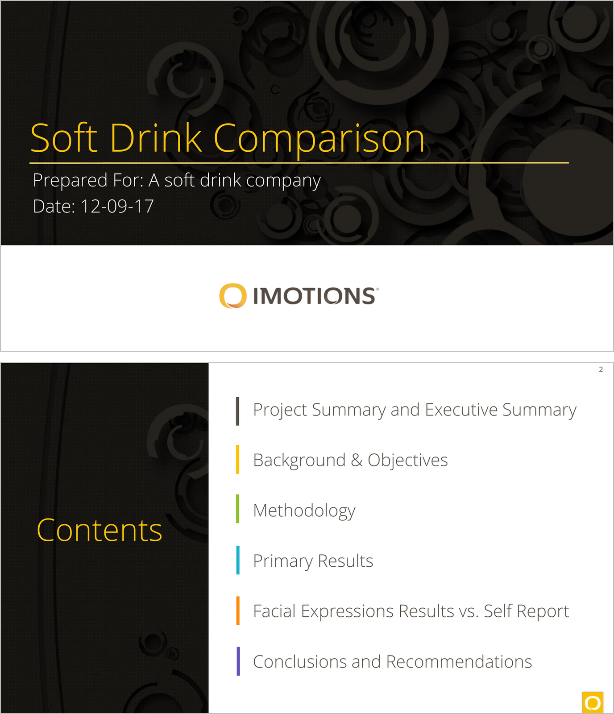
From questions to an analysis plan
The fictional client of the worked example, the ALTAVO brand team, wants to know how its new hiking ad performs against a competitor's cycling ad, and in the end it asks one question: which ad should we run? That is a decision, not a research question. No single test can answer it, because "better" can mean seen, felt, liked, or remembered, and each of these is measured by a different sensor, on a different scale, with a different test. The first job of analysis is translation, from the client's question to research questions that each name a measure, a comparison, and a test.
The model client report (client_report_model.md) lists what the team wanted to know: "Do viewers look at the brand? Does the ad produce positive emotion? Does it get a physical reaction? Do viewers like it? Do they remember the brand?" The team also asked about purchase intention. Each becomes a research question with a measure:
- Look at the brand: gaze dwell time on the Logo, Product, and Headline AOIs, as a percent of the 30 s ad (eye tracking).
- Positive emotion: the percent of time with AFFDEX Joy at or above 50, with Engagement and Brow Furrow beside it (facial expression).
- Physical reaction: GSR Peaks Per Minute during each ad and during the Baseline, a gray screen shown before the ads (skin conductance).
- Liking: liking of each ad from 1 to 7 (survey). Memory: brand recall for each ad, correct or not (survey).
- Purchase intention: one item from 1 to 7, asked once after both ads, about reusable water bottles in general. It names no brand, so it cannot compare the ads, and the plan says so instead of forcing a test.
Translation also brings up questions the client did not ask but the analysis must: did the order of the ads matter (a check of the counterbalancing), how do the measures of different sensors go together across people, and how many viewers would the next study need?
The analysis plan as a table
An analysis plan has one row per question and makes five decisions in each row: the question, the measures, the test, the correction for multiple tests, and the status. The worked example's plan, SIMULATED_analysis_plan.csv (SIMULATED), has eleven rows; the table below condenses it. Section 02 explains each test in plain words, so for now read the table for its structure.
| Id | Question | Measures | Test | Correction | Status |
|---|---|---|---|---|---|
| H1 | Is brand recall more likely when the Logo was fixated? | Logo fixated (AOI export); brand recall (survey) | Fisher's exact test on the pooled 2 x 2 table; each ad alone; mixed logistic regression | None (own family) | Planned (Workshop 7) |
| H2 | Do ads that produce more Joy get liked more? | Joy, percent of time (FEA export); liking (survey) | Linear mixed model of liking on Joy per 10 points and the ad, with a random intercept per participant; correlations for each ad | None (own family) | Planned (Workshop 7) |
| H3 | Are GSR peaks per minute higher during each ad than during Baseline? | GSR Peaks Per Minute (GSR export) | Paired t tests, dz with 95% CI, Wilcoxon signed rank checks | Holm over 2 ads | Planned (Workshop 7) |
| Q4 | Does gaze dwell differ by AOI, and does the AOI pattern differ between the ads? | Gaze dwell, percent of the ad: Logo, Product, Headline (AOI export) | Linear mixed model of dwell on ad, AOI, and their interaction, random intercept per participant; check: repeated measures ANOVA with the Greenhouse Geisser correction | None (omnibus) | Planned (Workshop 8) |
| Q4a | Which AOIs differ within each ad? | Gaze dwell, percent of the ad | 6 paired t tests, dz with 95% CI, Wilcoxon checks | Holm over 6 | Planned (Workshop 8) |
| Q4b | Does each AOI hold more gaze in one ad than in the other? | Gaze dwell, percent of the ad | 3 paired t tests, dz with 95% CI, Wilcoxon checks | Holm over 3 | Planned (Workshop 8) |
| Q5 | Do Joy, Engagement, and Brow Furrow differ between Ad_A and Ad_B? | Percent of time at or above threshold 50 (FEA export) | 3 paired t tests, dz with 95% CI, Wilcoxon checks (values pile up at zero) | Holm over 3 | Planned (Workshop 8) |
| Q6 | Do the ads differ on liking, brand recall, and arousal? | Liking and recall (survey); GSR Peaks Per Minute (GSR export) | Paired t tests (liking, GSR); exact McNemar test (recall) | Holm over 3 | Planned (Workshop 8) |
| O1 | Did order (AB or BA) or position (first or second) change liking or dwell? | Liking; gaze dwell on Logo, Product, Headline | Linear mixed model of each measure on ad, order, and their interaction, random intercept per participant: the order effect and the position effect | Holm over 8 | Planned check (Workshop 8) |
| E1 | How do the measures of different modalities go together across participants? | Logo dwell, Joy, GSR change, liking, recall, purchase intention, attitude | Spearman's rho with 95% CI, 21 pairs, no p values | None (no tests) | Exploratory |
| P1 | What could n = 22 detect, and what n does the next study need? | (design values) | power.t.test (paired); power.prop.test and a simulation of Fisher's exact test for H1 | Not applicable | Sensitivity analysis |
Read the table by its columns. Each question can be answered with a yes or no, or with an estimate. Each measure names the export it comes from. Each test is chosen before the data are seen, often with a check beside it: a second analysis that relaxes one assumption of the first, such as a Wilcoxon test beside a t test. If the check disagrees, the report says so. The correction column names the family of tests and the method. The status column says when the row was written.
Status is where honesty starts. A planned analysis was written down before the results were seen. H1 to H3 were written into the study protocol before any participant was recorded. Q4 to Q6 and the order check O1 were written into the plan after the data existed but before these analyses were run, so they carry less confirmatory weight than H1 to H3, and the analysis strategy of the model write up (results_text.md, part a) says so in one sentence. E1 is an exploratory analysis, labeled as such in advance: it estimates 21 correlations, reports each with an interval and without a p value, and tests nothing. P1 is not a test at all; it asks what the design could detect.
Families of tests
A test run at alpha = .05, the false positive rate the researcher agrees to accept, has a 5 percent chance of a false positive when nothing is going on, so a report with many tests will contain some "significant" results that chance alone produced. E1 makes the point with arithmetic: if none of its seven measures were related to any other, about 1.05 of its 21 intervals (21 times .05) would still exclude zero. The iMotions article General Data Analysis and Interpretation says it in the vendor's words: "The more tests we conduct, the higher the chance of observing a false-positive result," which is why it recommends "a clear research question, a hypothesis, and an analysis plan before data collection so that we do as few comparisons as possible."
A family of tests is the set of tests that together answer one question. Within each family the plan applies Holm's correction, which keeps the chance of at least one false positive in the family at .05 (Holm, 1979); section 06 shows how it works. Families follow the questions, not convenience: H3 is a family of two tests, one per ad; the six AOI comparisons of Q4a form another; Q5 holds three expressions, Q6 the three comparisons the client asked for, and O1 eight order checks. H1 and H2 are each a family of one, with their per ad estimates as checks. The omnibus tests of Q4, single F tests of whether any of several means differ, are not adjusted. Draw the families before the results exist: moving a test into a smaller family after seeing its p value is one more way to make a result look stronger than it is.
Why the plan comes before the numbers
A plan written after the results is a story, not a plan. Once you know which comparison came out significant, it is easy, and usually unintended, to tell the analysis as if that comparison had been the question all along. Kerr named this HARKing, hypothesizing after the results are known (Kerr, 1998). Undisclosed flexibility in which measures, exclusions, and tests to report allows presenting almost anything as significant (Simmons et al., 2011). Preregistration, a dated plan written before the data exist, separates prediction, which tests a hypothesis, from postdiction, which generates one (Nosek et al., 2018). Purely confirmatory research fixes the analysis in advance so that its p values mean what they claim, and exploratory work stays welcome as long as it is labeled as exploratory (Wagenmakers et al., 2012). The APA reporting standards ask authors to describe their analytic strategy separately for primary, secondary, and exploratory hypotheses (Appelbaum et al., 2018), which is what the status column records.
None of this forbids looking at the data. It forbids pretending that you had not. In the model results the 21 exploratory correlations of E1 are reported in full, with their intervals, and "offered as hypotheses for a new study, not as findings."
What the vendor's ad testing template recommends
The iMotions Study Template for TV and Digital Ad Testing is a one page method sheet (figures below). It lists four "Potential Business Objectives", the modalities (GSR, EEG, eye tracking, facial expression analysis, and self report), "Sample Specs" ("N = 30 per cell"; "Up to 3 videos per person; up to 9 masking videos"), a methodology in three steps (setup and calibration, the target videos shown in a clutter reel or within a longer viewing experience, and a brief survey of "video recall, likeability, etc."), and three "Key Deliverables": a time course of emotional response, visual attention heat maps, and percent time of facial expressions. It gives no metric names, no analysis steps, and no statistics.
Two lessons follow for the plan. First, its objectives are business objectives, like the client's question: "Understand which, of multiple, creatives may perform best in-market" still has to be translated into measures and tests. Second, "N = 30 per cell", where a cell is one condition, is a vendor convention, not a power calculation; the lab's study type guide (Project doc 01) treats sample sizes as "lab planning conventions, not iMotions rules" and plans 25 to 30 usable participants per condition for a screen based video test. The worked example, with 22 participants (SIMULATED) who each saw both ads, falls below that convention; the sensitivity analysis P1 (section 06) says what 22 could detect and how many the next study needs.
![Upper half of the iMotions Study Template TV & Digital Ad Testing: over a photo of a viewer seen from behind watching a television, Potential Business Objectives (identify ads, or moments within ads, that connect emotionally with consumers; evaluate ad creative iteratively at multiple stages; understand which, of multiple, creatives may perform best in-market; determine the impact of creative elements such as music and characters); below, Modalities (Galvanic Skin Response (GSR), Electroencephalography (EEG), Eye Tracking (ET), Facial Expression Analysis (FEA), Self Report) and Sample Specs (N = 30 per cell; up to 3 videos per person, up to 9 masking videos; gen pop or targeted recruit; 100% right-handed for EEG; gender split based on target demographics)](../assets/ws8/figures/method_tv_ad_testing_objectives_sample.png)
![Lower half of the TV & Digital Ad Testing template: Methodology in three steps, Setup & Calibration (participants wear an EEG cap and a wrist based GSR device while seated in front of a monitor that captures eye tracking and facial expressions), Target Content Presentation (target videos in a clutter reel with masking videos, or within a longer experience such as a full hour of TV), and Survey (a brief self-report questionnaire about video recall, likeability, etc.); and Key Deliverables drawn as icons: Time-course Emotional Response (two lines, Video A and Video B, over Time (sec)), Visual Attention Heat Maps (Low Attention to High Attention), and Percent Time of Facial Expressions (one donut chart per video with Joy, Negative, Surprise and Neutral)](../assets/ws8/figures/method_tv_ad_testing_flow_deliverables.png)
The vendor's sample client reports open the same way, with a "Background & Objectives" slide. The Food Testing sample report lists three numbered questions (figure below). Read as a plan, they fall short: none names a measure or a test; the second asks how consumers respond "consciously and non-consciously" without saying how either is measured; and the third, which sample participants prefer, is the client's decision question again. With 10 participants and only means on its charts, the report still recommends removing two of the four samples from consideration. A plan that wrote each question with its measure and test would have forced the question of whether 10 people could settle it.
![Background & Objectives slide of the Food Testing sample report with the subtitle Food testing and the IMOTIONS logo: a global food ingredient supplier has 4 candidate food samples for potential inclusion in a new line of cakes and uses neuro and biophysiological testing to see how consumers respond consciously and non-consciously; three numbered questions on dark bands: 1 How do the food samples influence the consumers emotionally? 2 How consumers responds consciously and non-consciously to the 4 samples? 3 Which of the 4 food samples they prefer?](../assets/ws8/figures/sample_food_background_objectives.png)
Help center articles for this section: General Data Analysis and Interpretation · Standard Methodologies: TV and Digital Ad Testing. Manual PDFs on this site: General Data Analysis and Interpretation and Standard Methodologies: TV and Digital Ad Testing. The Food Testing sample report is in the lab folder; ask the instructor. Data file: SIMULATED_analysis_plan.csv.
Translate a client's question into research questions with measures and tests, write the analysis plan as a table with families, corrections, and status, tell planned from exploratory analyses and say why the plan comes first, and read the vendor's ad testing template as a starting point rather than a plan.Choosing the analysis
Three facts about a question pick its test: what is compared, what kind of number the outcome is, and how the observations are linked. Get the third wrong and the p value is wrong, however carefully you compute it.
- What is compared? Two conditions (an ad against the Baseline, Ad_A against Ad_B), more than two (three AOIs), or two measures that may go together (Joy and liking).
- What kind of number is the outcome? A measured amount, such as Peaks Per Minute or dwell; a rating from 1 to 7, which is ordinal; a yes or no outcome, such as Logo fixated or brand recalled; or a percent of time that piles up at zero, such as Brow Furrow.
- How are the observations linked? In a within subjects design every participant gives a value in every condition, so the values come in pairs or sets from one person. In a between subjects design different people give the values. The worked example is within subjects for the ads and the AOIs, and between subjects only for order (AB or BA).
The table applies the three facts to every row of the plan.
| Question | Compared | Outcome | Linked | Test | Check |
|---|---|---|---|---|---|
| H3 | Each ad against Baseline | Peaks Per Minute | Paired, same person | Paired t test, dz | Wilcoxon signed rank; Holm over 2 |
| Q4 | 3 AOIs in 2 ads | Dwell, percent of the ad | 6 values per person | Linear mixed model | Repeated measures ANOVA; paired follow ups with Holm |
| Q5 | Ad_A against Ad_B | Percent of time, many zeros | Paired | Paired t test, dz | Wilcoxon signed rank, the guide when zeros dominate |
| Q6, liking | Ad_A against Ad_B | Rating, 1 to 7 | Paired | Paired t test, dz | Wilcoxon signed rank |
| Q6, recall | Ad_A against Ad_B | Yes or no | Paired | Exact McNemar test | None |
| H1 | Logo fixated or not | Yes or no | Two observations per person, pooled | Fisher's exact test, odds ratio | Each ad alone; mixed logistic regression |
| H2 | Joy and liking | Amount and rating | Two pairs per person | Linear mixed model | A correlation for each ad |
| O1 | AB against BA; first against second | Liking, dwell | Order between people, ad within | Linear mixed model | Holm over 8 |
| E1 | Seven measures | Mixed types | One value per person | Spearman's rho with CI | None (no p values) |
The manual's decision chart, and what it leaves out
The iMotions article General Data Analysis and Interpretation offers a decision chart (figure below; Workshop 7 used it for H3). Walk Q5 through it: the ad is a discrete independent variable with two conditions ("≤ 2"), we are not comparing a sample to a population, and the conditions are not independent, because the same people saw both ads. The chart ends at "Repeated measures t-test", the paired t test. Q4, with three AOIs ("> 2") measured on the same people, ends at "Repeated measure ANOVA".
The chart is a start, not a plan. It has no branch for rank based tests such as the Wilcoxon signed rank test, none for yes or no outcomes, no effect sizes, and no linear mixed models, and it asks only about the independent variables, never what kind of number the outcome is: the question that sends recall to McNemar and Brow Furrow to a rank based check. Its "Mixed model ANOVA" box, for designs with at least one independent and one repeated factor, is not the linear mixed model of the plan but an analysis of variance with a between and a within subjects factor, the shape of the order check O1. Its last box on the continuous side is too small to read in the PDF (it appears to say "Kappa's α"); it is on the Items to verify list (section 11).
![iMotions decision chart for choosing a statistical test: from the top box Are your independent variables discrete or continuous?, the discrete branch asks How many groups / conditions do you have?, whether a sample is compared to a population, and whether conditions are independent, ending in Z-test, One-sample t-test, Independent samples t-test, Repeated measures t-test, One-way ANOVA, Multivariate ANOVA (MANOVA), Factorial ANOVA, Repeated measure ANOVA and Mixed model ANOVA; the continuous branch asks How many total variables do you have?, whether predictive relationships are wanted, and the lowest level of measurement, ending in Simple Regression, Pearson's r correlation, Spearman's correlation, Multiple Regression, Multivariate Regression and one small box that is hard to read; the IMOTIONS Unpack Human Behavior logo sits at the lower right](../assets/ws7/figures/data_statistical_test_decision_chart.png)
Assumptions and rank checks
Every test assumes something, and the plan names a check for each assumption it cannot take for granted. The paired t test, which works on each participant's difference between two conditions, assumes that the differences are roughly normal, or that the sample is large enough for that not to matter. Percent of time piles up at zero, and you can know that before testing: Workshop 7 found no Joy at all in 11 of its 44 participant by ad observations (SIMULATED), and Brow Furrow, which faces rarely show, was zero in both ads for 17 of 22 participants (section 08). Most differences are then zero, and a t test rests on the few people who differ. The plan therefore pairs every paired t test with a Wilcoxon signed rank test, which ranks the differences by size and drops the zeros; when the differences are far from normal, as a Shapiro Wilk test can show, the rank based test is the guide.
The linear mixed model of Q4 assumes one spread of the errors for all three AOIs, yet dwell on a small Logo that many viewers never look at is likely to vary less than dwell on a large Product. So the plan adds a repeated measures ANOVA, which tests each effect against its own error term, with the Greenhouse Geisser correction (Greenhouse & Geisser, 1959), which reduces the degrees of freedom when the differences between pairs of conditions do not vary equally, and paired follow ups that use each comparison's own spread. Section 08 says what each check showed.
Why repeated measures need paired tests or mixed models
Two values from one person are not two people. Some participants smile at everything, some sweat more, some like every ad. A paired test removes those personal levels by working on each person's difference; a mixed model does the same with a random intercept, a personal starting level. An independent samples t test, which assumes that every value comes from a different person, does neither.
Md and SDd are the mean and standard deviation of the differences, one per participant. The personal levels cancel in each difference; an independent test builds its error from the raw values, which keep them.
Ignoring the pairing can go wrong in both directions. Within one comparison it usually leaves the person to person spread in the error, so a real difference is harder to detect. Pooling repeated observations as if they came from different people overstates precision: the Soft Drink sample report regresses liking on facial valence over 230 tastings from about 40 people, up to six each, as if they were 230 independent points (section 06 returns to it). The plan's mixed models, fitted with lme4 (Bates et al., 2015), give each participant a random intercept.
The same logic applies to the ads themselves. The study has one ad per brand, so a difference between the ads cannot be separated from those two particular ads. Treating ads as a random factor, a sample from all the ads a brand might run, takes several ads per brand (Judd et al., 2012), and in such designs power depends on the number of stimuli as well as the number of participants (Westfall et al., 2014) (Brysbaert & Stevens, 2018). Section 10 turns this into advice for the next study.
![Modalities and Study Details slide of the Food Testing sample report: on the left, Galvanic Skin Response (GSR), Electroencephalography (EEG) and Survey, each with the questions it answers, the EEG questions asking about shelves and packs; on the right, Stimuli Tested: 4 Food samples, Coconut Sponge Cake, Carrot Cake, Lemon Cake and White Bread, with photos and short descriptions, and Study Specifications: N=10, ages 25-45, males and females, 4 food samples per respondent, no known allergies to ingredients being tested, and the location](../assets/ws8/figures/sample_food_modalities_study_details.png)
McNemar for paired proportions
Recall of each ad is yes or no, and each participant answered for both ads. Sort the 22 participants by recall after Ad_A and recall after Ad_B. People who recalled both brands, or neither, say nothing about which ad is remembered better; only the discordant pairs, people who recalled one brand but not the other, carry that information. McNemar's test asks whether the discordant pairs split evenly (McNemar, 1947); its exact version is a binomial test on them.
Exact McNemar test on the 10 discordant pairs: p = 1.000. Recall was 12 of 22 for each ad.
McNemar or chi square? A chi square test, or Fisher's exact test when counts are small, compares groups of different people. When the same people answer twice, the 44 recall answers are not 44 independent observations, and a chi square test of ad by recall would treat them as if they were. H1 is a middle case: its pooled table of Logo fixated by recall holds two observations per person, which is why the plan adds each ad alone and a mixed logistic regression as checks.
Creating the analyses that make the comparisons exist
Why. The tests run outside iMotions, but every number they use was computed inside an iMotions analysis, a named selection of respondents, stimuli, and signal processing flows within a study, and every visual a client sees is drawn from one. "Results are calculated over Annotations, according to the Signal Processing and/or AOIs included in your analysis" (Analysis Overview), so a comparison must exist in the analysis before it can exist in an export: an ad without AOIs has no dwell values, a time window that is not an annotation has no rows of its own, and a notebook never added has no metrics. An annotation added after the notebooks ran needs the analysis recalculated (right-click the analysis, then Recalculate; Project doc 02b). Practice on a vendor demonstration study.
- Start the analysis. Hover over the study name in the LIBRARY and click the Add Analysis button, a plus with a people icon, that appears. You should see a window with four tabs: SEGMENTATION SETTINGS, SEGMENTATION CRITERIA, SIGNAL PROCESSING, and SELECT STIMULI. One article calls the button Create Analysis and the screenshots show the tooltip Add Analysis; check which label Lab 11.1 shows (Items to verify).
- SEGMENTATION SETTINGS. Enter a Name and, as needed, Comments, and click Next. The box "Use fixations for heat maps" appears to choose between fixations and raw gaze points for heatmaps; section 04 returns to it.
- SEGMENTATION CRITERIA. Choose respondents by hand in the list, or by Gender, Age, Flow, and Group. You should see Gender, Age from, Age to, Flow, and Group. For exports, keep everyone and click Next: this is the master analysis of Workshop 7. Common mistake. Leaving respondents out here to apply an exclusion rule: the rule belongs in code, where every exclusion is logged.
- SIGNAL PROCESSING. Click the plus button next to "Active flows", choose Devices and Algorithm, and give each flow a unique Flow name. An analysis may have no Active flows; AOIs are drawn separately, in the AOI window that the AOIs button opens. You should see each R notebook you added listed under Active flows.
- SELECT STIMULI. "All stimuli are selected by default"; "At least one stimulus must be selected." Click Add. You should see the new analysis "in the drop-down list below the study" and the analysis buttons at the bottom of the main window. "Your Analysis can be edited at any time."
![The four steps of the Add Analysis window as four overlapping dialogs: SEGMENTATION SETTINGS with Name Your iMotions Study-1, Study Your iMotions Study, Comments, and an unticked Use fixations for heat maps box; SEGMENTATION CRITERIA with Gender ALL, Age from 0, Age to 0, Flow All flows, and Group All groups; SIGNAL PROCESSING with an empty Active flows list, minus and plus buttons, Devices, Algorithm, Flow name, Parameters, Save as default and Factory default; and SELECT STIMULI with Check the stimuli to be included in the analysis, Select all, Screen recording 1 ticked, and the buttons Cancel and Add](../assets/ws8/figures/replay_create_analysis_four_steps.png)
A segment is the group of respondents an analysis includes; segments are for seeing, not for testing. The vendor's screenshots suggest one analysis per segment (Analysis, Analysis_EXPERT, and Analysis_NOVICE under one study), so showing a client the two order groups takes one analysis per value of Group. Whether the Group list shows the values typed at the sessions, and whether one Aggregate Replay can show two segments at once, are items to verify. The order test O1 uses no segments: it models all 22 participants at once.
Help center articles for this section: General Data Analysis and Interpretation · Analysis Overview · Replay and Analysis Windows. Manual PDFs on this site: General Data Analysis and Interpretation, Analysis Overview, and Replay and Analysis Windows. The Food Testing and Soft Drink sample reports are in the lab folder; ask the instructor.
Pick a test from what is compared, what kind of number the outcome is, and how the observations are linked; walk a question through the iMotions decision chart and name what the chart leaves out; explain why repeated measures need paired tests or mixed models; plan rank based checks for data that pile up at zero; choose between McNemar and chi square; and create the analysis in which the comparisons exist.The worked example
Everything in sections 01 and 02 fits on one page. Below is the SIMULATED Multimodal Ad Study of Workshop 7 as the analysis sees it: the study in one paragraph for readers who skipped Workshop 7, the plan as a one page summary, the files, and what Workshop 8 adds. Read it as a template for your own projects.
No person was recorded, no camera or sensor was switched on, and no file from a lab study was used. A script wrote the Workshop 7 data (seed 20271231), and analysis_full.R computed every number in this workshop from them. The participants are codes, P01 to P24; ALTAVO and BRENLOW are invented brands; and the ALTAVO brand team is a fictional client. Every number in this section is simulated, and no number in this workshop may be quoted as a finding.
The study in one paragraph. Twenty-four participants came to the lab one at a time and saw, on the lab desktop, an instruction screen, a 60 s Baseline (a gray screen with a fixation cross), and two 30 s video ads for reusable water bottles: Ad_A for ALTAVO, a hiking scene, and Ad_B for BRENLOW, a cycling scene. Odd participants saw the ads in the order AB and even participants BA, and a survey slide followed. A Smart Eye Aurora recorded gaze at 60 Hz on three AOIs per ad, Logo, Product, and Headline; Affectiva AFFDEX scored the face; and a Shimmer3 GSR+ recorded skin conductance at 128 Hz. Workshop 7 exported every file, applied three exclusion rules fixed before collection (R1, use only recordings marked for use; R2, exclude a participant whose eye tracking quality was below 90 percent or AFFDEX quality below 80 percent on an ad; R3, drop a GSR value when less than 80 percent of its signal was present), merged the files into two analysis ready tables, and tested three hypotheses. Rule R2 removed P18 and P21, which left 22 participants, 11 in each order; rule R3 removed the GSR value of P05 for Ad_B.
- Client question
- Which ad should we run? The fictional ALTAVO brand team wants to know how its new hiking ad (Ad_A) performs against a competitor's cycling ad (Ad_B). Section 01 translates the question into the plan below.
- Analysis sample
- 22 of 24 participants after rule R2 (P18 and P21 excluded); 21 for GSR during Ad_B after rule R3; 66 participant by stimulus rows. The order groups AB and BA hold 11 participants each.
- Measures
- Eye tracking: gaze dwell on the Logo, Product, and Headline as a percent of the ad, and whether the Logo was fixated (AOI export). Face: percent of time with Joy, Engagement, and Brow Furrow at or above 50 (FEA export). Arousal: GSR Peaks Per Minute during Baseline and each ad (GSR export). Survey: liking of each ad (1 to 7), recall of each ad's brand (correct or not), attitude toward reusable water bottles (three items, 1 to 7), and purchase intention (one item, 1 to 7, asked once about reusable water bottles in general).
- Planned in Workshop 7
- H1, Logo fixation and brand recall: OR = 4.34, Fisher's exact p = .032. H2, Joy and liking: b = 0.32 per 10 points of Joy, p = .110. H3, GSR Peaks Per Minute above Baseline: dz = 0.83 for Ad_A and 0.95 for Ad_B, both Holm p < .001. These must come out identical in Workshop 8.
- Planned in Workshop 8
- Q4, attention by ad and AOI, with the follow ups Q4a (AOIs within each ad) and Q4b (each AOI between the ads); Q5, Joy, Engagement, and Brow Furrow by ad; Q6, the client's head to head comparisons on liking, recall, and arousal. Written after collection, before these analyses ran.
- Planned check
- O1, order and position effects on liking and on dwell for each AOI: eight checks.
- Exploratory
- E1, 21 Spearman correlations among seven participant level measures, each with a 95% CI and no p value.
- Sensitivity analysis
- P1, the smallest effect 22 participants could detect, and the sample sizes the next study needs.
- Multiplicity
- Two tailed tests at alpha = .05. Holm's correction within each family: H3 (2 tests), Q4a (6), Q4b (3), Q5 (3), Q6 (3), O1 (8). The omnibus tests of Q4 are not adjusted.
- Software
- R 4.3.3 with readr, dplyr, tidyr, ggplot2, lme4, and lmerTest; nothing else needs installing. The Excel route, SIMULATED_analysis_report.xlsx with excel_walkthrough.md, reproduces the descriptives, the Q5 tests, and the Holm correction.
- Deliverables
- A table of descriptive statistics (Table 1), a table of all tests, five figures and a figure of assumption checks, the APA analysis strategy, results, and discussion, and a client report (sections 07 to 10).
The files
All files sit in the site's data folder; the README says what each is, how to run the script (about 2 minutes, most of it a simulation for the power analysis), and which results look like errors but are not.
| File | What it holds | Section |
|---|---|---|
| analysis_full.R | The whole analysis in STEP blocks 0 to 11 (with 6B); writes the console log, the CSV files, and the figures | 08 |
| analysis_output.txt | The full console log; every number in the write ups is copied from it | 08 to 10 |
| SIMULATED_analysis_plan.csv | The plan of section 01 | 01 |
| SIMULATED_descriptives.csv | n, mean, SD, median, quartiles, IQR, minimum, maximum, and percent at zero for every measure by stimulus (Table 1) | 07 |
| SIMULATED_q4_marginal_means.csv | Q4: estimated marginal means of dwell by ad and AOI, with SE, df, and 95% CI | 08 |
| SIMULATED_participant_level.csv; SIMULATED_correlations.csv | E1: one row per participant with the seven measures; the 21 correlations with their CIs | 08 |
| SIMULATED_power.csv; SIMULATED_power_h1_simulation.csv | P1: the sensitivity power analysis, and the simulated power of Fisher's exact test for H1 by sample size | 06 |
| SIMULATED_all_tests.csv | Every test and estimate, 59 rows: family, status, statistic, df, p, Holm p, effect size with 95% CI, means, SDs, the Wilcoxon check | 09 |
| SIMULATED_analysis_report.xlsx; excel_walkthrough.md | The Excel route, with exact sheet names, cells, and formulas | 07, 08 |
| results_text.md | Model paragraphs: (a) analysis strategy, (b) results in APA style, (c) discussion | 09, 10 |
| client_report_model.md | A model client report for the fictional ALTAVO brand team | 09 |
| Workshop 7 inputs: analysis_ready_long.csv, analysis_ready_wide.csv, codebook.csv, analysis_output.txt, SIMULATED_test_results.csv | The long table (one row per participant and stimulus, with a dwell column per AOI), the wide table (one row per participant), the codebook, and Workshop 7's output and results, byte identical copies | 03, 08 |
The continuity check
Workshop 8 never changes a Workshop 7 result. STEP 1 of analysis_full.R reads the five Workshop 7 files, from the Workshop 7 folder when it is present and otherwise from ws7_inputs, compares the MD5 checksums of the two copies when both exist, and checks every column against the codebook. STEP 4 then runs H1 to H3 again with the Workshop 7 code and compares the result with Workshop 7's output: all 55 printed lines are identical, and the 94 stored values differ by at most 1.9e-16, a relative difference at the limit of the computer's arithmetic. This continuity check stops the script on any mismatch.
Why so strict? If the same data and code gave a different answer in a second report, either the data or the code changed, and every result built on them would be in doubt. A client who sees a number move between two reports without a stated reason stops trusting all of them. Reproducing the earlier numbers exactly before adding new ones is the cheapest quality check a lab has.
What Workshop 8 adds
- Q4 to Q6: where viewers looked in each ad, whether their faces differed between the ads, and the three comparisons the client asked for. All are paired, because every participant saw both ads.
- O1: a check that the order of the ads did not decide the comparisons.
- E1: how the measures of the four modalities go together across people, labeled exploratory.
- P1: what 22 participants could detect, and how many the next study needs.
- The two write ups: the APA results and discussion, and the client report.
The pictures a client expects
A client will also expect pictures. The vendor's ad testing template promises "Visual Attention Heat Maps", and the sample reports with eye tracking use heatmaps as their largest pictures. The three vendor examples below, none from the simulated study, preview the visuals of section 04 and their limits for two video ads.
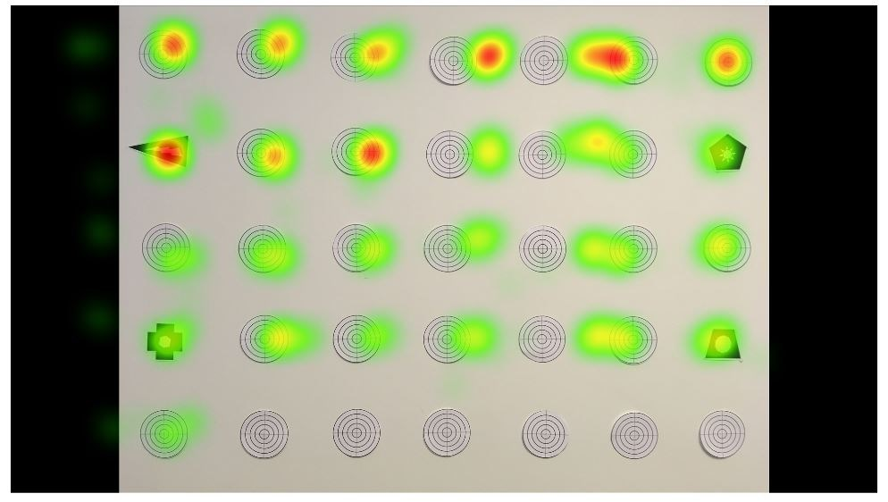
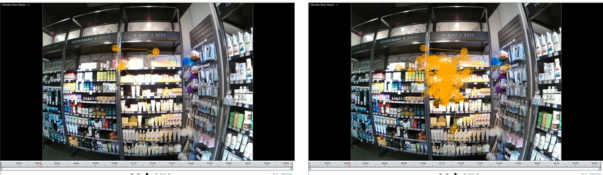
![Report Tools window with the REPORTS tab and Open in browser: the Reports list AFFDEX Blink Detection, AFFDEX thresholding, AFFDEX thresholding Aggregation, Eyetracker Blink Detection, GSR Peak Binned Aggregation, GSR Peak Detection, GSR Signal Quality and Emotional heatmap, the last boxed with a yellow arrow; the Emotional Heatmap page, Displays a heatmap of aggregated eye tracking data filtered by selected facial expression data., with Settings IMAGE Color profile Original or Grayscale, SIGNAL 1 Positive in orange and SIGNAL 2 Negative in light blue, each with Threshold (0-100) 50, the buttons Reset zoom and Export heatmap, and a web shop product page for a gaming headset covered with mostly orange blobs](../assets/ws8/figures/emoheat_reports_window_example.png)
Help center articles for this section: Heatmaps · Basic Heatmap Explanation and Generation · Scan Paths and Individual Heatmaps · Emotional Heatmap · iMotions Reports. Manual PDFs on this site: Heatmaps, Basic Heatmap Explanation and Generation, Scan Paths, Emotional Heatmap, and iMotions Reports. Data files: README.md and the files in the table above.
Recap the worked example in one paragraph, read its plan, find the file behind every question, explain why H1 to H3 must reproduce Workshop 7 exactly, name what Workshop 8 adds, and say which iMotions visuals apply to video ads.Seeing the data in iMotions
A client who asks "which ad should we run?" expects to see where viewers looked and when their faces and skin responded. This section opens each visual tool of the analysis toolbar and says what it shows, what it cannot show, and where the numbers for a test come from instead. One rule runs through it: the visuals are for seeing and showing, not for testing. Heatmap colors are relative and qualitative; the numbers for the tests of section 08 come from the exports that Workshop 7 prepared (the Individual AOI metrics and the FEA and GSR metrics files).
The SIMULATED Multimodal Ad Study exists only as files. Practice the steps below on a vendor demonstration study in the Library of the lab computer, never on a lab study with participants, and picture the worked example: two 30 s video ads (Ad_A for ALTAVO, Ad_B for BRENLOW) with the AOIs Logo, Product, and Headline, AFFDEX, and a Shimmer3 GSR+.
On the lab computer (iMotions Lab 11.1, build 11.1.47136.14, checked on October 10, 2026) the analysis toolbar reads Replay, Aggregate, AOIs, Gaze Map, Heatmap, Survey, Signal Processing, Reports, Dashboard, Export. A button that does not apply to the selected stimulus is gray; with a video, Heatmap and Survey are gray, which is normal. The manuals' screenshots come from releases 8.1 to 10.0, so labels that differ between articles are flagged below and listed under Items to verify (section 11).
| Tool | What it shows | What it cannot show | Numbers for tests come from |
|---|---|---|---|
| Aggregate Replay | Group curves of the notebook signals over the stimulus, and a dynamic heatmap | Individual respondents, markers, any test | FEA and GSR metrics exports |
| Heatmap | Where the gaze of a group concentrated | Order of looking, time per person, liking, absolute amounts, differences between versions | Individual AOI metrics |
| Scan path | One respondent's fixations, in order | Anything about the group | Individual AOI metrics |
| Emotional Heatmap | Gaze kept only while a chosen AFFDEX metric was above a threshold (images and surveys only) | That the element caused the expression | AOI and FEA exports, joined |
| AOI metrics panel | One average per AOI over the analysis | Spread, or anything to test | Individual AOI metrics |
| Dashboard | Charts drawn from the multi-modal R export results (section 4.8); bar plots and a circumplex, according to the release notes | Any test; its charts with data have not yet been checked on the lab computer | The exports |
4.1 Opening the Aggregate Replay
Why. The Aggregate Replay "replays the aggregated data from all respondents included in the analysis"; it is "the place where you review the sensor data of a group of respondents, typically with the purpose of spotting group-level patterns" (Aggregate Replay). It exists only at the analysis level and shows exactly the respondents that the analysis includes: one analysis is one segment. To compare groups, such as experts and novices, the vendor builds one analysis per group; whether one window can show two segments is an item to verify.
- Select the analysis in the Library (section 02 shows how to create one). You should see the analysis toolbar at the bottom of the main window.
- Open the window. Click a stimulus in the stimulus bar, click Aggregate, then the button that opens the window: "Edit Result" on screen in the release 8.1 article ("Edit result" in its text), "Open analysis" in the Analysis Overview and Heatmaps articles (Items to verify). You should see the tabs REPLAY, AGGREGATE, and AOI, with AGGREGATE selected. A gray Aggregate button means the window does not apply, as for "website recordings, face recordings, scene recordings and screen recordings".
- Choose the panels from the "Panels" drop-down; here "the only available panels are the 'Stimulus', 'Signals', and 'Annotations' panels". Common mistake. Looking for a respondent: the aggregate window has no respondents and no faces, which is also why it can be shown to a client.
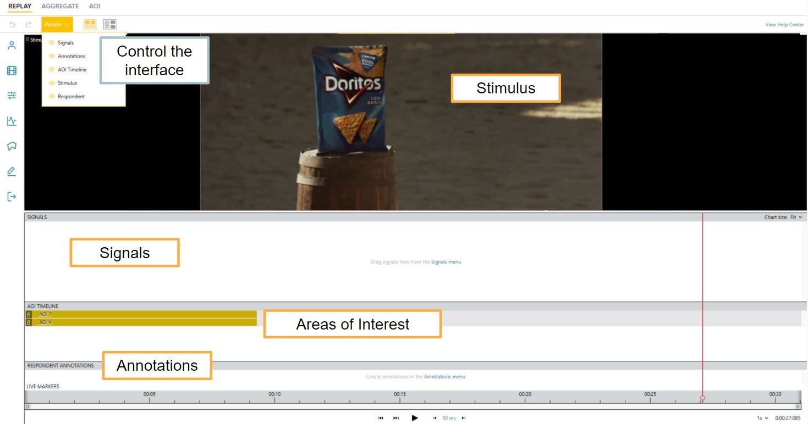
4.2 Group curves and stimulus annotations
Why. Only aggregated signals are available here, and they "will only be available if your have already run the relevant R-Notebooks" (sic). An aggregated signal is one curve for the whole analysis: FEA thresholding Aggregation counts the respondents showing an expression at each moment, and GSR Peak Binned Aggregation sums, across respondents, the time bins that hold a peak (Project doc 02b). Each runs as an extra Active flow after its individual flow (section 05). The curves show when the group responded; they are not the per respondent numbers that the tests use.
- Add the curves from the Signals menu. Their names differ by release: "Aggregated AFFDEX (thresholded)" and "Aggregated Binned GSR Peaks (Shimmer3)" in 8.1, "FEA thresholding Aggregation" in 10.0. You should see one step line per signal; in the vendor example the y axis counts respondents, from 0 to about 6. The 11.1 names, and whether the lab's curves show counts or percentages, are items to verify.
- Fix the scale. The menu of each graph offers "Chart type: Line | Area", "Range: Auto | Fixed", "Min", "Max", and "Color". Set Fixed with the same Min and Max for both ads, or equal heights can mean different numbers. Common mistake. A curve on a slide without its N.
Stimulus annotations. A stimulus annotation marks a time window once for everyone, which "typically only makes sense ... if the annotated events have the exact same time in all respondents". A video ad plays the same frames at the same moments for every viewer, so a scene such as the EndCard of the worked example (25,000 to 30,000 ms) suits one: open the Stimulus annotations menu, click "Add annotation", and start annotating. Markers cannot be shown in this window. Since release 11.1.12, aggregate heatmaps can also use respondent and automated annotations (Project doc 10).
![Signals menu of the Aggregate replay editor with the labels Add signals, Add/remove, and Edit: groups Aggregated Frontal Asymmetry (0/1), Aggregated Binned GSR Peaks (Shimmer3) (0/1), and Aggregated AFFDEX (thresholded) (3/32), with Positive, Negative, and Neutral switched on among the emotions and expressions; the SIGNALS panel plots the three as step lines between 0 and about 6, and the menu of one chart shows Chart type Line or Area, Range Auto or Fixed with Min 0 and Max 7, and a color palette](../assets/ws8/figures/replay_aggregate_signals_add_edit.png)
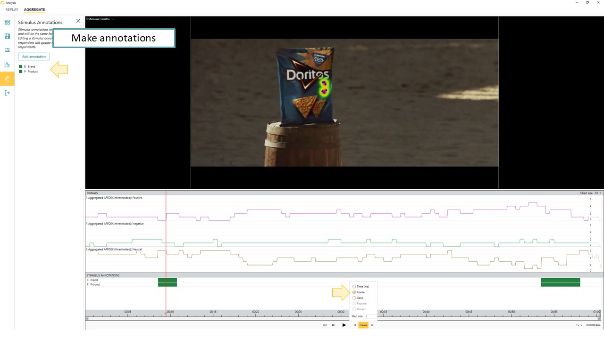
4.3 Heatmaps: how the colors are made, and what they cannot say
Why. A heatmap shows "where respondents looked within the visual stimulus" and allows "qualitative assessments" (Heatmaps). The basic article calls it a data "paint by numbers": each box of a grid receives points from a calculation that "includes the number of participants and how much time is spent per pixel", the box with the most points is dark red, and the scale "can be thought of as quartiles", red for relatively more attention and green for relatively less. Every color is relative to the maximum of its own map.
Two consequences follow. One participant looking for 1 s, two participants looking for 1 s each, or one participant looking for 2 s "could end up generating the same heat map", and so can a study of 10 and one of 5 participants, so a heatmap carries no absolute amount. And two heatmaps cannot be compared by color: an orange Product in Ad_B need not mean less attention than a red Product in Ad_A. Nor does a heatmap show the order of looking, why people looked, whether they liked what they saw, or whether two versions differ. The printed Introduction to Eye Tracking guide calls heatmaps "purely qualitative visualizations" and points to areas of interest "to delve deeper into quantitative aspects" (Project doc 02a).
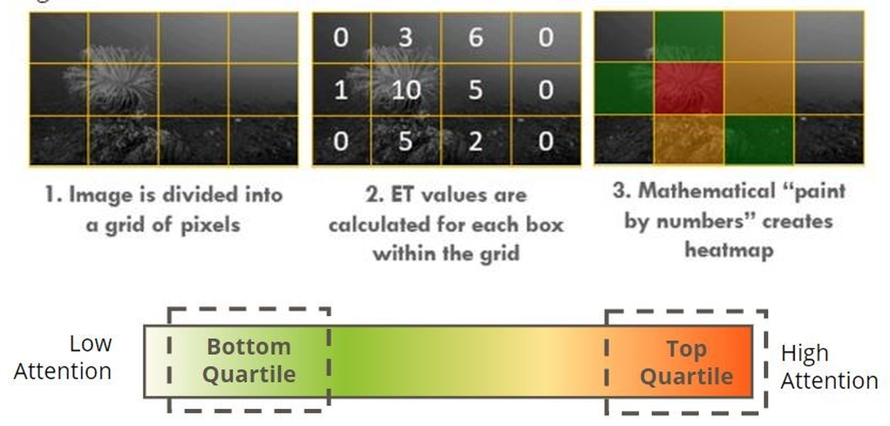
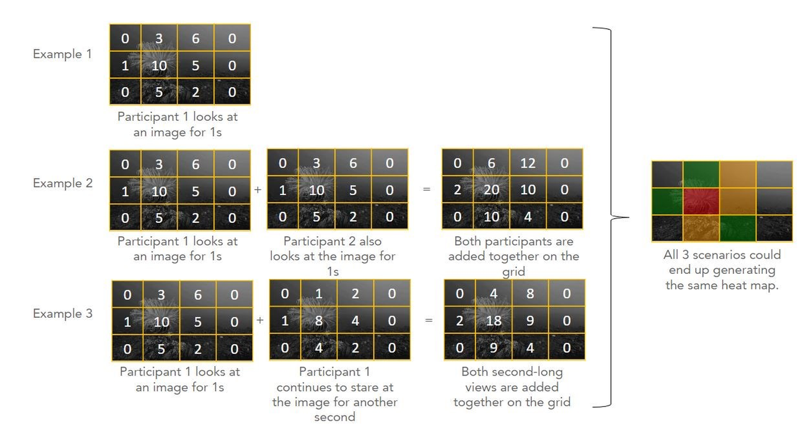
Static and dynamic. A static heatmap sums "all respondents included in the analysis across the entire duration of the stimulus", so both how many looked and how long each looked set its colors. A dynamic heatmap plays like a video, and its color at each moment "is only determined by how many respondents looked at something; not how long the individual respondents looked at it": it shows how consistent the gaze of the group was. Static heatmaps exist only for "images, survey slides, 'gaze-mapped images', or 'image scenes'", which is why the Heatmap button of the toolbar is gray for the video ads and their heatmap is the dynamic one in the Aggregate Replay. Releases 11.0.2 and 11.1.12 let an annotation set the time range of a static heatmap there; whether that works for a video in the lab's 11.1 is an item to verify.
- Open the overlay settings with the settings icon on the left of the Aggregate Replay. The panel is "Visualization" in release 8.1 and "Settings" with "Stimulus overlays" in newer screenshots (Items to verify). You should see "Heatmap: Dynamic | Off", "Gaze history: 0.3 sec", "Gaze width: Large", "Heatmap style: Heatmap | Spotlight", and "Beeswarm: Dynamic | Off".
- Draw the heatmap. Set Heatmap to Dynamic and play the ad. You should see colored spots that move with the ad. Spotlight darkens the frame so that the looked at areas are "lit up"; a beeswarm adds dots "representing all fixations or all respondents".
- Record the settings: Gaze history (the time window shown at each moment), Gaze width, and the analysis check box "Use fixations for heat maps" on the SEGMENTATION SETTINGS page, which appears to switch the map from gaze points to fixations. No manual describes a radius, opacity, or color scale setting (Items to verify). Common mistake. Reading red as "liked": the color is relative attention and nothing more.
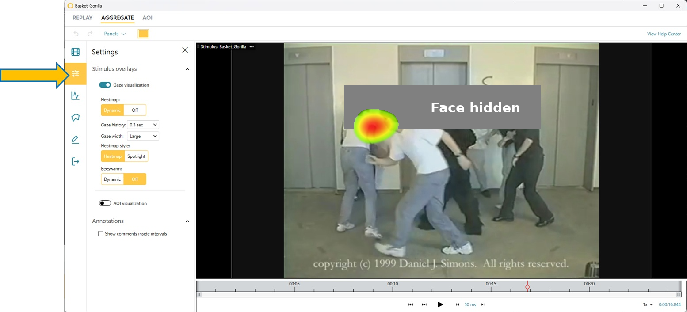
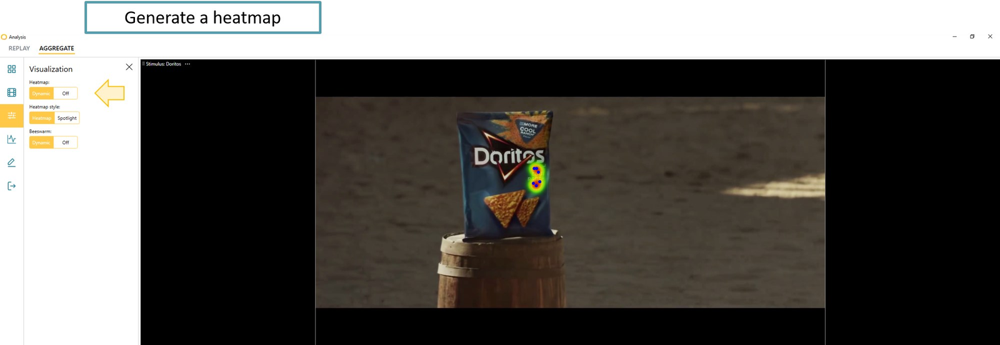
4.4 Exporting a heatmap image or video
Why. A report needs stills or clips. The article's path is "1. Navigate to the Export menu 2. Select Video, Image or Heatmap 3. Click Export", for .png images and .wmv or .mp4 videos; its release 8.1 screenshot shows only Video and Image (Items to verify).
- Set the export. Pause at the frame to show, open Export, and choose Image: "Image size: 1920 x 1080", "Display info bar", and "Show name labels on media"; a newer screenshot adds "Include in image: All visible panels / Stimulus only" and "Show timeline". Choose "Stimulus only" where it exists. You should see a "Preview" of the frame.
- Export, then caption at once (section 5.5 lists what the caption must say). Common mistake. A frame without N: a heatmap of 5 viewers looks as finished as one of 50.
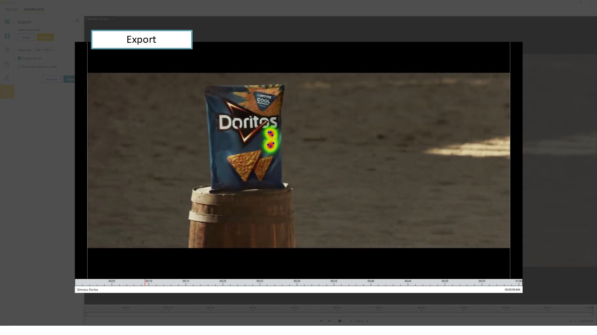
4.5 Scan paths and individual heatmaps
Why. A scan path shows one respondent's gaze in order, "with Fixations (circles) and Saccades (lines)", in "any Respondent Replay Window". A fixation is a pause of the eyes on one spot; a saccade is the jump from one fixation to the next. For individuals, the Heatmaps article says, "scan-paths would often be more informative than heatmaps". In a report a scan path illustrates one person; it is never a finding.
- Open it. Select the study and a respondent, "Click Play button for any stimulus", and open Settings > Stimulus overlays > Gaze visualization. Static overlays all the data, with "Trail color", "Show fixation numbers", and "Indicate fixation duration by" (the text says "by the size of the circles, or by color"; the screenshot offers "Growing", "Color map", and "No indication"). You should see numbered circles joined by lines.
- Dynamic follows the replay with a "Gaze trail length" of "0 - 10 sec."; its "Gaze smoothing filter" "only applies to Scan Path visualization (and does not affect data or results)".
- Export a .png or a video. Common mistake. Exporting with the respondent camera panel open: the frame then shows a face, which never goes into a report.
Individual heatmaps. The Heatmaps article suggests an analysis with one respondent as a workaround; since release 11.1.6, "In the Individual Replay, you can now plot heatmaps per respondent" (where the option sits in 11.1 is an item to verify).
![Two Settings menus of a respondent Replay window for an eye tracking glasses recording, enlarged side by side: the static scan path with Gaze visualization on, Static selected, Trail color, Show fixation numbers, Indicate fixation duration by Growing (selected), Color map green to red, Color map blue to red, or No indication, and Mouse visualization with Left click color and Right click color; and the dynamic scan path with Dynamic selected, Focus color, Trail color, Show fixation numbers, Show fixations in trail checked, Gaze trail length 3.0 sec, Indicate fixation duration by, and Gaze smoothing filter checked](../assets/ws8/figures/replay_scan_path_settings.png)
4.6 The Emotional Heatmap, and why the worked example cannot use it
Why. In the Emotional Heatmap, "The gaze data from the eye tracking Heatmap is filtered with a threshold based on the Facial Expression Metrics that the user has selected": a gaze point stays only while the chosen AFFDEX metric is above the threshold. It requires "Supported stimulus types: Images and Surveys", both eye tracking (desktop or remote) and AFFDEX data, and iMotions 9.3.21 or later. The worked example has both kinds of data, but its ads are videos, so the tool does not apply to it; the steps follow the vendor example, a still image (whether 11.1 still excludes videos is an item to verify).
- Open it. Create an analysis with the image stimuli; "you do not need to add any algorithms under 'Active flows'", although the iMotions Reports article says the Reports button is grayed out when no notebook was ever added (Items to verify). Click Reports and open the "Emotional heatmap" tab. You should see Settings with "Color profile: Original / Grayscale" and "SIGNAL 1" and "SIGNAL 2", each with "Signal", "Color", and "Threshold (0-100)" (Positive and Negative at 50 in the screenshot), and "Export heatmap" (.png). Stimuli can be switched, respondents cannot.
- Read it as co-occurrence. An orange area means that gaze fell there while the face scored Positive above the threshold, not that the element caused the expression. A facial movement is not a reliable readout of a felt emotion (Barrett et al., 2019), and concluding a mental state from a signal is reverse inference (Poldrack, 2006). Common mistake. The "Missing data error" of the figure: "double-check if your study collected both eye tracking data AND AFFDEX data".
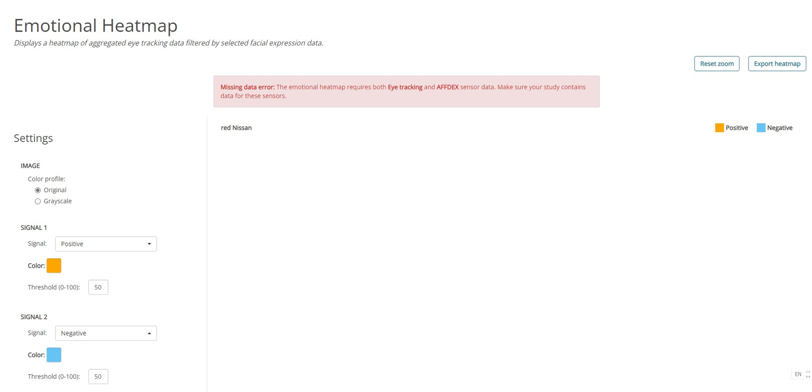
4.7 The AOI metrics panel: from pictures to numbers
Why. "Heatmaps are qualitative; use AOIs for numbers" (Project doc 02a). Measuring attention to the brand, the picture, and the text of an ad separately has a long history in marketing research (Wedel & Pieters, 2000), and the Logo, Product, and Headline AOIs do exactly that. The AOI window offers 48 metrics in five groups (AOI Metrics). Its panel "averages across all respondents for whom the AOI was defined", which suits a client table; tests need the Individual AOI metrics file of Workshop 7 (Export > R PROCESSING > "AOI Metrics Export").
- Open the panel. Click AOIs in the toolbar. You should see "Draw AOI", the "AOI metrics" panel with "AOI duration (ms)", "AOI duration (%)", "Size (cm2)", "Size (%)", and "Respondent base", and the AOI TIMELINE.
- Choose the metrics. In the "AOI Metrics" menu, "Clicking on any AOI metric will toggle whether it is displayed"; hover over a metric and click "?" for its definition. Show Respondent ratio (%), TTFF AOI (ms), and Dwell time (%) from one family. Common mistake. "Dwell time (%)" without saying gaze based or fixation based: both families use the name.
| Metric | Definition (AOI Metrics) | Report it with |
|---|---|---|
| Respondent base | "Number of respondents for whom the AOI was defined" (called Respondent data in the text) | Every average in the table: it is the denominator |
| Respondent ratio (%) | "Percentage of respondents who fixated on the AOI" (fixation based) or "who gazed at the AOI" (gaze based) | The count, such as 12 of 22, not only the percentage |
| TTFF AOI (ms) | "Average time that passed from the AOI's start time until the first fixation was detected on the AOI" | Respondent ratio (%), which says who is in the average |
| TTFF max. (ms) | The same, except that for a respondent who did not fixate, "the parent's presentation duration (as maximally possible time) is used" | A note that non-lookers count as the full duration |
| Dwell time (%) | The average share of the AOI's active time that respondents gazed (or fixated) at it | Gaze based or fixation based, and the dwell threshold of the export (default 100 ms) |
Time to first fixation (TTFF) is where a lone number misleads most. In the worked example 12 of 22 viewers fixated the Logo in each ad, and their first fixation came after 11,849.25 ms on average in Ad_A and 14,922.17 ms in Ad_B (SIMULATED; Table 1 in section 07). The 10 who never fixated it have no time at all, so "about 12 seconds to notice the logo" describes only those who noticed. The article does not say whether TTFF AOI (ms) averages only the lookers, so print it next to Respondent ratio (%); that point, the 11.1 label of Respondent base, and the 11.1 metric list are items to verify.
![AOI window of the vendor stimulus Deconstruction with the tabs REPLAY, AGGREGATE, and AOI: the AOI metrics menu lists Skip count, then Fixation based metrics, among them Respondent count, Respondent ratio (%) with the tooltip Percentage of respondents that fixated on the AOI., Revisit count, Fixation count, TTFF AOI (ms), TTFF parent (ms), TTFF max. (ms), Dwell time (ms), Dwell time (%), and First fixation duration (ms), then Saccade based metrics, with eye icons on the metrics shown; Draw AOI and AOI 1 drawn around a cellist whose face is covered by a gray box labeled Face hidden; the AOI metrics panel with AOI duration (ms) 1626.6, AOI duration (%) 0.3, Size (cm2) NA, Size (%) NA, and Respondent base 2; and the AOI TIMELINE](../assets/ws8/figures/aoi_metrics_menu_and_panel.png)
4.8 The Analysis Dashboard: what is known so far
Both lab license keys include the Analysis Dashboard module (Project doc 00), and the toolbar of the lab computer shows Dashboard between Reports and Export. On October 11, 2026, Dashboard was clicked on the Analysis of the vendor demonstration study DEMO - SonyBravia on the lab computer, as a read only check in which nothing was run or saved. That analysis had no results of the kind the Dashboard needs, so a window titled Generate Dashboard Data opened (figure below): "The dashboard is driven by the multi-modal R export results, which are currently not available for this analysis." It asks whether to run the report now, with the buttons Cancel, No, and Yes, and adds that "You can also open the dashboard without results and browse to any folder containing saved multi-modal export files." Choosing No opened a separate window titled Data Visualizations, empty until data are loaded, with four icons down its left edge and a Show help link (second figure below). So the Dashboard appears to draw on the same single multimodal export that section 5.4 teaches: run that export first, or answer Yes and let the Dashboard run the report, and the charts come from those results.
![iMotions analysis view on the lab computer with a commercial frame in the stimulus area, the analysis toolbar (Replay, Aggregate, AOIs, Gaze Map, Heatmap and Survey gray, Signal Processing, Reports, Dashboard, Export) at the bottom, and the dialog Generate Dashboard Data in front: The dashboard is driven by the multi-modal R export results, which are currently not available for this analysis. Would you like to run the report now? You can also open the dashboard without results and browse to any folder containing saved multi-modal export files. More information is available on the iMotions help center. Buttons Cancel, No, and Yes](../assets/ws8/figures/live/live_dashboard_generate_dialog.png)
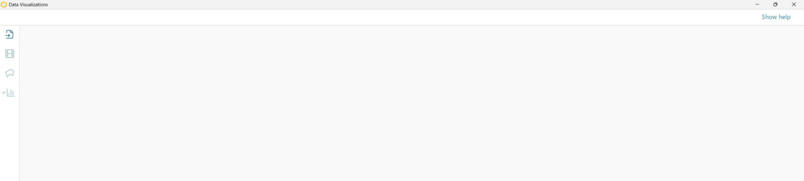
The release notes add hints (Project doc 10): release 11.0.2 lets you "include Voice Analysis Metrics in the dashboard's Circumplex" and fixed a problem with AOIs on "stimuli whose names contained only digits", and 11.0.4 fixed "barplots in the dashboard" for numeric stimulus names. So the Dashboard appears to draw bar plots per stimulus, to offer a circumplex view (section 07), and to use AOI data, and stimuli should be named with letters, such as Ad_A. The help center article "Data Visualization Dashboard" has not been downloaded. What the Dashboard shows once its data are loaded (its views and metrics, whether it shows N, error bars, or segments, its export, and whether its numbers match the R exports) was not checked, because the check did not run the report; it stays on the Items to verify list (section 11). Until then, treat a Dashboard chart like a heatmap: for seeing, not for testing.
iMotions, "iMotions 11 - New Features" (YouTube), an overview of Lab 11 that includes the data visualization dashboard.
Help center articles for this section: Analysis Overview, Replay and Analysis Windows, Aggregate Replay, Heatmaps, Basic Heatmap Explanation and Generation, Scan Paths and Individual Heatmaps, Emotional Heatmap, AOI Metrics, Areas of Interest (AOIs), Data Visualization Dashboard (not yet read for this workshop), and the iMotions 11 release notes. Manual PDFs on this site: Analysis Overview, Replay and Analysis Windows, Aggregate Replay, Heatmaps, Basic Heatmap Explanation and Generation, Scan Paths, Emotional Heatmap, and AOI Metrics (PDF).
Notebooks, reports, and summaries
Between a raw signal and a number in a table sit the R notebooks, analysis scripts in R that run inside iMotions. Workshop 7 used the notebooks that write one row per respondent and interval. This section covers four other products: a group average over time (Raw Data Aggregation), a signal cut into equal slices (Epoching), the record of what each notebook did (iMotions Reports), and one file with several modalities (the single multimodal export). It ends with what a figure exported from iMotions must carry.
Every notebook is added as an Active flow on the SIGNAL PROCESSING page of an analysis: "+" next to "Active flows", the sensor under "Devices", the notebook under "Algorithm", a unique "Flow name", the "Parameters:", "Next", the stimuli, and "Add" (Analysis Overview). Order matters (Project doc 02b): individual flows first (FEA thresholding; GSR Signal Quality, then GSR Peak Detection), aggregation flows after them, annotations before export (an annotation added later needs a right-click on the analysis and "Recalculate"), then Reports, then the exports.
5.1 Raw Data Aggregation: the average signal of the group
Why. The Raw Data Aggregation notebook "aggregates the raw signal data by stimulus across respondents": "Within each signal channel, the mean signal across all respondents of the specified stimulus are calculated and stored." It supports all stimulus types and sensors (iMotions 8.1 and later) and "will not be executed if there is only one respondent or no respondents available for aggregation". The result is a curve to look at, not a file to test: the article describes no export of it, and the mean carries no spread.
- Add the flow. Choose the respondents on the segmentation pages, then on SIGNAL PROCESSING click "+" next to "Active flows" and pick the sensor and the notebook. The screenshot shows "Raw Data Aggregation" as the algorithm and the flow name, with the note "Aggregation of all raw data signals by stimulus"; whether 11.1 offers it under that name for the Shimmer3 and AFFDEX is an item to verify.
- Process and open. Select the stimuli, click "Add", and let the flows process (the screenshot also shows "Process Algorithms" at the top right). Then click Aggregate and "Edit Result". You should see a "Falloff" group and an "Aggregated Raw Data" group in the Signals menu.
- Read the falloff first. "The Falloff curve shows how many respondents are available for aggregation over time." Common mistake. Trusting the end of a long stimulus: where the falloff curve drops, fewer people stand behind the mean, and one person can move it.
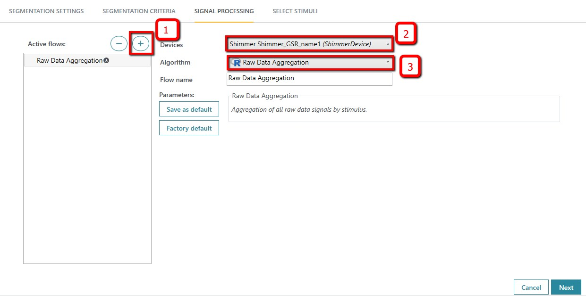
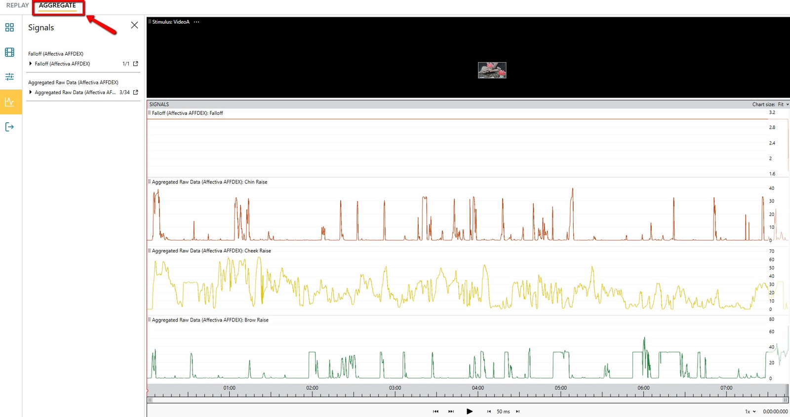
5.2 Epoching: cutting a signal into equal slices
Why. Epoching prepares "the GSR, ECG, EMG time series data for further statistical methods (e. g. analysis of variance) through a process of dimensionality reduction (downsampling)", and the result is "better for visualizations in publications" (R Notebook Epoching). An epoch is one slice of equal length, such as 1 s, for which the notebook summarizes one respondent's signal, so a 30 s ad becomes about 30 rows per respondent instead of thousands of samples. "GSR Epoching Pre-processing" cleans the signal as an Active flow, and "Epoch Export" cuts and exports it, for "Shimmer, Biopac, Empatica E4 (EDA/GSR)" in iMotions 9.3.12 and later. The worked example tested GSR Peaks Per Minute per ad and has no epochs; a moment to moment curve for each participant is what epoching would add.
- Pre-process. Add an Active flow with the Shimmer and "GSR Epoching Pre-processing". The screenshot's parameters are "Lowpass filter cutoff frequency [Hz]" 5, "Gap interpolation length threshold [ms]" 4000, "Shimmer GSR channel for applying epoching" "GSR Conductance CAL", "Apply a moving median filter" unticked, and "Moving median filter length [ms]" 500. The low-pass filter is a "low-pass Butterworth filter" applied "to remove powerline noise"; shorter gaps are "linearly interpolated" and longer gaps split the signal. Record every value for the methods section.
- Export the epochs. Click Export, open "R PROCESSING", and switch on "Epoch Export". Choose the signal, the "Method for epoching" ("Fixed duration" or "Fixed number of epochs"), and "Time epoch length [ms], for Method: Fixed duration" (1000) or "Time epoch number, for Method: Fixed number of epochs" (10), then click "Export individual files". You should see one file in which "Each row of the exported file represents information of one epoch for each (respondent, stimulus, sensor) pair".
- Choose the method on purpose. "An epoch size of 1 second is the default value since it seems to be the most popular choice"; a fixed number of epochs gives stimuli of different length the same count (10 s and 15 s stimuli with 10 epochs give epochs of 1000 and 1500 ms). Common mistake. Trusting the last epoch: with Fixed duration it "ends ... where the fixed duration ends, not where the actual signal ends. This can result in low Quality."
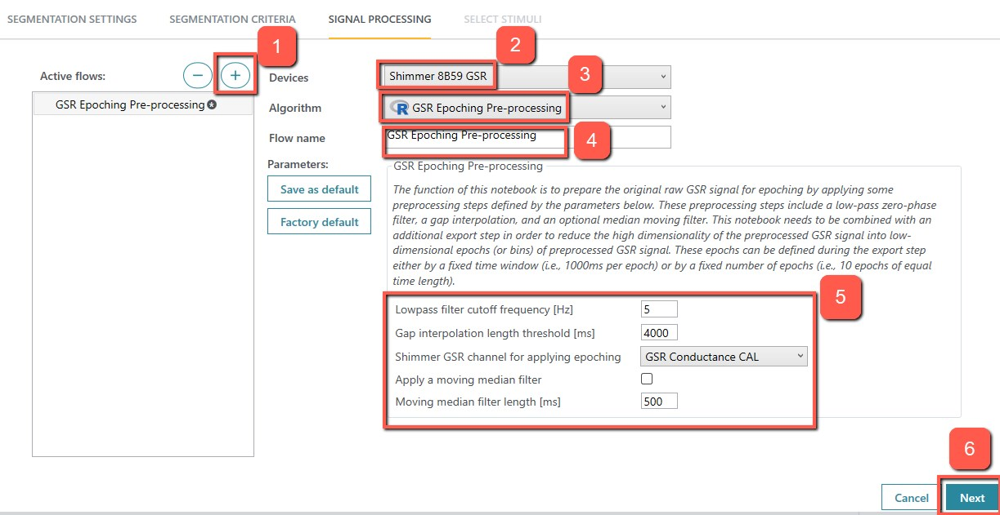
![Analysis Export view on R PROCESSING with Individual metrics exports selected and the button Export individual files: under Epoching, Epoch Export is switched on, with the SETTINGS Please select on which signal to perform epoching (GSR pre-processed signal, ECG Heart Rate signal, and EMG smoothed signal checked), Method for epoching Fixed duration (selected) or Fixed number of epochs, Time epoch length [ms], for Method: Fixed duration 1000, and Time epoch number, for Method: Fixed number of epochs 10, with a description of the notebook](../assets/ws8/figures/notebook_epoching_export_settings.png)
The file, and where the article disagrees with itself. The text lists the columns "Study Name", "Respondent Name", "Gender", "Age", "Group", "Type", "Label", "Parent Stimulus", "Epoch", "Epoch Start (ms)", "Epoch End (ms)", "Epoch Duration (ms)", "Mean", "Median", "Max", "Min", "Std", and "Quality" (the "Percentage of presented data across each specified epoch"). The example file of an older "binning" version puts the study name and the binning settings in lines above the table and adds "RMSSD" and "SignalName" columns. The epoch boundaries disagree too: one example lists "[1001 ms; 2000 ms)" as the second epoch, another "[1000 ms; 2000 ms)". So read the file by column name, never by position, and check the boundaries in your own export (Items to verify).
![Epoch export file GSR Binning.txt in a spreadsheet with red numbered boxes: header lines (1) with Study Name, Analysis Name gsr_binning, Binning Method Fixed duration, Bin Parameter 1000ms, and a Quality note; respondent columns (2) Respondent Name, Gender, Age, and Group; event columns (3) Type, Label, and Parent Stimulus; epoch columns (4) Epoch, Epoch Start (ms), Epoch End (ms), Epoch Duration (ms), Mean, Median, Max, Min, Std, RMSSD, and Quality; and the signal name column (5) reading Preprocessed GSR; rows 7 to 43 hold epochs 1 to 37 of 1000 ms for one respondent, each with Quality 100](../assets/ws8/figures/notebook_epoching_output_file.png)
5.3 iMotions Reports: the record of the method
Why. "From iMotions version 9.1.1 and beyond you can access detailed HTML reports generated by the r-notebooks you have added to your signal processing workflow directly in the software", with "open-source information about the algorithms that were applied to the data" (iMotions Reports). The Methods section of each report states the parameters of that run, which makes iMotions Reports the place to copy notebook parameters from and the record to archive with the data. Reporting standards ask authors to describe measurement and data processing in enough detail for a reader to evaluate and repeat them (Appelbaum et al., 2018).
- Open Reports. Select the analysis and click Reports in the toolbar. You should see the window "Report Tools", tab REPORTS, with the list "Reports" on the left (one entry per notebook, such as "GSR Peak Detection") and "Open in browser" at the top right.
- Pick the respondent and the stimulus with their icons, then read: "You can expand the code areas to get details about each computational step that the notebook ran." You should see the study, stimulus, respondent, and sensor, then "Methods". Look for quality warnings, and for EEG the percentage of data removed (Project doc 02b), before you export.
- Copy the parameters of your own run. The vendor example lists a median filter window of "8000 ms", a Butterworth "cutoff frequency: 5 Hz", and onset, offset, amplitude, and duration thresholds of 0.01 µS, 0 µS, 0.005 µS, and 500 ms; the manual does not state the defaults, so take the values from the lab's own report. Common mistake. Writing "default settings" instead of the values. The simulated study assumed an AFFDEX threshold of 50 and the default GSR peak detection parameters; a real study reports what its own report shows (Items to verify).
![Above, the analysis toolbar Replay, Aggregate, AOIs, Gaze Map, Heatmap (gray), Survey (gray), Signal Processing, Reports boxed in red, and Export; below, the Report Tools window with the tab REPORTS and Open in browser, the Reports list boxed and numbered 1 (AFFDEX thresholding, AFFDEX thresholding Aggregation, EEG Frontal Asymmetry, EEG Frontal Asymmetry Aggregation, EEG Power Spectral Density, GSR Peak Binned Aggregation, and GSR Peak Detection, selected), and the HTML report boxed and numbered 2: GSR Peak Detection for a vendor study, respondent R1, sensor Biopac Mp150 EDA100C, a Methods section that lists the median filter window, the low-pass filter, and the detection thresholds, and Code buttons, marked by a red arrow, that expand the R code of each step](../assets/ws8/figures/report_reports_button_and_gsr_report.png)
When the button is gray. The article lists four situations. "If no notebook was ever added", the Reports button is grayed out. "If notebooks were added, but none was executed, the UI prompts you to execute the notebooks first." If processing was canceled, reports appear for the respondents processed fully and errors for the rest. And "if notebooks were added and run, but no data could be generated you will get an error message." The 11.1 report names, and whether "Open in browser" saves a file that can be archived, are items to verify.
iMotions, "iMotions 8.1 - Data Reports from R Notebooks" (YouTube), the release video that introduced the reports.
5.4 One file for several modalities: the single multimodal export
Why. For a quick chart that sets two modalities against each other, the article How to Make Your Own Visualizations uses "a single multimodal export of the modalities you are interested in visualizing" and "the example of an emotional circumplex" (section 07 reads one critically); "The steps can be completed in Excel or Google sheets." Workshop 7 used the individual metrics files instead, because the columns of the single multimodal export are not documented.
- Export. Click Export, open "R PROCESSING", choose "Single multi-modal export", switch on the exports you need, and click "Export single file". You should see one file. On the lab computer (October 12, 2026) the two choices read Individual metrics exports, with the button Export individual files, and Single multi-modal export, with the button Export single file; for the demonstration study the multi-modal list held the eye tracking and facial expression exports, while the AOI Metrics Export appeared only under Individual metrics exports.
- Find the table. In the vendor example, rows 1 to 4 hold "#METADATA", "#Device", "#AlgorithmType", and "#DATA", the column names are in row 5, and each row is one respondent and one stimulus or annotation ("Type" and "Label"); check both in 11.1 (Items to verify). Common mistake. Averaging over every row: stimulus and annotation rows share the table, so filter "Type" first, as the article advises.
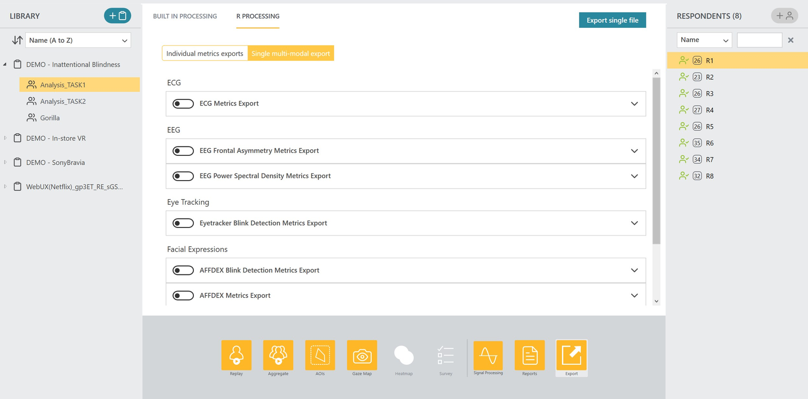
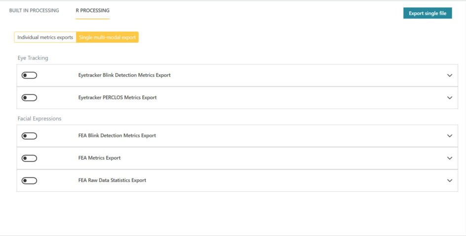
5.5 What a figure exported from iMotions must carry
A heatmap, a replay still, or a group curve becomes evidence only with its context. Export it as in section 4.4 and caption it with the stimulus and the moment or time window; the analysis and N (the respondents behind the picture, not the number recruited); for a heatmap, dynamic or static, gaze points or fixations, Gaze history, and Gaze width; for a curve, the notebook, its bin settings, and whether the y axis counts respondents or gives percentages; and the iMotions version. A comparison of two segments needs two exports made with the same settings, shown with the warning that heatmap colors do not share a scale. Faces never appear: export the stimulus, not the respondent camera, and hide any face in a vendor screenshot (lab rule). Section 09 shows how a report page can also carry N and uncertainty.
Help center articles for this section: R Notebook: Raw Data Aggregation, R Notebook Epoching, iMotions Reports, Analysis Overview, and Replay and Analysis Windows; How to Make Your Own Visualizations has no online article in the lab's index (local PDF only). Manual PDFs on this site: R Notebook: Raw Data Aggregation, R Notebook Epoching, iMotions Reports, and How to Make Your Own Visualizations (PDF).
Effect sizes, intervals, and power: how big, how sure, and what 22 people could detect
The client asked one question: which ad should we run? A p value cannot answer it alone. It says how surprising a difference would be if the ads did not differ, not how large the difference is, how precisely it was measured, or whether 22 people could have revealed it. Three tools answer those questions: the effect size (how big), the confidence interval (how sure), and the power analysis (what the study could have found). Section 08 computes them for every question, and section 09 reports them. Every number here is SIMULATED, from analysis_output.txt and SIMULATED_power.csv.
Effect sizes: how big is the difference?
An effect size states a result on a scale that does not depend on how many people took part. A p value shrinks as the sample grows even when the difference stays the same; an effect size does not, so effect sizes can be compared across studies and pooled (Lakens, 2013), and the APA task force on statistical inference asked for one beside every p value (Wilkinson & Task Force on Statistical Inference, 1999). Give the raw difference too: 0.55 scale points of liking means more to a client than any standardized number.
Spearman's ρ is the ordinary correlation computed on the ranks of the values.
| Effect size | What it describes | Used for | Example (SIMULATED) |
|---|---|---|---|
| dz | The mean of each person's difference divided by the SD of those differences | Paired comparisons: H3, Q4a, Q4b, Q5, Q6 | H3, Ad_A against Baseline: dz = 0.83, 95% CI [0.33, 1.30] |
| Odds ratio (OR) | The odds of an outcome in one group divided by the odds in another; 1 means no association | Two yes or no variables: H1 | OR = 4.34, 95% CI [1.08, 19.55] |
| Partial η² | The share of the variance an effect accounts for, out of that effect plus its error | F tests: Q4 | AOI: .89; ad by AOI: .02 (both computed from F, an approximation in a mixed model) |
| Spearman ρ | The correlation of the ranks, from -1 to 1 | Exploratory correlations: E1 | Purchase intention and attitude: ρ = .57, 95% CI [.16, .81] |
Cohen proposed 0.2, 0.5, and 0.8 as small, medium, and large values of d (Cohen, 1992), for differences between two groups. A dz also depends on how strongly a person's two measurements are correlated, so it is not directly comparable with a d between groups (Lakens, 2013). Use the labels as a rough guide, and judge the size in the units that matter to the decision.
Confidence intervals: how sure?
A 95 percent confidence interval is the range of values that the data are reasonably compatible with; its width shows how precisely the study measured the effect (Cumming, 2014). Read it in four steps (SIMULATED values):
- Width. During Ad_A, GSR peaks rose by 5.21 per minute over Baseline, 95% CI [2.41, 8.01]: the true increase could be as small as about 2.4 or as large as about 8.0. A wide interval means an imprecise estimate, whatever the p value.
- Zero. For a paired t test, a 95 percent interval of the mean difference that excludes 0 goes with p below .05, and one that includes 0 with p of .05 or more. For an odds ratio, no effect is 1, not 0.
- Both ends. Liking was higher for Ad_A by 0.55 scale points, 95% CI [-0.13, 1.23]. The interval includes no difference and also an advantage of more than one full point; the data cannot tell these apart, which is not the same message as "the ads are liked equally."
- What the 95 belongs to. Over many repetitions, about 95 of 100 intervals made this way would contain the true value. The 95 percent describes the method, not the probability that this one interval contains the truth (Greenland et al., 2016).
An effect size has an interval too: the script computes the interval of dz exactly from the noncentral t distribution (Cumming & Finch, 2001); Excel's approximation can differ in the second decimal.
Client reports often give a number without its base or its interval. The In-Store Shopper sample report gives each element of a display a time to first notice and "% to Notice: 100%," but the page shows neither the number of shoppers (N=15 in its study details) nor an interval. A percentage of 15 people is far less precise than the same percentage of 1,500, and only an interval shows how much less.
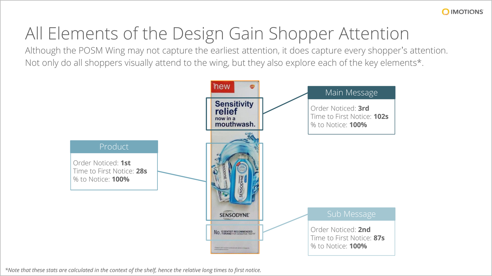
What a p value is, and what it is not
A p value starts from a model in which the effect is zero, the null hypothesis, plus every assumption of the test. It is the probability, under that model, of a result at least as far from zero as the one observed (Greenland et al., 2016). A small p says that the data fit the model poorly, not which part of the model is wrong. The General Data Analysis and Interpretation article calls it "the probability of observing the given results if the difference was due to chance only," a common shortcut: because p is computed by assuming that chance alone is at work, it cannot also be the probability that chance alone produced the result. Four of the six principles in the American Statistical Association's statement on p values matter most for an ad test (Wasserstein & Lazar, 2016):
- A p value does not measure the probability that a hypothesis is true, or that the data arose by chance alone.
- Scientific conclusions and business decisions should not rest only on whether a p value passes a threshold such as .05.
- A p value does not measure the size or the importance of an effect.
- Proper inference requires full reporting and transparency: every analysis run and every p value computed, not only the significant ones.
The most common misreading in client work turns "not significant" into "no difference." For Joy (Q5), dz = 0.31, 95% CI [-0.12, 0.74], Holm p = .331 (SIMULATED): the interval includes no difference and also a moderate advantage for Ad_A. A nonsignificant result says that the data are compatible with no effect, not that the effect is absent (Greenland et al., 2016).
A small p on a small effect: the Soft Drink sample report
The Soft Drink sample report titles a page "Emotional valence is a great predictor of liking" above a regression with Significance F 0.000094. Try it: divide the regression sum of squares by the total, 40.98706 / 632.2609. The result, R² = 0.065, means that valence accounts for about 6.5 percent of the variance in liking, a correlation of about .25: a tiny p on a small effect. The Total df of 229 adds a second problem. The 230 tastings came from about 40 people (the report gives both 42 respondents and N=40) and are treated as independent observations, which overstates the precision and shrinks the p value. A mixed model with a random intercept for each taster, as in H2, is the remedy.
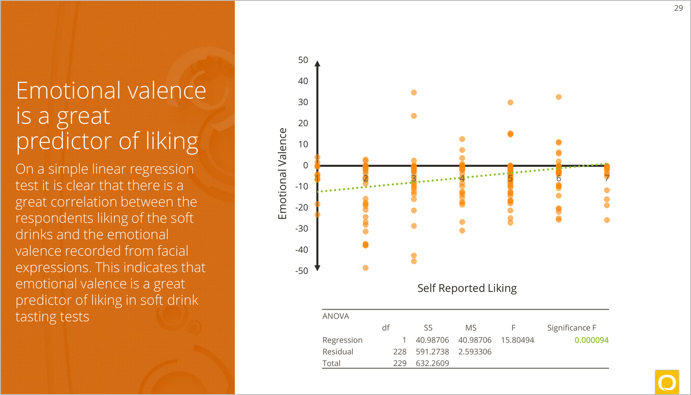
Many tests: families, Holm, and the false discovery rate
Each test at alpha = .05 accepts a 5 percent chance of a false positive when no difference exists, and the chances add up; in the words of the General Data Analysis and Interpretation article, "The more tests we conduct, the higher the chance of observing a false-positive result." This analysis computes 38 tests with a p value, so the plan groups them into families, sets of tests that answer one question, and corrects within each. The familywise error rate is the chance of at least one false positive in a family.
The Bonferroni correction multiplies every p by the number of tests, m. Holm's correction sorts the p values, multiplies the smallest by m, the next by m - 1, and so on, and never lets an adjusted p fall below the one before it (Holm, 1979). Both keep the familywise error rate at .05; Holm is never less powerful.
Joy's product is raised to the adjusted value before it, the running maximum.
A correction changes conclusions: the Headline order effect had p = .020 alone and Holm p = .159 among the eight order checks. A screen of dozens of measures would instead control the false discovery rate, the expected share of false positives among the results called significant, which keeps more power (Benjamini & Hochberg, 1995). This plan's families are small and each result feeds a decision, so it uses Holm; the omnibus F tests of Q4 are not adjusted.
Power: what could 22 participants have found?
Power is the probability that a study finds a significant result when a true effect of a given size exists; .80 is the usual target (Cohen, 1992). Low power does double damage: true effects are missed, and the significant results that do appear tend to overstate the effect (Button et al., 2013). A sensitivity power analysis takes the sample actually tested and asks which effect it could have detected (Lakens, 2022). G*Power does this through menus (Faul et al., 2007); STEP 9 of the script uses R's power.t.test().
| Question (alpha = .05, two tailed, power .80) | Answer (SIMULATED_power.csv) |
|---|---|
| Smallest dz that n = 22 detects, paired | 0.63 |
| Power of n = 22 for dz = 0.30 and for dz = 0.50 | .27 and .61 |
| Participants for dz = 0.50: one test; strictest step of a Holm family of three (alpha = .05 / 3) | 34; 45 |
| Participants for dz = 0.30: one test; strictest Holm step of three | 90; 120 |
| H1, two proportion formula (recall .35 without a Logo fixation, .70 with one) | 31 per group, 62 in total |
| H1, simulation of Fisher's exact test (4,000 studies per N) | Power .57 at N = 44; .81 at N = 72 independent observations |
| H2, a correlation of .24 | About 131 participants |
Joy (dz = 0.31), Engagement (0.36), and liking (0.36) fall well below 0.63, and for dz = 0.30 the power was .27: about three studies in four of this size would miss a true difference that large, so "not significant" was the expected outcome. The "N = 30 per cell" of the iMotions TV and Digital Ad Testing template is a vendor convention, not a power calculation.
Why observed power is not used. Some programs report observed power, the power computed for the effect the study happened to find. It is a direct translation of the p value: a nonsignificant result always has low observed power, so it adds nothing and cannot show that a study was too small or that an effect is absent (Hoenig & Heisey, 2001). Plan power before a study, and report a sensitivity analysis after it.
Claiming "no meaningful difference": the equivalence test
A client who hears "we cannot tell" often asks whether the ads are then the same. Only an equivalence test can say so (Lakens et al., 2018). It starts from the smallest effect size of interest, for example half a point of liking, agreed before the data exist, and runs two one sided tests, that the difference is above minus half a point and below plus half a point; if both are significant, the ads are equal for practical purposes. This workshop names the test without computing it: no bound was set in advance, and the liking interval, reaching 1.23 points, is far too wide to succeed at half a point.
Writing "the ads performed equally (p = .331)," or citing the observed power of the test as proof that the study was too small. Write the difference, its interval, and the smallest effect the design could detect.
Help center articles for this section: General Data Analysis and Interpretation and Standard Methodologies: TV and Digital Ad Testing. Manual PDFs on this site: General Data Analysis and Interpretation and Standard Methodologies: TV and Digital Ad Testing (PDF). Apart from the In-Store Shopper report that Workshop 1 uses, the vendor sample reports are not posted on this site; they are in the lab folder (ask the instructor).
Descriptives and figures
Before any test, describe every measure; the iMotions article General Data Analysis and Interpretation agrees: "We recommend that you calculate your descriptive statistics first." Descriptive statistics say how many observations there are, where they center, and how far they spread; without them a reader cannot judge whether a mean describes anyone. This section builds the descriptive table of the worked example, shows why zeros matter, sets the rules for figures that show the data, does the same work in Excel, and reads a vendor chart critically. Every number here is SIMULATED (SIMULATED_descriptives.csv, from STEP 3 of analysis_full.R).
7.1 The numbers that describe a measure
The mean is the average. The median is the middle value when the values are sorted. The standard deviation (SD) is the typical distance of a value from the mean. The quartiles Q1 and Q3 cut off the lowest and the highest quarter, and the interquartile range (IQR) holds the middle half. The percent at zero is the share of participants whose value is exactly 0.
R: mean, sd, median, quantile(x, 0.25, type = 7). Excel: AVERAGE, STDEV.S, MEDIAN, QUARTILE.INC. R's quantile type 7 equals Excel's QUARTILE.INC.
The manual adds two cautions. The mean "might be biased by the outliers" (one respondent at 5 GSR peaks per minute among others at 2 to 3 "will significantly bias the mean"), which the median avoids. And its variance, "the average of these differences" squared, is the population formula; R's sd and Excel's STDEV.S divide by n - 1. Report n in every row, because n changes: 21 for GSR in Ad_B (P05's signal failed rule R3) and 12 for the Logo's time to first fixation, which exists only for those who fixated it.
7.2 Table 1: every modality by stimulus
Why. One table that a reader can check against the data comes before any test. In APA style a table has its number in bold, its title in italics below it, column headings with units, horizontal lines only, consistent decimals within a column, and a note that explains abbreviations and the sample (American Psychological Association, 2020). The excerpt below follows that layout; the full table, with the data quality rows, is SIMULATED_descriptives.csv.
Table 1
Descriptive Statistics by Stimulus, Analysis Sample (SIMULATED)
| Measure (units) | Stimulus | n | M | SD | Mdn | IQR | % at 0 |
|---|---|---|---|---|---|---|---|
| Gaze dwell, Logo (% of ad) | Ad_A | 22 | 1.78 | 2.82 | 0.52 | 2.10 | 45.45 |
| Ad_B | 22 | 1.40 | 1.89 | 0.75 | 2.04 | 45.45 | |
| Gaze dwell, Product (% of ad) | Ad_A | 22 | 42.58 | 8.42 | 43.88 | 9.76 | 0.00 |
| Ad_B | 22 | 41.34 | 6.17 | 41.53 | 7.09 | 0.00 | |
| Gaze dwell, Headline (% of ad) | Ad_A | 22 | 17.84 | 7.12 | 19.20 | 9.54 | 0.00 |
| Ad_B | 22 | 20.27 | 6.44 | 21.75 | 7.86 | 0.00 | |
| Logo TTFF, fixated only (ms) | Ad_A | 12 | 11,849.25 | 9,361.01 | 8,802.00 | 13,024.25 | |
| Ad_B | 12 | 14,922.17 | 8,569.90 | 17,296.50 | 11,133.75 | ||
| Joy (% of time) | Baseline | 22 | 0.38 | 1.42 | 0.00 | 0.00 | 90.91 |
| Ad_A | 22 | 12.13 | 10.81 | 9.66 | 15.78 | 13.64 | |
| Ad_B | 22 | 8.33 | 9.46 | 3.78 | 16.47 | 36.36 | |
| Engagement (% of time) | Baseline | 22 | 2.33 | 2.36 | 1.39 | 3.98 | 27.27 |
| Ad_A | 22 | 14.52 | 11.72 | 11.45 | 15.78 | 4.55 | |
| Ad_B | 22 | 9.95 | 10.01 | 6.11 | 18.78 | 27.27 | |
| Brow Furrow (% of time) | Baseline | 22 | 0.44 | 1.18 | 0.00 | 0.00 | 81.82 |
| Ad_A | 22 | 0.65 | 1.52 | 0.00 | 0.00 | 81.82 | |
| Ad_B | 22 | 0.38 | 1.31 | 0.00 | 0.00 | 90.91 | |
| GSR peaks per minute | Baseline | 22 | 2.06 | 1.86 | 2.00 | 2.75 | 27.27 |
| Ad_A | 22 | 7.27 | 6.80 | 6.00 | 6.00 | 4.55 | |
| Ad_B | 21 | 6.00 | 4.94 | 6.00 | 6.00 | 14.29 | |
| Liking (1 to 7) | Ad_A | 22 | 4.59 | 1.40 | 5.00 | 1.00 | |
| Ad_B | 22 | 4.05 | 1.29 | 4.00 | 2.00 | ||
| Attitude toward reusable water bottles (1 to 7) | Once, after both ads | 22 | 4.56 | 1.00 | 4.50 | 1.17 | |
| Purchase intention, any reusable bottle (1 to 7) | Once, after both ads | 22 | 3.68 | 1.39 | 4.00 | 2.00 |
Note. SIMULATED data. n = participants of the analysis sample (rule R2) with a valid value; M = mean; Mdn = median; IQR = interquartile range; % at 0 = percentage of participants with a value of exactly 0, given for measures that pile up at zero. Gaze dwell is the percentage of the 30 s ad; Joy, Engagement, and Brow Furrow are the percentage of time at or above the AFFDEX threshold of 50. TTFF = time to first fixation, computed only for the 12 participants who fixated the Logo. GSR for Ad_B excludes P05 (rule R3).
Reading the table. Gaze concentrated on the Product (about 42 percent of each ad) and the Headline (18 and 20 percent); the Logo held under 2 percent, and 10 of 22 participants never had their gaze on it in each ad, so its median (0.52 in Ad_A) sits far below its mean (1.78). Brow Furrow was zero for most participants (median and IQR 0 in every row): a mean of 0.65 percent describes almost nobody. Proportions read best as counts: 12 of 22 viewers fixated the Logo in each ad, and 12 of 22 recalled the brand after each ad. Purchase intention was asked once, about any reusable bottle, not per ad. Client tables often add the top 2 box, the share who chose 6 or 7: 5 of 22 (22.7%) for liking of Ad_A, 3 of 22 (13.6%) for Ad_B, and 1 of 22 (4.5%) for purchase intention.
STEP 3 computes every column with one function, dstat() (the full script is in the cards of section 08 and in analysis_full.R). It drops missing values first, so n counts only valid values, groups by stimulus, and computes the percent at zero only when zero = TRUE, as in the call for Joy, dstat(ana, "joy_pct", "Facial expression", "Joy", "percent of time", TRUE):
dstat <- function(d, var, modality, measure, units, zero = FALSE) {
d %>% filter(!is.na(.data[[var]])) %>% group_by(stimulus) %>%
summarize(modality = modality, measure = measure, variable = var, units = units, n = n(), mean = mean(.data[[var]]), sd = sd(.data[[var]]),
median = median(.data[[var]]), q1 = unname(quantile(.data[[var]], 0.25, type = 7)), q3 = unname(quantile(.data[[var]], 0.75, type = 7)),
min = min(.data[[var]]), max = max(.data[[var]]), pct_zero = if (zero) 100 * mean(.data[[var]] == 0) else NA_real_, .groups = "drop") %>%
mutate(iqr = q3 - q1, stimulus = as.character(stimulus))
}7.3 Why zeros matter for percent of time
In Table 1, find the two facial expressions whose median during Ad_B lies far below the mean. What share of participants sits at zero for each?
Percent of time is the share of an ad during which an AFFDEX score was at or above 50. A participant whose face never crosses the threshold scores exactly 0, so these measures pile up at zero and trail off to the right: Joy during Ad_B was 0 for 8 of 22 participants (36.36 percent), with a median of 3.78 and a mean of 8.33. Three things follow. The mean is pulled toward the few high values and no longer describes a typical viewer. The SD can approach or exceed the mean (Brow Furrow, Ad_B: M = 0.38, SD = 1.31), which describes the shape, not an error. And the 95% interval of the mean can reach below zero, a value the measure cannot take (the Brow Furrow panel of Figure 2). So report the median, the IQR, and the percent at zero beside the mean, and check every paired t test on such a measure with a Wilcoxon signed rank test, as section 08 does. Gaze dwell on a small AOI such as the Logo behaves the same way.
7.4 Figures that show the data
Why. A bar graph of means hides the data: very different sets of values, with or without outliers or a pile at zero, can produce the same bars, and for paired data a bar cannot show that the same person was measured twice (Weissgerber et al., 2015). Groups compared by their means alone can differ in ways the means do not show (Rousselet et al., 2017). The figures of this workshop follow six rules.
- Show the raw data: one point per participant, with the mean and its 95% confidence interval beside the points. With many participants, a raincloud plot combines the raw points, a box plot, and the shape of the distribution (Allen et al., 2021).
- Paired data, paired lines. A gray line joins each participant's two values, so the reader sees the within person differences that the paired tests use and how many lines go up or down.
- No dynamite plots. A dynamite plot, a bar of the mean topped by an error whisker, shows two numbers and suggests values from zero up to the mean that may not exist. Whatever whiskers you draw, say in the caption whether they are an SD, a standard error, or a confidence interval.
- Compare along a common scale. Readers judge position along a shared axis more accurately than length, angle, area, or color (Cleveland & McGill, 1984), so values to compare sit next to each other on one axis (Franconeri et al., 2021). Measures with very different ranges get their own panels, and the caption says so.
- Color that everyone can read, used the same way everywhere. The Okabe and Ito palette stays distinguishable for the common forms of color vision deficiency (Wilke, 2019); Ad_A is always blue and Ad_B always vermilion.
- Label everything: a title (here with SIMULATED), axis titles with units, N, what the points, lines, and whiskers are, and the test that belongs to the comparison. The figures were drawn with ggplot2 (Wickham, 2016).
STEP 10 of analysis_full.R states the rules in its opening comment:
# Publication quality: PNG, 1400 px wide, 150 dpi, Okabe and Ito colors, every figure titled SIMULATED,
# the raw data (one point per participant, lines join the same person) shown with the means and their
# 95% CIs; no bar of means with an error whisker ("dynamite plot").7.5 Two model figures
Figure 1 shows gaze dwell by ad and AOI (Q4), and Figure 2 the three expressions by ad (Q5). In each panel, points are participants, gray lines join the same person, diamonds are means with 95% confidence intervals, and the text at the top gives the difference, dz, and the Holm adjusted p of the paired test that section 08 explains. Each layer of the ggplot2 call carries one rule: geom_line with group = participant_id draws the paired lines, the first geom_point the participants, geom_errorbar the intervals, and the second geom_point (shape 23) the diamonds.
ggplot(d, aes(x, val)) +
geom_line(aes(group = participant_id), color = "#C8C8C8", linewidth = 0.35) +
geom_point(aes(color = ad), size = 1.9, alpha = 0.8, show.legend = FALSE) +
geom_errorbar(data = s, aes(x = xs, ymin = lo, ymax = hi, color = ad), inherit.aes = FALSE, width = 0.08, linewidth = 0.9, show.legend = FALSE) +
geom_point(data = s, aes(x = xs, y = m, fill = ad), inherit.aes = FALSE, shape = 23, size = 3.6, color = col_dark, show.legend = FALSE) +![Three panels titled SIMULATED: gaze dwell by ad and AOI (Q4), for the Logo, the Product, and the Headline, each with Ad_A ALTAVO in blue and Ad_B BRENLOW in vermilion on the x axis, one point per participant, gray lines joining each participant's two values, and a diamond with a 95 percent interval for each mean; the panels have their own y axes, 0 to about 11 for the Logo, about 23 to 55 for the Product, and about 3 to 34 for the Headline; many Logo points lie on 0 in both ads; the panel texts read Ad_A minus Ad_B = 0.39 points, d_z = 0.11, Holm p = 1.000 for the Logo, 1.24 points, d_z = 0.14, Holm p = 1.000 for the Product, and -2.42 points, d_z = -0.31, Holm p = .485 for the Headline](../assets/ws8/data-figures/SIMULATED_fig1_dwell_by_ad_aoi.png)
What Figure 1 shows that a table cannot. In the Logo panel, 10 of the 22 points sit on zero in each ad, one viewer's 11.11 percent in Ad_A lies far above the rest, and the lines cross in every direction: this is what "no difference between the ads" looks like (dz = 0.11, Holm p = 1.000). In the Headline panel, 15 of 22 lines rise from Ad_A to Ad_B, yet the difference is small against its uncertainty (dz = -0.31, Holm p = .485).
![Three panels titled SIMULATED: facial expressions during each ad (Q5), for Joy, Engagement, and Brow Furrow, with Ad_A ALTAVO in blue and Ad_B BRENLOW in vermilion, one point per participant, gray lines joining each participant's two values, and a diamond with a 95 percent interval for each mean; the y axis is the percent of time at or above threshold 50, with its own range in each panel; in Joy and Engagement the lines cross in both directions and several points sit on 0; in Brow Furrow nearly all points lie on 0 and both intervals reach below 0; the panel texts read Ad_A minus Ad_B = 3.80 points, d_z = 0.31, Holm p = .331 for Joy, 4.57 points, d_z = 0.36, Holm p = .331 for Engagement, and 0.26 points, d_z = 0.16, Holm p = .464 for Brow Furrow](../assets/ws8/data-figures/SIMULATED_fig2_expressions_by_ad.png)
What Figure 2 shows. The means of Joy and Engagement favor Ad_A, but the lines show that 7 viewers had more Joy during Ad_B and 3 had none in either ad. The Brow Furrow panel is a row of zeros with a few exceptions, and its intervals reach below zero, which is why the Wilcoxon test is the guide for that measure.
7.6 The Excel route: descriptives and a pivot table
Without R, use SIMULATED_analysis_report.xlsx and excel_walkthrough.md, sections 1 to 4. Import analysis_ready_long.csv (ws7_inputs) with Data > From Text/CSV > Transform Data; in Power Query choose Home > Remove Rows > Remove Top Rows (1), then Home > Use First Row as Headers, set participant_id, stimulus, and order to Text, and click Close & Load. You should see 29 columns (A = participant_id to AC = recall_correct) and 72 data rows. Rename the sheet Data and add the key in column AD. Common mistake. Importing with the banner as the header row: every column is misnamed and the numbers come in as text.
Stack the AOIs. Data has three dwell columns (Y Logo, Z Product, AA Headline), but AVERAGEIFS and a PivotTable need one value column and one column that names the AOI: the long format. On the AOI_long sheet, type the grid of participant, ad, and AOI in columns A to C (144 rows: P01 Ad_A Logo, P01 Ad_A Product, and so on), then fill columns D and E down to row 145.
| Result | Cell | Formula | SIMULATED value |
|---|---|---|---|
| Key of the first row | Data!AD2 | =A2&"|"&B2 | P01|Baseline |
| include, looked up from Data | AOI_long!D2 | =INDEX(Data!$G$2:$G$73,MATCH(A2&"|"&B2,Data!$AD$2:$AD$73,0)) | per row |
| Gaze dwell of the AOI named in column C | AOI_long!E2 | =IF(C2="Logo",INDEX(Data!$Y$2:$Y$73,MATCH(A2&"|"&B2,Data!$AD$2:$AD$73,0)),IF(C2="Product",INDEX(Data!$Z$2:$Z$73,MATCH(A2&"|"&B2,Data!$AD$2:$AD$73,0)),INDEX(Data!$AA$2:$AA$73,MATCH(A2&"|"&B2,Data!$AD$2:$AD$73,0)))) | per row |
| Rows (24 x 2 x 3) | AOI_long!H3 | =COUNTA(A2:A145) | 144 |
| Lookups that failed (#N/A) | AOI_long!H4 | =SUMPRODUCT(--ISNA(D2:E145)) | 0 |
| Rows with include = 1 (22 x 6) | AOI_long!H5 | =COUNTIF(D2:D145,1) | 132 |
The Descriptives sheet. Row 5 holds gaze dwell for Ad_A and the Logo; column B holds the ad and column C the AOI, so no formula contains a typed name, and the other rows repeat the formulas with their own row number.
| Result | Cell | Formula | SIMULATED value |
|---|---|---|---|
| n | Descriptives!D5 | =COUNTIFS(AOI_long!$B$2:$B$145,B5,AOI_long!$C$2:$C$145,C5,AOI_long!$D$2:$D$145,1) | 22 |
| Mean (AVERAGEIFS) | Descriptives!E5 | =AVERAGEIFS(AOI_long!$E$2:$E$145,AOI_long!$B$2:$B$145,B5,AOI_long!$C$2:$C$145,C5,AOI_long!$D$2:$D$145,1) | 1.782 |
| SD (STDEV.S, array) | Descriptives!F5 | {=STDEV.S(IF((AOI_long!$B$2:$B$145=B5)*(AOI_long!$C$2:$C$145=C5)*(AOI_long!$D$2:$D$145=1),AOI_long!$E$2:$E$145))} | 2.820 |
| Median (array) | Descriptives!G5 | {=MEDIAN(IF((AOI_long!$B$2:$B$145=B5)*(AOI_long!$C$2:$C$145=C5)*(AOI_long!$D$2:$D$145=1),AOI_long!$E$2:$E$145))} | 0.525 |
| Q1 (QUARTILE.INC, array) | Descriptives!H5 | {=QUARTILE.INC(IF((AOI_long!$B$2:$B$145=B5)*(AOI_long!$C$2:$C$145=C5)*(AOI_long!$D$2:$D$145=1),AOI_long!$E$2:$E$145),1)} | 0.000 |
| Q3 (QUARTILE.INC, array) | Descriptives!I5 | {=QUARTILE.INC(IF((AOI_long!$B$2:$B$145=B5)*(AOI_long!$C$2:$C$145=C5)*(AOI_long!$D$2:$D$145=1),AOI_long!$E$2:$E$145),3)} | 2.095 |
| IQR | Descriptives!J5 | =I5-H5 | 2.095 |
| % at zero | Descriptives!K5 | =100*COUNTIFS(AOI_long!$B$2:$B$145,B5,AOI_long!$C$2:$C$145,C5,AOI_long!$D$2:$D$145,1,AOI_long!$E$2:$E$145,0)/D5 | 45.45 |
STDEV.S, MEDIAN, and QUARTILE.INC have no "IFS" version, so each is an array formula: IF(...) keeps the values that meet all three conditions and returns FALSE elsewhere, which the function skips. In Excel 365 press Enter; in Excel 2019 or older press Ctrl+Shift+Enter, and Excel shows braces around the formula (do not type them). Excel 365 can also use =STDEV.S(FILTER(AOI_long!$E$2:$E$145,(AOI_long!$B$2:$B$145=B5)*(AOI_long!$C$2:$C$145=C5)*(AOI_long!$D$2:$D$145=1))). Common mistake. Pressing Enter in an older Excel, which uses one row and returns a wrong number without an error. The Excel version of the lab computers is an item to verify.
The PivotTable. The iMotions article Creating Excel Pivot Tables (local copy: Making Excel Pivot Tables) builds a pivot table from an AOI metrics file: "Click on Pivot Table", drag a category "to the rows area" and a metric "to the Values area", "Right click the new Value and select Value Field Setting" (sic), and change the summary "from Sum to Average"; its screenshots use legacy column names such as "Time spent-G (ms)". On AOI_long (excel_walkthrough.md, section 4):
- Click any cell of AOI_long, then Insert > PivotTable, choose New Worksheet, and click OK.
- In the PivotTable Fields pane, drag AOI to Rows, ad to Columns, and gaze dwell (% of ad) to Values.
- You should see "Sum of gaze dwell (% of ad)". Right-click a number, choose Value Field Settings, choose Average, and click OK.
- Drag include (from Data) to Filters, open the filter, tick only 1, and click OK.
- You should see the rows sorted A to Z (Headline, Logo, Product) with Headline 17.84 and 20.27, Logo 1.78 and 1.40, and Product 42.58 and 41.34 for Ad_A and Ad_B (SIMULATED). Add a second copy of the dwell field with Count to see n = 22 in every cell.
Common mistakes. Leaving the value on Sum, which adds the participants' values together; forgetting the include filter (24 participants instead of 22); and building the PivotTable from Data, whose three dwell columns cannot go into Columns as one field. A PivotTable cannot be checked cell by cell, so the Pivot sheet builds the same table with formulas:
| Result | Cell | Formula | SIMULATED value |
|---|---|---|---|
| Average dwell, Logo, Ad_A | Pivot!B4 | =AVERAGEIFS(AOI_long!$E$2:$E$145,AOI_long!$C$2:$C$145,$A4,AOI_long!$B$2:$B$145,B$3,AOI_long!$D$2:$D$145,1) | 1.78 |
| Average dwell, Logo, Ad_B | Pivot!C4 | =AVERAGEIFS(AOI_long!$E$2:$E$145,AOI_long!$C$2:$C$145,$A4,AOI_long!$B$2:$B$145,C$3,AOI_long!$D$2:$D$145,1) | 1.40 |
| Grand average, Logo (both ads) | Pivot!D4 | =AVERAGEIFS(AOI_long!$E$2:$E$145,AOI_long!$C$2:$C$145,$A4,AOI_long!$D$2:$D$145,1) | 1.59 |
| Grand average, Ad_A (all AOIs) | Pivot!B7 | =AVERAGEIFS(AOI_long!$E$2:$E$145,AOI_long!$B$2:$B$145,B$3,AOI_long!$D$2:$D$145,1) | 20.74 |
| Count, Logo, Ad_A | Pivot!E4 | =COUNTIFS(AOI_long!$C$2:$C$145,$A4,AOI_long!$B$2:$B$145,"Ad_A",AOI_long!$D$2:$D$145,1) | 22 |
Rows 5 and 6 hold the Product and the Headline with the same formulas. The grand averages of the AOIs (Logo 1.59, Product 41.96, Headline 19.06) equal the estimated marginal means of the Q4 mixed model, because every participant has every cell. A pivot table gives means only, with no SD, no interval, and no test; whether the AOI pattern differs between the ads is the Q4 interaction test in R (section 08). The Check sheet sets every Excel result next to the R value, and Check!B261 must read 0.
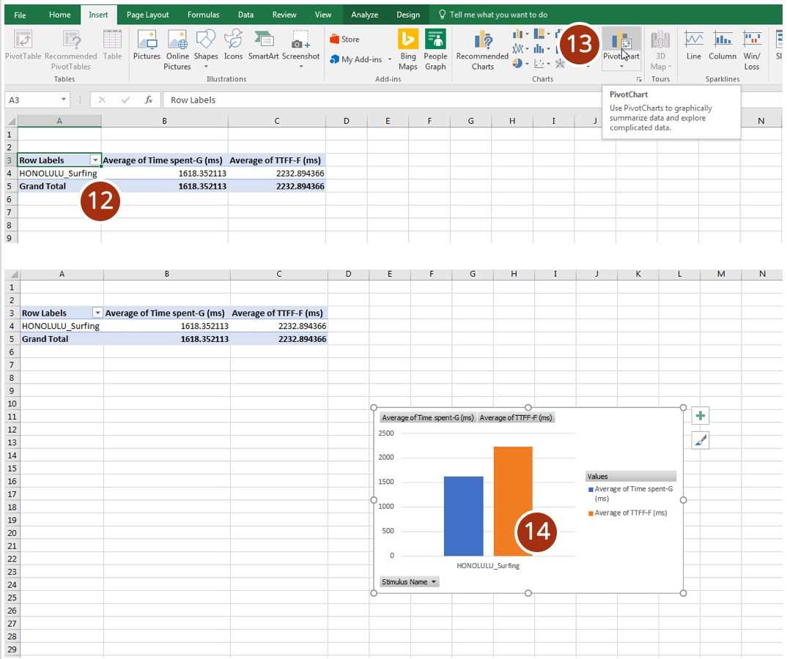
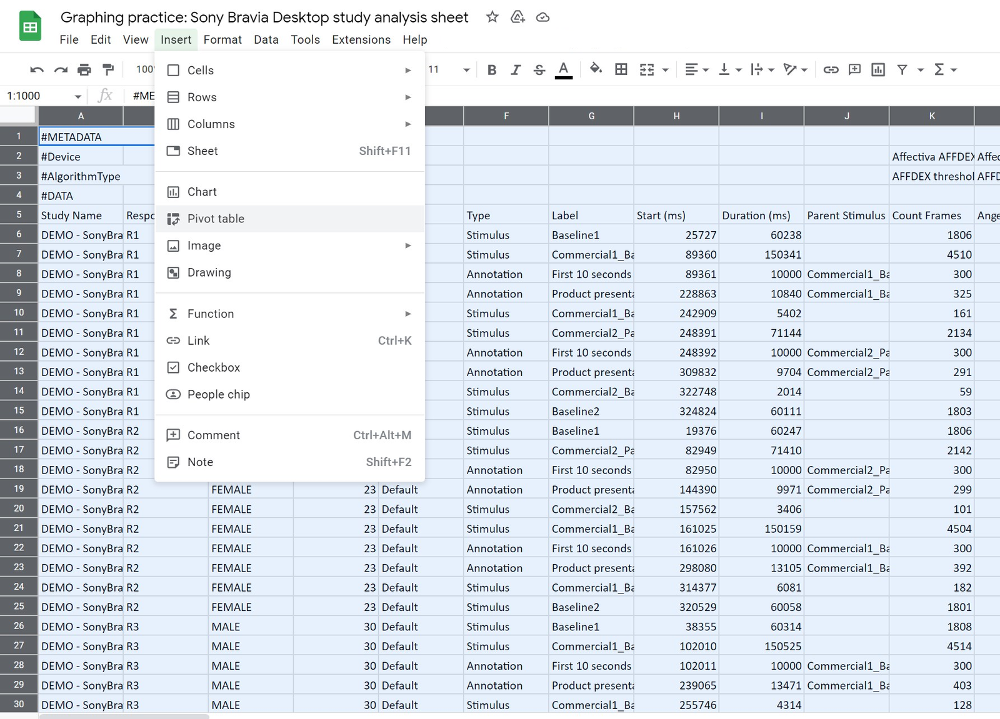
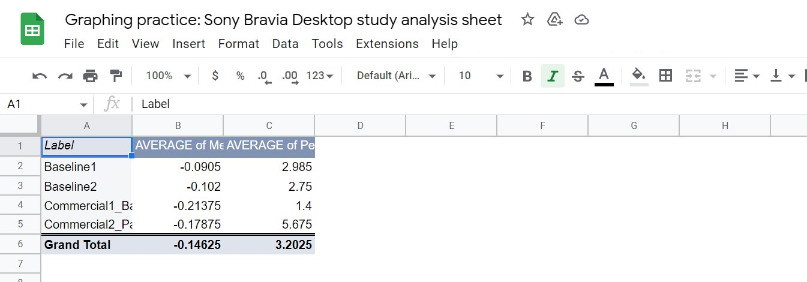
7.7 A circumplex chart, read critically
Why. Vendor reports like to place stimuli on a circumplex, a chart with valence (unpleasant to pleasant) on the x axis and arousal (calm to activated) on the y axis. How to Make Your Own Visualizations builds one from the multimodal pivot table ("Drag your Valence metric on the X-axis and your Arousal metric on the Y-axis"), with frontal alpha asymmetry as valence and GSR peaks per minute as arousal. It is quick to make and easy to over-read.
Read the article's chart as a reviewer would. It plots one mean per label: no participants, no spread, no N. The x axis is still titled "Label", one of the four points has no name, and the two baselines sit on the chart as if they were stimuli. Calling frontal asymmetry "valence" is an interpretation, not a measurement: the Soft Drink sample report puts facial valence on that axis (and draws a GSR axis although that study recorded no GSR), and the Food Testing sample report puts EEG "approach" there, so charts with the same axis titles measure different things. Placing a signal on a "pleasant" axis assumes what it means, the reverse inference that the General Data Analysis article warns against (Poldrack, 2006).
![Google Sheets scatter chart titled AVERAGE of Mean Frontal Asymmetry Alpha and AVERAGE of Peaks Per Minute, with mean frontal asymmetry from -0.200 to -0.100 on the x axis, whose title still reads Label, and GSR peaks per minute from 0 to 6 on the y axis; four points, three labeled Commercial1_Balls, Baseline2, and Baseline1 and one near -0.18 and 5.7 without a label; beside it the Pivot table editor with Rows Label (Ascending, Show totals) and Values Mean Frontal Asymmetry Alpha and Peaks Per Minute, each summarized by AVERAGE](../assets/ws8/figures/viz_circumplex_scatter_chart.png)
The Food Testing sample report goes further. Its corners read "Aversive", "Activating", "Boring", and "Calming", each followed by "Scents", a word carried over from a template into a food study, and its points have no labels. Its executive summary admits that "there are not enough samples in this study to present results in the affective circumplex" (10 participants) and then draws verdicts from the chart. A circumplex of the worked example would put a measure the study recorded on each axis under its own name, such as Joy (percent of time) and GSR peaks per minute above Baseline, show every participant, and add intervals for the means.
![Food Testing sample report slide Interpreting Data Based on the Circumplex: on the left, the affective circumplex with High Arousal and Low Arousal, Unpleasant and Pleasant, and Agitated, Excited, Bored, and Relaxed; on the right, the same space with Less EEG Approach to More EEG Approach on the x axis and Low GSR to High GSR on the y axis, unlabeled points in three shades of blue, and corner labels Aversive Scents, Activating Scents, Boring Scents, and Calming Scents; a note says that EEG data are used as valence measures on the x axis and GSR as a measure of arousal on the y axis](../assets/ws8/figures/sample_food_circumplex_interpretation.png)
Help center articles for this section: General Data Analysis and Interpretation and Creating Excel Pivot Tables; How to Make Your Own Visualizations is a local PDF only. Manual PDFs on this site: General Data Analysis and Interpretation, Making Excel Pivot Tables, and How to Make Your Own Visualizations (PDF). The Food Testing and Soft Drink sample reports are not posted on this site, because they contain faces, real brand names, and staff contact details; they are in the lab folder (ask the instructor). Data files: SIMULATED_descriptives.csv, analysis_full.R, analysis_output.txt, SIMULATED_analysis_report.xlsx, and excel_walkthrough.md.
Testing the questions: the planned tests, their checks, and the script line by line
This section runs every test of the analysis plan with analysis_full.R; its console output, analysis_output.txt (October 11, 2026), is the source of every statistic below, all SIMULATED. Run Rscript analysis_full.R from its folder (about 2 minutes; the H1 power simulation runs 84,000 Fisher tests), or read the cards at the end of the section. The statistics stay at a first course level, with one plain paragraph for each new idea.
| Family | Question | STEP | Test | Correction |
|---|---|---|---|---|
| H1 to H3 | The Workshop 7 hypotheses | 4 | As in Workshop 7: Fisher's exact test, a linear mixed model, paired t tests | Holm over 2 ads (H3) |
| Q4 | Attention by ad and AOI | 5 | Linear mixed model; check: repeated measures ANOVA; paired follow ups | None (omnibus); Holm over 6 (Q4a) and over 3 (Q4b) |
| Q5 | Joy, Engagement, and Brow Furrow by ad | 6 | Paired t tests with Wilcoxon checks | Holm over 3 |
| Q6 | Liking, recall, and arousal by ad, as the client asked | 6B | Paired t tests; exact McNemar test | Holm over 3 |
| O1 | Order and position checks | 7 | Mixed model contrasts | Holm over 8 |
| E1 | How the measures go together (exploratory) | 8 | Spearman ρ with 95% CI, no p values | None |
| P1 | Sensitivity power | 9 | power.t.test; a simulation of Fisher's exact test | Not applicable |
First, reproduce Workshop 7
STEP 1 reads the five Workshop 7 files (from the Workshop 7 folder, or from ws7_inputs/, whose copies have the same MD5 checksums) and compares 53 numeric columns with their codebook ranges: 0 values fall outside. STEP 2 prints the plan and applies rule R2: the analysis sample is 22 of 24 participants, 11 in each order, with 66 participant by stimulus rows, 44 participant by ad rows, and 65 rows of valid GSR (P05's Ad_B value fails rule R3).
STEP 4 runs the H1 to H3 code of Workshop 7, unchanged, as a continuity check: all 55 printed lines appear verbatim in Workshop 7's output, and all 94 stored values match at full precision (largest relative difference 1.9e-16, rounding at the sixteenth digit); any real difference would stop the script. Why: two reports that give two numbers for one test destroy trust in both, and a changed number means that a file, package, or line changed. You should see "RESULT: H1 to H3 match Workshop 7 exactly (H1 Fisher OR = 4.34, p = .032; H2 b = 0.32 per 10 points, p = .110; H3 d_z = 0.83 and 0.95)." Common mistake. Editing the comparison so that the script runs on: the check exists to stop exactly there.
If you skipped Workshop 7, the three reproduced results (SIMULATED) are: H1, recall in 17 of 24 observations with a Logo fixation and 7 of 20 without, OR = 4.34, 95% CI [1.08, 19.55], Fisher's exact p = .032; H2, liking 0.32 points higher per 10 percentage points of Joy, 95% CI [-0.06, 0.71], p = .110; H3, more GSR peaks than at Baseline during Ad_A, dz = 0.83 [0.33, 1.30], and Ad_B, dz = 0.95 [0.42, 1.46], both Holm p < .001.
Q4: attention by ad and AOI
Each participant has six dwell values: three AOIs in each of two ads. A linear mixed model predicts dwell from the ad, the AOI, and their combination, and gives each participant a random intercept, a personal starting level. The main effect of AOI asks whether the AOIs hold different shares of the ad on average. The interaction asks whether the pattern across Logo, Product, and Headline differs between the ads, which is what a client means by "do the ads draw the eye differently?"
Type III F tests with Satterthwaite degrees of freedom (lmerTest), and likelihood ratio tests between nested models fitted by maximum likelihood.
Dwell differed strongly between AOIs, F(2, 126) = 508.90, p < .001, partial η² = .89 (computed from F), likelihood ratio χ²(2) = 289.06, p < .001 (SIMULATED). Neither the main effect of ad, F(1, 126) = 0.07, p = .798, nor the interaction, F(2, 126) = 1.14, p = .323, partial η² = .02, χ²(2) = 2.37, p = .306, was significant. The Product held 42.58 and 41.34 percent of the 30 s ad, the Headline 17.84 and 20.27, and the Logo 1.78 and 1.40 (Ad_A and Ad_B); 10 of 22 participants never had their gaze on the Logo of each ad, 4 of them in both. The model is fitted with lme4 (Bates et al., 2015) and tested with lmerTest (Kuznetsova et al., 2017); in small samples, Satterthwaite degrees of freedom keep false positives near the nominal rate, where likelihood ratio tests can be too liberal (Luke, 2017). Its estimated marginal means equal the cell means here.
The model estimated the spread of the participants' intercepts at 0.0000 (residual SD = 5.9539; SIMULATED), and lme4 flagged the fit as singular. The data explain it. The three AOIs are shares of the same 30 s: a participant who dwells longer on the Product has less time left for the Headline and the Logo, so participants differ little in their average dwell, which is what a random intercept describes. It is not a software error. The model reduces to an ordinary two way analysis, which is why its denominator degrees of freedom are 126 (132 observations minus 6 fixed effects). Report the flag, and lean on a check that does not use this variance.
The check. A repeated measures ANOVA tests each effect against its own participant by effect error term, so it does not need the participant variance. It assumes sphericity, that the differences between every pair of AOIs vary about equally across participants. When they do not, the Greenhouse Geisser correction multiplies both degrees of freedom by an estimate called epsilon, 1 when sphericity holds and smaller when it does not, which raises the p value (Greenhouse & Geisser, 1959). The check agreed (SIMULATED): AOI, F(2, 42) = 356.54, ε = .76, corrected p < .001, partial η² = .94; ad by AOI, F(2, 42) = 1.37, ε = .86, corrected p = .265; ad, F(1, 21) = 0.12, p = .730.
Unequal spread. The model also pools one residual variance for all AOIs, but the residuals spread about three times as widely for the Product (SD 7.30) as for the Logo (SD 2.37; panel A below). As a result, its 95 percent interval for the Logo in Ad_A, [-0.73, 4.29], starts below zero, a dwell time that cannot exist, whereas the interval from the Logo values alone is [0.53, 3.03]. The paired comparisons, each using the spread of its own differences, are therefore the basis for interpretation.
![Four panels: A, residuals of the Q4 model against fitted dwell, in three vertical bands for the Logo near 2, the Headline near 18 to 20, and the Product near 42 percent, with the Logo band much narrower (residual SD Logo 2.37, Product 7.30, Headline 6.71); B, a normal Q-Q plot of the Q4 residuals lying close to the line; C, normal Q-Q plots of the Q5 differences, close to the line for Joy and Engagement and with a long flat run at zero for Brow Furrow; D, the percent of participants at exactly zero, about 45 for Logo dwell in both ads, 14 and 36 for Joy, 5 and 27 for Engagement, and above 80 for Brow Furrow in both ads](../assets/ws8/data-figures/SIMULATED_assumption_checks.png)
The follow ups (Q4a and Q4b). All six pairwise AOI comparisons, three within each ad, differed after Holm's correction (all adjusted p < .001, dz from 1.92 to 6.06; SIMULATED): Product above Headline (Ad_A: 24.74 percentage points, 95% CI [19.03, 30.45]) and Headline above Logo (Ad_A: 16.06, [12.36, 19.76]), and the same in Ad_B. No AOI held more gaze in one ad than in the other: Ad_A minus Ad_B was 0.39 points for the Logo (dz = 0.11, Holm p = 1.000), 1.24 for the Product (dz = 0.14, Holm p = 1.000), and -2.42 for the Headline (dz = -0.31, Holm p = .485). Holm p values are capped at 1. You should see these lines under "Q4a" and "Q4b" in STEP 5. Common mistake. Reading Product > Headline > Logo off the means without the tests, or testing all 15 pairs of the six cells when the plan named nine.
Q5: facial expressions, and values that pile up at zero
Each participant saw both ads, so Q5 uses paired t tests on each participant's difference, with dz and Holm over the three expressions. None differed (SIMULATED): Joy was more frequent during Ad_A by 3.80 percentage points of time, 95% CI [-1.55, 9.16], dz = 0.31 [-0.12, 0.74], Holm p = .331; Engagement by 4.57 points [-1.13, 10.26], dz = 0.36 [-0.08, 0.78], Holm p = .331. Figure 2 in section 07 shows every participant's values.
Values that pile up at zero. A participant whose expression never reached the threshold of 50 scores 0 percent of time; Brow Furrow was 0 in both ads for 17 of 22. The Wilcoxon signed rank test ranks the differences and drops pairs with no difference, so for Brow Furrow it rests on 5 participants (V = 10, p = .590). With differences far from normal (Shapiro Wilk W = 0.646, p < .001; panel C above), the rank test is the better guide, and the planned t test (dz = 0.16, Holm p = .464) is reported beside it. For Joy and Engagement the tests agreed (Wilcoxon p = .184 and .099). You should see "at zero: Ad_A 18 of 22, Ad_B 20 of 22, both ads 17" in STEP 6. Common mistake. Reporting Brow Furrow's mean of 0.65 percent without saying that it describes almost nobody.
Q6: the comparisons the client asked for
Recall is yes or no for each ad, and the same 22 people answered for both ads; a chi square test on the 44 answers would treat them as 44 independent people. The McNemar test keeps the pairs. People who recalled the brand after both ads, or after neither, say nothing about a difference between the ads, so the test uses only the discordant pairs, the people whose answer changed (McNemar, 1947).
A binomial test of b out of b + c = 10 against one half: p = 1.000.
The client asked how the ALTAVO ad (Ad_A) compares with the BRENLOW ad (Ad_B) on liking, recall, and arousal, a family of three (SIMULATED). Liking was higher for Ad_A by 0.55 scale points, 95% CI [-0.13, 1.23], t(21) = 1.67, dz = 0.36, Holm p = .331; 13 participants liked Ad_A more, 7 Ad_B, and 2 rated them equally. Recall was identical, 12 of 22 for each ad (5 only ALTAVO, 5 only BRENLOW, 7 both, 5 neither), exact McNemar p = 1.000, difference 0.0 percentage points, 95% CI [-28.2, 28.2]. Among the 21 participants with valid GSR in both ads, Ad_A drew 1.05 more peaks per minute, 95% CI [-1.10, 3.19], dz = 0.22, Holm p = .642 (Figure 3). Purchase intention was asked once, after both ads, about reusable water bottles in general, so the ads cannot be compared on it. A coincidence that looks like an error: Q6 liking and Q5 Engagement both give t(21) = 1.67 and dz = 0.36 (p = .11033 and .11032), from different variables.
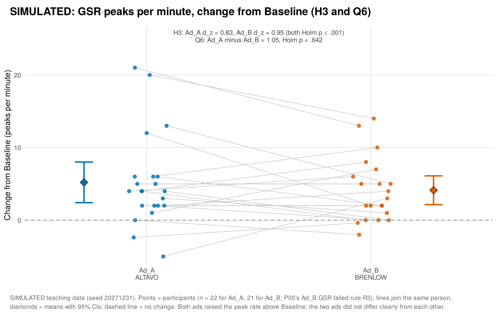
Order checks: did the counterbalancing work?
Half the participants saw Ad_A first (AB) and half Ad_B first (BA), the counterbalancing that keeps order from favoring either ad. STEP 7 checks liking and dwell on each AOI with two contrasts: the order effect, the AB group minus the BA group, and the position effect, an ad seen first minus the same ad seen second. None of the eight checks was significant after Holm's correction (SIMULATED). One reached p = .020 before it: the BA group dwelled longer on the Headline (AB minus BA = -5.33 points, 95% CI [-9.73, -0.94]; Holm p = .159). It did so in both ads (AB group 14.824 and 17.954 percent; BA group 20.865 and 22.581), so the difference lies between two groups of 11 people, not in the ad seen first, and every comparison of the ads is made within participants.
Exploratory correlations: estimates without p values
The plan labeled one analysis exploratory before any result existed (E1). STEP 8 computes one value per participant for seven measures and the Spearman correlation of every pair, 21 in all, each with a 95 percent interval from the Fisher z transformation and the Bonett and Wright variance for rank correlations (Bonett & Wright, 2000). If no measure were related to any other, about 1.05 of the 21 intervals would still exclude zero by chance (SIMULATED). One did, purchase intention with attitude, ρ = .57, 95% CI [.16, .81]: two survey measures about the same category. The largest cross modality estimates, Logo dwell with brands recalled (ρ = .42, [-.02, .73]) and Joy with liking (ρ = .33, [-.12, .66]), include both zero and a large correlation.
Why no p values. With 21 estimates, p values invite reporting the smallest and writing a hypothesis around it after the fact, which Kerr called HARKing, hypothesizing after the results are known (Kerr, 1998). Keeping exploratory and confirmatory analyses apart lets a reader weigh each correctly (Wagenmakers et al., 2012). The matrix is a list of questions for the next study.
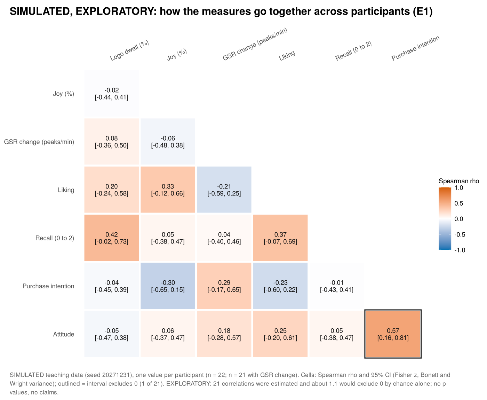
The power analysis in the script
STEP 9 runs the sensitivity analysis of section 06: power.t.test(type = "paired") solves for whichever of n, dz, and power is left out. For H1 it simulates Fisher's exact test, 4,000 studies for each total N from 40 to 120 (SIMULATED), with set.seed(20271231) for repeatability. N counts independent observations, so with two ads per person, plan people from one ad per person or from a simulation of the mixed model (Brysbaert & Stevens, 2018).
The script, line by line
Code from analysis_full.R in the order it runs, each card with the lines it printed on October 11, 2026. The color palette and figure theme of STEP 0 and the drawing code of STEP 10 are left out, because they set only layout, colors, and labels; the parts of STEP 10 that compute numbers, such as the dashboard verdicts, are kept.
The Excel route: Q5 and Holm
Without R, open SIMULATED_analysis_report.xlsx and follow sections 5 and 6 of excel_walkthrough.md. The Q5 sheet lists the 22 participants of the analysis sample in Q5!A4:A25 and looks up each value by key, for example Q5!B4 = =INDEX(Data!$Q$2:$Q$73,MATCH($A4&"|Ad_A",Data!$AD$2:$AD$73,0)); Q5!D4 = =B4-C4 is the difference. The results block for Joy:
| Quantity | Cell | Formula | Simulated result |
|---|---|---|---|
| Mean difference, Ad_A minus Ad_B | Q5!B34 | =AVERAGE(D4:D25) | 3.803 |
| SD of the differences | Q5!B35 | =STDEV.S(D4:D25) | 12.078 |
| SE of the mean difference | Q5!B36 | =B35/SQRT(B33) | 2.5751 |
| t | Q5!B37 | =B34/B36 | 1.477 |
| p, two tailed (T.TEST, paired) | Q5!B39 | =T.TEST(B4:B25,C4:C25,2,1) | 0.15459 |
| p from t (T.DIST.2T) | Q5!B40 | =T.DIST.2T(ABS(B37),B38) | 0.15459 |
| 95% CI of the mean difference | Q5!B42, Q5!B43 | =B34-B41*B36, =B34+B41*B36 | -1.553, 9.158 |
| Cohen's dz | Q5!B44 | =B34/B35 | 0.315 |
| dz 95% CI (approximation) | Q5!B46, Q5!B47 | =B44-1.96*B45, =B44+1.96*B45 | -0.113, 0.743 |
| Zero in both ads (count) | Q5!B51 | =COUNTIFS(B4:B25,0,C4:C25,0) | 3 |
| p for Engagement and Brow Furrow (same formulas, columns F and J) | Q5!F39, Q5!J39 | =T.TEST(...,2,1) | 0.11032, 0.46359 |
The Holm sheet links the three p values (Holm!B4 = =Q5!B39), ranks them (Holm!C4 = =RANK.EQ(B4,$B$4:$B$6,1)), and multiplies (Holm!D4 = =$K$3-C4+1, Holm!E4 = =B4*D4). A step table in rows 11 to 13 sorts with =SMALL($B$4:$B$6,A11) and keeps the running maximum with =MIN(1,MAX(E11,D12)); Holm!F4 = =INDEX($E$11:$E$13,C4) returns the adjusted p, and Holm!G4 = =MIN(1,$K$3*B4) gives Bonferroni for comparison. You should see Holm p = 0.33096 for Joy and Engagement and 0.46359 for Brow Furrow, all "not significant," and Check!B261 = 0 on the Check sheet.
Common mistakes. T.TEST with type 2 or 3, which ignores the pairing; Holm without the running maximum; typing a p value instead of linking it. The Wilcoxon checks, exact dz intervals, models, Q4 and Q6 tests, order checks, correlations, and power analysis stay in R.
Help center articles for this section: General Data Analysis and Interpretation, AOI Metrics, and Creating Excel Pivot Tables. Manual PDFs on this site: General Data Analysis and Interpretation, AOI Metrics, and Making Excel Pivot Tables (PDF).
Writing the results and the client report: the same numbers for two readers
A journal reader wants every planned test with its statistic, effect size, and interval, in a fixed order and form; a client wants to know what to do, in plain words, with the uncertainty stated honestly. Both documents carry the same numbers. The journal article reporting standards ask for every planned analysis whatever its outcome, its planned or exploratory status, and an effect size with an interval for each result (Appelbaum et al., 2018); the APA Publication Manual sets the form (American Psychological Association, 2020). Every number here is SIMULATED; the full models are results_text.md and client_report_model.md.
The analysis strategy paragraph
It states the measures with their units; which hypotheses were written before collection, which questions after collection but before analysis, and which analyses are exploratory; each family with its correction; each test with its effect size and interval method; the power analysis; and the software with versions and the settings that change the numbers.
All tests were two tailed with alpha = .05, and every planned test is reported regardless of its outcome. Three hypotheses were written in the study protocol before data collection (H1 to H3). Four further questions were specified in a written analysis plan after data collection but before these analyses were run: attention by ad and area of interest (Q4), facial expression by ad (Q5), the head to head comparisons that the client requested on liking, recall, and arousal (Q6), and a check of the counterbalancing (O1); because they were fixed after the data existed, they carry less confirmatory weight than H1 to H3 (Nosek et al., 2018; Simmons et al., 2011). A matrix of correlations among seven participant level measures (E1) was labeled exploratory in advance and is reported with confidence intervals and without p values. Within each family of related comparisons, p values were adjusted with Holm's (1979) procedure; the omnibus tests of Q4 were not adjusted. Q4 used a linear mixed model of dwell with ad, AOI, and their interaction as fixed effects and a random intercept for each participant (Bates et al., 2015), tested with Type III F tests with Satterthwaite degrees of freedom (Kuznetsova et al., 2017) and checked with a repeated measures analysis of variance with Greenhouse and Geisser's (1959) correction. Follow up comparisons and the comparisons of Q5 and Q6 were paired t tests reported with the mean difference, its 95% confidence interval (CI), and Cohen's dz with a 95% CI from the noncentral t distribution (Cumming & Finch, 2001; Lakens, 2013), each with a Wilcoxon signed rank check. Brand recall was compared with the exact McNemar test (McNemar, 1947), and Spearman correlations carried 95% CIs from the Fisher z transformation with the Bonett and Wright (2000) variance. A sensitivity power analysis computed the smallest effect the design could detect (Lakens, 2022); observed power was not computed (Hoenig & Heisey, 2001). Data were collected with iMotions Lab (Version 11.1.47136.14; iMotions A/S, Copenhagen, Denmark), and analyses were run in R 4.3.3 (R Core Team, 2024) with readr 2.1.5, dplyr 1.1.4, tidyr 1.3.1, ggplot2 3.4.4 (Wickham, 2016), lme4 1.1.35.1, and lmerTest 3.1.3. Figures show every participant's values with the means and their 95% CIs (Weissgerber et al., 2015).
A real methods paragraph adds what the simulation cannot know: the fixation filter and its parameters, the AFFDEX threshold actually set, and the GSR peak detection parameters, from the lab computer and the iMotions Reports (section 05). They are on the Items to verify list in section 11.
APA results: the form
The rules of Workshop 7 still hold (SIMULATED examples): the statistic with its degrees of freedom, t(21) = 1.48 or F(2, 126) = 1.14; then p, exact to three decimals (p = .155) and p < .001 below that, never p = .000; then the effect size with its interval. Drop the leading zero for values that cannot exceed 1 (p, ρ = .57, partial η² = .89) and keep it for those that can (dz = 0.31, OR = 4.34). Workshop 8 adds two rules: give the Holm p beside the raw p and name its family, and say when an effect size is approximate (partial η² computed from F). Report a nonsignificant result with its interval, never as "no effect" or "a trend toward significance."
Model results (SIMULATED)
Condensed from section (b) of results_text.md, which opens with the descriptive statistics and then gives H1 to H3 word for word as Workshop 7 reported them (their numbers are in section 08 and in Table 2 below). The new paragraphs follow.
Dwell differed strongly between AOIs, F(2, 126) = 508.90, p < .001, partial η² = .89 (computed from F). Neither the main effect of ad, F(1, 126) = 0.07, p = .798, nor the ad by AOI interaction, F(2, 126) = 1.14, p = .323, partial η² = .02, was significant: the distribution of gaze across the three AOIs did not differ detectably between the ads (Figure 1). The participant intercept variance was estimated at zero (a singular fit), as expected for shares of a fixed 30 s, and a repeated measures analysis of variance led to the same conclusions (AOI: F(2, 42) = 356.54, Greenhouse Geisser ε = .76, corrected p < .001; ad by AOI: F(2, 42) = 1.37, ε = .86, corrected p = .265). Because the AOIs did not share a common residual variance, the paired comparisons were interpreted. All six pairwise AOI comparisons within the ads were significant after Holm's adjustment (all adjusted p < .001, dz between 1.92 and 6.06): dwell on the Product exceeded dwell on the Headline (Ad_A: 24.74 percentage points, 95% CI [19.03, 30.45]; Ad_B: 21.08 [17.31, 24.85]), which exceeded dwell on the Logo (Ad_A: 16.06 [12.36, 19.76]; Ad_B: 18.87 [15.91, 21.83]). No AOI held more gaze in one ad than in the other (Logo: dz = 0.11 [-0.31, 0.52], Holm p = 1.000; Product: dz = 0.14 [-0.28, 0.56], Holm p = 1.000; Headline: dz = -0.31 [-0.73, 0.12], Holm p = .485).
None of the three expressions differed significantly between the ads (Figure 2). Joy was more frequent during Ad_A than during Ad_B by 3.80 percentage points of time, 95% CI [-1.55, 9.16], t(21) = 1.48, p = .155, Holm p = .331, dz = 0.31, 95% CI [-0.12, 0.74]; Engagement by 4.57 points [-1.13, 10.26], t(21) = 1.67, p = .110, Holm p = .331, dz = 0.36 [-0.08, 0.78]. Brow Furrow was absent in both ads for 17 of 22 participants; the difference of 0.26 points [-0.47, 0.99], t(21) = 0.75, Holm p = .464, dz = 0.16 [-0.26, 0.58], rests on five participants with any difference (Wilcoxon V = 10, p = .590). In the head to head comparisons, liking was higher for Ad_A by 0.55 scale points, 95% CI [-0.13, 1.23], t(21) = 1.67, p = .110, Holm p = .331, dz = 0.36 [-0.08, 0.78]. Brand recall was identical, 12 of 22 (54.5%) for each ad, exact McNemar p = 1.000, difference = 0.0 percentage points, 95% CI [-28.2, 28.2]. Among the 21 participants with valid GSR during both ads, the difference in peaks per minute was 1.05, 95% CI [-1.10, 3.19], t(20) = 1.02, p = .321, Holm p = .642, dz = 0.22 [-0.21, 0.65] (Figure 3). Purchase intention was measured once, for the product category, so the ads could not be compared on it. The point estimates favored Ad_A on Joy, Engagement, and liking, but each interval includes both zero and an effect of moderate size.
No order or position effect was significant after Holm's adjustment over the eight checks; the BA group dwelled longer on the Headline in both ads (AB minus BA = -5.33 points, 95% CI [-9.73, -0.94], p = .020), but not after the adjustment (Holm p = .159). Of 21 exploratory Spearman correlations (Figure 4), about 1.05 would exclude zero by chance alone; one did, between purchase intention and attitude, ρ = .57, 95% CI [.16, .81], two category level survey measures. These estimates are offered as hypotheses for a new study, not as findings. With 22 paired observations, a two tailed paired t test at alpha = .05 had 80 percent power only for effects of dz = 0.63 or larger; 80 percent power requires 34 participants for dz = 0.50 and 90 for dz = 0.30 (45 and 120 at the strictest step of a Holm family of three).
A model table of all tests
| Table 2 (SIMULATED). Test | n | Statistic | p | Holm p | Effect size [95% CI] | Status |
|---|---|---|---|---|---|---|
| H1: Fisher's exact test, Logo fixated by brand recalled, pooled | 44 | Fisher's exact test (χ²(1) = 5.65, p = .017) | .032 | OR = 4.34 [1.08, 19.55] | Planned, Workshop 7 | |
| H2: mixed model, liking on Joy per 10 points | 44 | t(40.66) = 1.63 | .110 | b = 0.32 [-0.06, 0.71] | Planned, Workshop 7 | |
| H3: GSR, Ad_A minus Baseline | 22 | t(21) = 3.87 | < .001 | < .001 | dz = 0.83 [0.33, 1.30] | Planned, Workshop 7 |
| H3: GSR, Ad_B minus Baseline | 21 | t(20) = 4.35 | < .001 | < .001 | dz = 0.95 [0.42, 1.46] | Planned, Workshop 7 |
| Q4: AOI (mixed model) | 132 | F(2, 126) = 508.90 | < .001 | partial η² = .89 | Planned, Workshop 8 | |
| Q4: ad | 132 | F(1, 126) = 0.07 | .798 | partial η² = .00 | Planned, Workshop 8 | |
| Q4: ad by AOI | 132 | F(2, 126) = 1.14 | .323 | partial η² = .02 | Planned, Workshop 8 | |
| Q4a: six AOI pairs within the ads | 22 | t(21) = 9.02 to 28.44 | all < .001 | all < .001 | dz = 1.92 to 6.06 | Planned, Workshop 8 |
| Q4b: Logo, Ad_A minus Ad_B | 22 | t(21) = 0.50 | .625 | 1.000 | dz = 0.11 [-0.31, 0.52] | Planned, Workshop 8 |
| Q4b: Product | 22 | t(21) = 0.64 | .526 | 1.000 | dz = 0.14 [-0.28, 0.56] | Planned, Workshop 8 |
| Q4b: Headline | 22 | t(21) = -1.45 | .162 | .485 | dz = -0.31 [-0.73, 0.12] | Planned, Workshop 8 |
| Q5: Joy, Ad_A minus Ad_B | 22 | t(21) = 1.48 | .155 | .331 | dz = 0.31 [-0.12, 0.74] | Planned, Workshop 8 |
| Q5: Engagement | 22 | t(21) = 1.67 | .110 | .331 | dz = 0.36 [-0.08, 0.78] | Planned, Workshop 8 |
| Q5: Brow Furrow | 22 | t(21) = 0.75 | .464 | .464 | dz = 0.16 [-0.26, 0.58] | Planned, Workshop 8 |
| Q6: liking | 22 | t(21) = 1.67 | .110 | .331 | dz = 0.36 [-0.08, 0.78] | Planned, Workshop 8 |
| Q6: brand recall, exact McNemar | 22 | discordant 5 and 5 | 1.000 | 1.000 | difference 0.0 points [-28.2, 28.2] | Planned, Workshop 8 |
| Q6: GSR peaks per minute | 21 | t(20) = 1.02 | .321 | .642 | dz = 0.22 [-0.21, 0.65] | Planned, Workshop 8 |
| O1: eight order and position contrasts | 44 | smallest p: Headline order, t(20.00) = -2.53 | .020 | .159 | -5.33 points [-9.73, -0.94]; 0 of 8 significant after Holm | Planned check |
| E1: 21 Spearman correlations | 21 or 22 | ρ from -.30 to .57; 1 interval excludes 0 | Exploratory |
Note. SIMULATED teaching data. Holm p is adjusted within the family named in section 08. The checks of each family (the per ad H1 tables, the H1 mixed model, the H2 correlations, and the repeated measures ANOVA of Q4) are among the 59 rows of SIMULATED_all_tests.csv, which can go with the paper as a supplementary file.
Captions that stand alone. A caption says what each mark is (points, lines, diamonds, bars), gives n, names the test behind any verdict, and says SIMULATED when the data are; Figure 3 in section 08 is a model. Show the data, not only the means (Weissgerber et al., 2015; Rousselet et al., 2017).
The client report: a familiar structure with honest numbers
The vendor sample reports share one outline: a title page; background and objectives with three numbered questions; the method (modalities, study details with stimuli, N, and location, and the study flow); an executive summary of three to five headline findings; one finding per page, written as the page title above a chart; key takeaways or recommendations; and a closing page. Keep that structure, because clients read it quickly, and add what the samples leave out: the N behind each chart, an interval or a plain statement of uncertainty, the planned test behind each headline, a page of what the results do not show, and a methods appendix.
The executive summary of the Soft Drink sample report is a good model of form. Its content is another matter: the third headline says facial expressions "could be powerful predictors," on the strength of the regression in section 06 (R² = 0.065), and the first two rest on a rank sum score that discards the size of every difference and breaks ties without a stated rule.
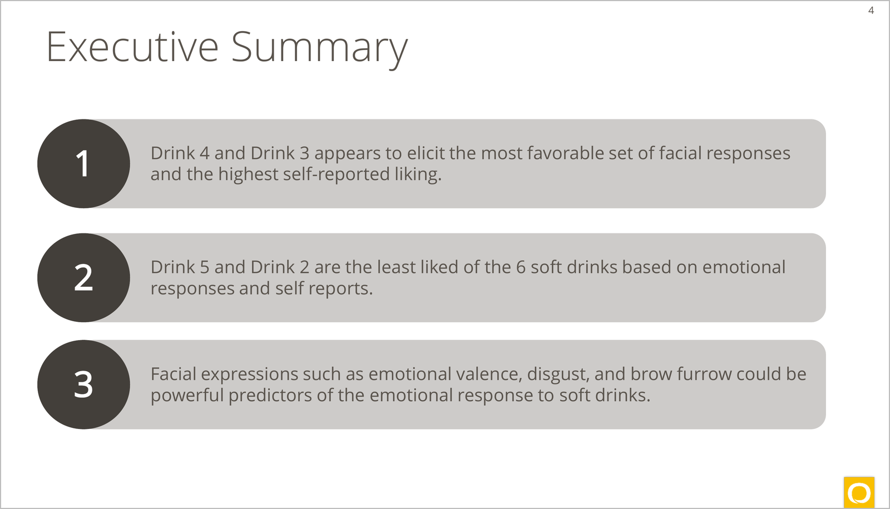
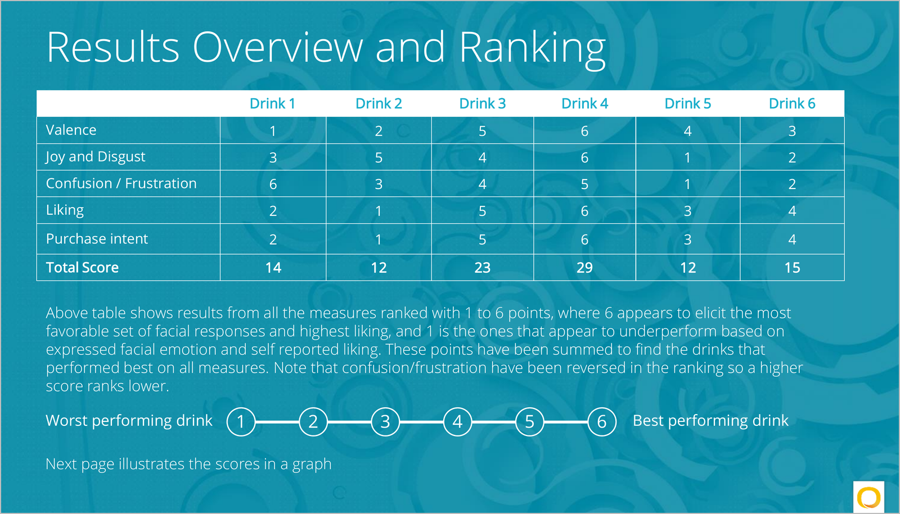
A finding page should carry its own evidence. The Soft Drink valence page claims that one drink "generally shows more positive emotional reactions than water" with no N, spread, or test. The Website UX sample report compares two websites, each seen by a different group of 15 people, without a test. The In-Store Shopper sample report sets two heatmaps, whose colors are relative and qualitative (section 04), beside bars of time spent that carry no N or interval.
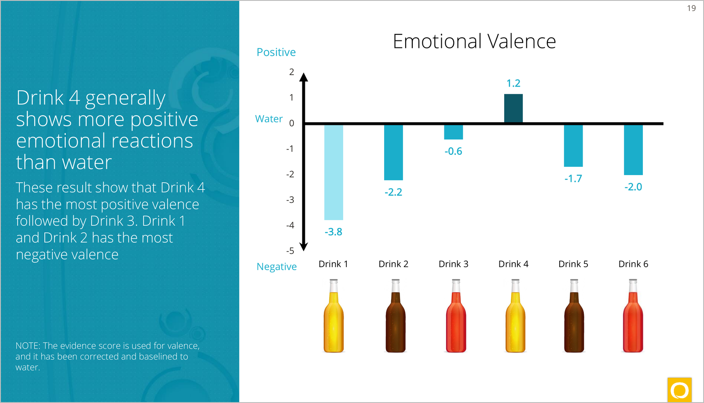
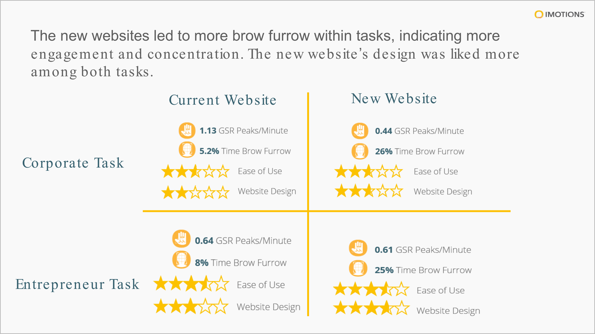
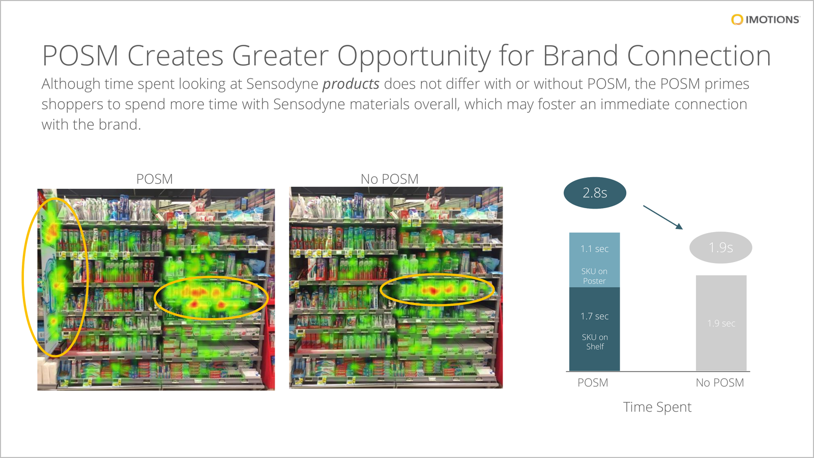
A model client report (SIMULATED)
Adapted from client_report_model.md, written for a fictional client, the ALTAVO brand team; ALTAVO and BRENLOW are invented brands. Each headline is the finding, and each number has its base (12 of 22).
- Both ads got viewers' bodies to respond. Skin conductance responses, a standard sign of arousal, rose from about 2 per minute at rest to 7.3 per minute during the ALTAVO ad and 6.0 during the BRENLOW ad; 19 of 22 viewers responded more to the ALTAVO ad than at rest.
- The ALTAVO logo is almost never seen. Viewers spent 1.8 percent of the ad looking at the logo, and 10 of 22 never looked at it at all. This matters because viewers who did look at the logo named the right brand afterward far more often (71 percent) than viewers who did not (35 percent).
- We cannot tell which ad performs better. ALTAVO's ad scored somewhat higher on smiling (Joy) and liking, but the differences are small enough that chance alone could produce them with 22 viewers. Brand recall was identical: 12 of 22 viewers (55 percent) named the right brand for each ad.
Recommendation. Do not choose between the two ads on the basis of this study. Instead, make the ALTAVO logo easier to see (larger, earlier, and on screen longer), and test the revised ad against the current one with at least 34 viewers.
![Six panels comparing ALTAVO (Ad_A, blue) and BRENLOW (Ad_B, vermilion) with a dot for each average and a bar for its 95 percent interval: brand attention, 1.8 and 1.4 percent of the ad on the logo; emotion, Joy 12.1 and 8.3 percent of time; arousal, 5.2 and 4.1 GSR peaks per minute above Baseline; liking, 4.6 and 4.0 on a 1 to 7 scale; brand recall, 54.5 and 54.5 percent of viewers, each with the verdict We cannot tell which ad is higher, the difference, and its Holm p; and purchase intention, 3.7 for both ads together, with the note that it was asked once, about the category, so the ads cannot be compared](../assets/ws8/data-figures/SIMULATED_fig5_client_dashboard.png)
| Finding 1. At a glance: no clear winner (SIMULATED) | ALTAVO (Ad_A) | BRENLOW (Ad_B) | Can we tell them apart? |
|---|---|---|---|
| Time looking at the logo | 1.8% of the ad | 1.4% | No (difference 0.4 points) |
| Smiling (Joy), share of time | 12.1% | 8.3% | No (difference 3.8 points) |
| Arousal above rest (responses per minute) | 5.2 | 4.1 | No |
| Liking (1 to 7) | 4.6 | 4.0 | No (difference 0.5 points) |
| Liked it a lot (6 or 7) | 5 of 22 (22.7%) | 3 of 22 (13.6%) | Not tested |
| Named the right brand | 12 of 22 (54.5%) | 12 of 22 (54.5%) | No (identical) |
| Purchase intention (1 to 7) | 3.7, asked once, about reusable bottles in general | Cannot be compared | |
"Liked it a lot" is the top 2 box, the share of viewers who chose one of the two most favorable answers. The other findings of the model report, each a page title:
- Viewers watch the product, not the brand. In both ads the product held about 41 to 43 percent of viewing time, the headline 18 to 20 percent, and the logo under 2 percent; those who found the ALTAVO logo did so on average 11.8 seconds into the 30-second ad.
- Seeing the logo goes with remembering the brand. 71 percent recall with a look at the logo (17 of 24 cases) against 35 percent without (7 of 20); an association, not proof that a bigger logo would raise recall.
- Both ads produce a physical response; neither clearly more than the other. ALTAVO was ahead by about 1.0 response per minute, within what chance can produce; skin conductance shows how strongly the body reacts, not whether the reaction is positive or negative.
- Smiling and frowning were similar for both ads. 17 of 22 viewers did not frown during either ad, and no difference can be told apart from chance.
- That ALTAVO's ad is better or worse than BRENLOW's: every head to head difference was within what chance can produce with 22 viewers.
- An effect on purchase intention: the question named no brand and was asked once, after both ads (average 3.7 of 7; 1 of 22 chose 6 or 7).
- What viewers felt: the software detects facial movements such as a smile, and skin conductance measures intensity, not whether a feeling was good or bad.
- The market: the viewers were 22 university students, and each brand was represented by one ad; and the logo finding is an association, which a test of a revised ad can turn into cause and effect.
Recommendations of the model report. (1) Make the ALTAVO logo easy to find: larger, on screen earlier than about 12 seconds, and held longer, for example on the end card. (2) Test the revised ad against the current one with at least 34 viewers, 45 if three measures are judged together, and about 90 to detect a small difference. (3) Ask purchase intention for each ad and name the brand. (4) Agree on the smallest difference that would change a decision, for example half a point of liking, so that the next report can say "different" or "equal for practical purposes."
The honest sentence. Every nonsignificant comparison gets one: "We cannot tell which ad performs better, and we also cannot say that the two ads are equal; a larger study is needed to settle it." Say what is uncertain and how much, in a form the reader can use (Spiegelhalter, 2017; van der Bles et al., 2019), starting from the decision the client faces (Fischhoff, 2013). The scorecard uses dots on a common scale, because position along a common scale is read more accurately than length, angle, or area (Cleveland & McGill, 1984; Franconeri et al., 2021). Readers who see only intervals of averages tend to overestimate an effect (Hofman et al., 2020), so add counts that show the spread among viewers: 13 of 22 liked the ALTAVO ad more, 7 the BRENLOW ad, and 2 rated them equally.
Citing iMotions and the software
Cite the software and hardware in every paper and client report, in the format iMotions publishes, "iMotions (version number), iMotions A/S, Copenhagen, Denmark, (year)," here "iMotions (11.1), iMotions A/S, Copenhagen, Denmark, (2026)" (iMotions, 2026), with the build actually used (11.1.47136.14 on the lab computer as of October 10, 2026). Cite R (R Core Team, 2024) and the packages that did the work, as the model paragraph does. Then state the settings that change the numbers: the eye tracker and its sampling rate (Smart Eye Aurora, 60 Hz), the fixation filter, the AOI definitions, the AFFDEX threshold, and the GSR notebook parameters. Whether the 11.1.13 update is installed, and the fixation filter values for an Aurora study, are on the Items to verify list in section 11.
Help center articles for this section: General Data Analysis and Interpretation, iMotions Reports, and Standard Methodologies: TV and Digital Ad Testing. Manual PDFs on this site: iMotions Reports and Standard Methodologies: TV and Digital Ad Testing (PDF). Apart from the In-Store Shopper report that Workshop 1 uses, the vendor sample reports are not posted on this site, because they contain faces, real brand names, and staff contact details; they are in the lab folder (ask the instructor).
Discussion and honest communication: what the results mean, what they cannot show, and what the next study needs
A discussion answers three questions: what the results mean, what they cannot show, and what should happen next. For a paying client there is a fourth: how to say all of it honestly when the client hoped for a winner. The model paragraph comes from section (c) of results_text.md; every number is SIMULATED.
What the results mean
Three results are robust within these data. First, both ads raised electrodermal arousal above a resting baseline by large standardized amounts (dz = 0.83 and 0.95), which shows that the ads were engaging enough to produce a physiological response at all. Second, attention followed a steep hierarchy that did not differ between the ads: the Product held about two fifths of each ad, the Headline about a fifth, and the Logo less than 2 percent, with 10 of 22 participants never looking at the Logo of a given ad. Third, viewers who fixated the Logo were more likely to name the advertised brand afterward (H1), a within person association in the direction of earlier eye tracking evidence that fixations on the brand element of an advertisement contribute to memory for the brand (Wedel & Pieters, 2000). The comparisons between the ads produced no significant difference on any measure. The point estimates favored the ALTAVO ad on Joy, Engagement, and liking (dz between 0.31 and 0.36), but these estimates lie well below the smallest effect the design could detect (dz = 0.63), and their intervals include zero. The appropriate conclusion is therefore that the study cannot tell whether the two ads differ, not that they perform equally; a claim of equivalence would require a formal equivalence test against a smallest effect of interest specified in advance (Lakens et al., 2018) and a far larger sample.
Read the model for its moves: the robust results first, each with its size; then the comparisons that found nothing, with the reason they cannot be read as "no difference" and the test that would be needed to say more. Triangulation, looking for agreement among measures from different modalities, is a reason to record several signals; here the exploratory correlations showed only weak agreement, which is why each modality kept its own planned test rather than being merged into one index.
What they cannot show: the limitations
- Simulated data. The results describe a teaching scenario, not consumer behavior.
- A small sample. Twenty-two university students limit power and generalizability; only large within person effects could be detected.
- One ad per brand. A difference between the ads cannot be separated from the executions, and treating ads as a random factor requires many ads (Judd et al., 2012; Westfall et al., 2014).
- Many measures. Each family was corrected, but the number of families still raises the chance of some false positive; the written plan and the exploratory label are the safeguards.
- Reverse inference. Joy at or above 50 records a facial movement classified as a smile, not a felt emotion (Barrett et al., 2019), and GSR peaks index arousal without its direction; reading a mental state from a measure is valid only to the extent that the measure is specific to that state (Poldrack, 2006; Plassmann et al., 2015).
- Shares and zeros. Dwell on the three AOIs shares one 30 s (hence the singular fit and unequal variances), and the expressions piled up at zero, which makes means and t tests fragile for Brow Furrow.
- Purchase intention was asked once, about the category, so nothing can be said about either ad's effect on it.
- Timing of the plan. Q4 to Q6 were fixed after collection, although before analysis, and are less confirmatory than H1 to H3.
Reverse inference: what Brow Furrow cannot tell you
Reverse inference reads a mental state from a measure that can accompany it: the brow furrowed, so the viewer was confused. The General Data Analysis and Interpretation article warns against it for brain imaging, "if a brain region is activated, we cannot infer the presence of a cognitive process just because that brain region is activated," and the logic holds for every signal in this lab. The inference is only as strong as the measure is specific to the state (Poldrack, 2006), and facial movements are not specific to emotions (Barrett et al., 2019).
The Website UX sample report shows the risk. One page reads more brow furrow on the new website as "more engagement and concentration," while earlier pages tie brow furrow to confusion and to the low likability of the current design: one metric, read in opposite directions to fit each conclusion. Its page "Why the extra brow furrow?" settles on deliberation or confusion, beside a boxed note that states the right rule: brow furrow can be interpreted in many ways, and the stimulus and other data sources must be considered.
![Slide titled Why the extra brow furrow? with two empty video frames on the left and bullets on the right: self-reported usability and design ratings are higher for the new website, but so is brow furrow; aggregate facial expression data show brow furrow when participants choose their demographic and decide between products; eye tracking shows similar time on two offerings, 4.2 s and 3.4 s, with multiple revisits, which suggests deliberation or confusion; and a boxed note that brow furrow can be interpreted in a number of different ways, such as frustration, concentration, or reading, and that the stimulus and other data sources must be considered](../assets/ws8/figures/sample_webux_why_extra_brow_furrow.png)
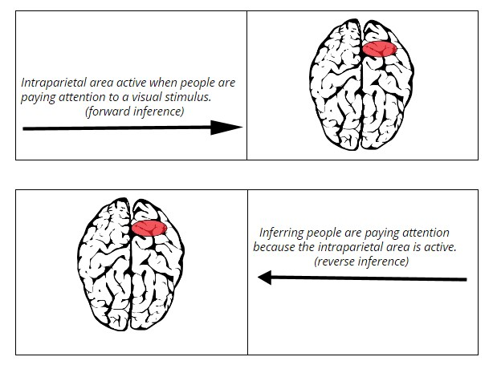
In this study, Brow Furrow was 0 in both ads for 17 of 22 participants, and the small difference between the ads (0.65 against 0.38 percent of time) was not significant (Holm p = .464; SIMULATED). Neither the data nor the measure supports any claim about confusion.
What biometric measures add to self report
Each measure answers a different question. Eye tracking records where attention went while it happened, which a survey can only ask about afterward (Wedel & Pieters, 2008); facial expressions recorded during online video ads have been related to whether viewers kept watching (Teixeira et al., 2012); and a study that recorded several neurophysiological measures for the same television ads found that they differed in what they added, with brain activity measured by fMRI explaining the most variance in the ads' market response beyond traditional self report measures (Venkatraman et al., 2015). Reviews describe both the promise and the limits of these tools in marketing (Lim, 2018; Plassmann et al., 2015). Here the eye tracker found what the survey could not, that 10 of 22 viewers never looked at the logo (SIMULATED); no measure could have found a winner with 22 people.
Reading the sample reports' takeaways critically
The last pages of a report are the ones clients act on. The Food Testing sample report ends with three takeaways from 10 tasters, including that one sample "should likely be removed from consideration," without a test; its own page 14 says there are not enough samples to present results in the circumplex from which the typology comes, and its pages call the same cake's approach behavior relatively high on one page and the lowest on another. The Soft Drink sample report concludes that facial expressions "could be well-suited to predicting" liking from a regression with R² = 0.065 on repeated tastings, discusses skin conductance on its closing pages although that study did not record it, and states no recommendation under the heading Conclusions and Recommendations.
![Slide titled Conclusions with three bullets: Drink 4 and Drink 3 appears to elicit the most favorable set of facial responses and self reported liking; Drink 5 and Drink 2 were the least liked of the 6 soft drinks based on emotional responses and self reports; and facial expressions such as emotional valence, disgust and brow furrow could be well-suited to predicting how well a soft drink is liked or disliked; beside an Overall score row of six bottles numbered 1 to 6 and the scatter plot of emotional valence against self reported liking with a dotted trend line](../assets/ws8/figures/sample_soft_drink_conclusions.png)
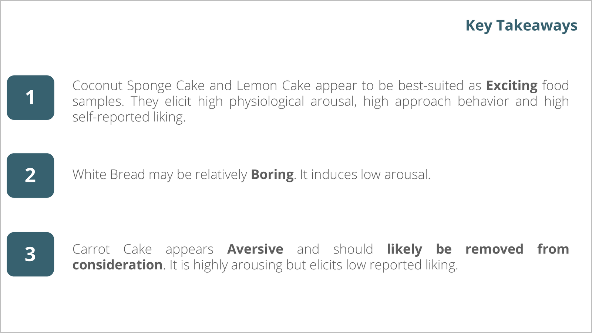
A takeaway is honest when a reader can trace it to a planned test, its effect size, and its interval, and when it states what the design cannot show, as the page "What the results do not show" in the model client report of section 09 does.
What the next study needs
The power analysis turns the limitations into targets (SIMULATED):
- Participants. At least 34 to detect a moderate difference (dz = 0.50) on one paired measure with 80 percent power, 45 if three measures form a Holm family; 90 and 120 for a small difference (dz = 0.30).
- H1. About 72 independent observations, with the number of people planned from one ad per person or a simulation of the mixed model (Brysbaert & Stevens, 2018), not by halving N.
- Several ads per brand, so that the brand can be separated from the execution; when ads are a random factor, adding ads, not only people, is what raises power (Westfall et al., 2014).
- Purchase intention for each brand, asked after each ad and naming the brand.
- A preregistration of every question, test, and correction before collection (Nosek et al., 2018), so that questions like Q4 to Q6 carry full confirmatory weight.
- The smallest difference that matters, agreed with the client in advance (for example half a point of liking), so that a null result can be tested for equivalence.
The ethics of reporting to a paying client
A client who paid for a study hopes for a winner, and the pressure to deliver one is real. The analysis plan is the protection: written before the numbers existed, it names every test that must be reported. Four rules follow. Report every planned test, including every comparison of the two ads, none of which found a difference. Never present an exploratory pattern, or a hypothesis made up after seeing the results, as if it had been predicted (Kerr, 1998); undisclosed choices made after seeing the data can make almost anything significant (Simmons et al., 2011). Never let a heatmap, a ranking, or a bar of means stand in for a test. And never sell a measure for more than it measures: a GSR peak indexes arousal, not liking. As the ASA statement puts it, business decisions should not rest only on whether a p value passes a threshold (Wasserstein & Lazar, 2016). The honest sentence, "we cannot tell which ad performs better," protects the client from paying for a difference that may not exist. Workshop 9 turns to study design, consent, and the IRB, where these obligations begin.
Ending a client report with the most flattering pattern in the data, such as the higher Joy average of the client's own ad, written as a takeaway. If the planned test did not support it, it is not a finding; at most it is a question for the next study, labeled as such.
Help center articles for this section: General Data Analysis and Interpretation and Standard Methodologies: TV and Digital Ad Testing. Manual PDF on this site: General Data Analysis and Interpretation (PDF). The vendor sample reports are in the lab folder (ask the instructor).
Resources: where every step of this workshop comes from
Nothing in this workshop was invented. Every menu path, setting, visual type, and metric name comes from an iMotions help center article, a manual PDF, a lab document, or the lab computer itself (the analysis toolbar was read on October 10, 2026, in iMotions Lab 11.1.47136.14, without opening any respondent data); every statistical method and every reporting rule comes from a published source; and every number in the worked example comes from the simulated files listed under (e). This section collects all of it in seven groups, so that you can go to the original when a step in the lesson is not enough. The help center at help.imotions.com is reached signed in through my.imotions.com with the lab account, and every article also has a Markdown twin at the page address followed by .md. The manual PDFs under (b) are the lab's own downloaded copies, which iMotions has given Dr. Sciuchetti permission to share with this class. Every manual PDF carries a 2023 date, the version clues inside them run from iMotions 8.1 to 10.0, and none describes iMotions Lab 11.1, so screenshots of the same window often disagree (Edit Result or Open analysis, Settings or Visualization, Add Analysis or Create Analysis); where a manual and the screen disagree, the lab computer is the reference, and the item is listed under (g). The Analysis Dashboard is licensed on both lab keys, but its help center article has not been downloaded and no manual describes it, so this workshop says only what the toolbar and the release notes show; the rest will be added after it is checked on the lab computer.
(a) iMotions help center articles used in this workshop
Creating an analysis and the analysis windows
- Analysis Overview. Creating an analysis with the button beside the study name, the wizard pages SEGMENTATION SETTINGS (with the check box Use fixations for heat maps), SEGMENTATION CRITERIA, SIGNAL PROCESSING, and SELECT STIMULI, the R notebooks that can run as Active flows, and the rule that heatmaps and scan paths need static stimuli or gaze mapping. (Steps 00, 02, 04, and 05)
- Replay and Analysis Windows. The Replay, Aggregate, and AOI windows of an analysis, Segmentation Criteria by Gender, Age, Flow, and Group, the vendor's habit of one analysis per segment, and the AOI Metrics menu and panel. Its text says Create Analysis where the other articles say Add Analysis. (Steps 02, 04, and 05)
- iMotions 11 release notes. The changes that touch this workshop: annotations as the time range for static heatmaps (11.0.2 and 11.1.12), heatmaps per respondent in the Individual Replay (11.1.6), static gaze paths limited to an annotation (11.1.10 and 11.1.11), the AOI missing data fix (11.1.9), and the dashboard notes (11.0.2 and 11.0.4). Whether the lab's build includes them is an item to check. (Step 04)
Aggregate Replay, heatmaps, and scan paths
- Aggregate Replay. The group replay at the analysis level only: aggregated signals that exist only after their R notebooks have run, stimulus annotations, no markers, and Video, Image, or Heatmap exports; not available for face recordings, and for website, scene, or screen recordings only after the scene editor cuts them into scenes. Its button reads Edit Result where newer screenshots read Open analysis. (Steps 00, 02, 03, 04, and 05)
- Heatmaps. Static heatmaps for images, survey slides, gaze mapped images, and image scenes; dynamic heatmaps for any stimulus, colored at each moment only by how many respondents looked there; Heatmap or Spotlight style, Beeswarm, Gaze history, and Gaze width; heatmaps for “qualitative assessments”. (Steps 03 and 04)
- Basic Heatmap Explanation and Generation. The “paint by numbers” explanation: points per pixel, a scale set by the map's own maximum and read as quartiles from green to red, and examples in which different studies give the same heatmap. (Steps 03 and 04)
- Scan Paths and Individual Heatmaps. One respondent's fixations as circles and saccades as lines, static or dynamic, with the gaze trail length and a smoothing filter that changes the display only; scan paths are often more informative than individual heatmaps. The local PDF is titled Scan Paths. (Steps 03 and 04)
- Emotional Heatmap. Gaze filtered by up to two AFFDEX metrics above a threshold and opened from Reports; it needs eye tracking and AFFDEX data and supports images and surveys only, so it does not apply to the video ads of the worked example. (Steps 03, 04, and 05)
AOI metrics
- AOI Metrics. The 48 AOI metrics in five groups (Information, Gaze-based, Fixation-based, Saccade-based, Mouse-based), among them Respondent ratio (%), TTFF AOI (ms), and Dwell time; gaze based and fixation based versions share their names, so a report must say which one it uses. (Steps 04 and 08)
- Areas of Interest (AOIs). The AOI metrics table as an average over all respondents for whom the AOI was defined, and the advice “For statistical comparison, we recommend exporting the Individual AOI metrics” (Export > R Processing > AOI Metrics Export). (Step 04)
R notebooks, Reports, and the Dashboard
- R Notebook: Raw Data Aggregation. The mean signal across respondents for each stimulus and channel, shown in the Aggregate Replay with a Falloff curve of how many respondents remain at each moment; it needs at least two respondents, and the article describes no export of the aggregated signal. (Step 05)
- R Notebook Epoching. GSR Epoching Pre-processing as an Active flow and Epoch Export under R PROCESSING, with Fixed duration (1000 ms) or Fixed number of epochs (10); one row per epoch, respondent, and stimulus. The article disagrees with itself about the epoch boundaries and the columns of the file. (Step 05)
- iMotions Reports. The HTML report of each R notebook, opened with the Reports button at the analysis level: the methods with the parameters of that run, the code, and the graphs; the button is gray if no notebook was ever added. (Steps 03, 04, 05, and 09)
- Data Visualization Dashboard. Not downloaded and not read for this workshop. What is documented locally is the toolbar button, the release notes, and what the lab computer showed on October 11, 2026 (the Generate Dashboard Data dialog and the empty Data Visualizations window, section 4.8); the Dashboard with data loaded is on the list under (g). (Step 04)
Statistics, Excel, and the ad testing method
- General Data Analysis and Interpretation. Descriptive statistics first, the median against the mean, the decision chart for choosing a test, multiple comparisons, and reverse inference. Its definition of a p value is a common simplification, and its chart has no branch for ranks, paired proportions, or mixed models. (Steps 01, 02, 06, 07, 08, 09, and 10)
- Creating Excel Pivot Tables. Insert > PivotTable, a category in Rows and a metric in Values, and the switch from Sum to Average in Value Field Settings. The local PDF is titled Making Excel Pivot Tables. (Steps 07 and 08)
- Standard Methodologies: TV and Digital Ad Testing. The vendor template for ad tests: business objectives, modalities, “N = 30 per cell”, target videos in a clutter reel, and the key deliverables (time course of emotional response, attention heatmaps, percent time of facial expressions); no metric names and no statistics. (Steps 01, 06, 09, and 10)
Vendor pages outside the help center
- Statistical Analysis [Which Test To Use] (iMotions website). The vendor's guide to choosing a statistical test; a companion to the decision chart of General Data Analysis and Interpretation.
- Why Are Citations Important In Science? (iMotions website). The vendor's citation format for the software: iMotions (version number), iMotions A/S, Copenhagen, Denmark, (year).
- What is New (iMotions Lab 11) (iMotions website). The vendor's page on the features of Lab 11, the dashboard among them.
(b) The lab's manual PDFs on this site, and the sample reports that are not
Local copies of the articles above, for the moments at the lab computer when you cannot sign in. Four are new with this workshop; eleven were already listed in earlier workshops and are marked so. How to Make Your Own Visualizations.pdf has no page in the help center and exists only as a PDF. Several local titles drop the punctuation of the online title or use another title; where the online title differs, it is given.
- Analysis Overview.pdf. Creating an analysis, the four wizard pages, and the R notebooks it lists (6 pages).
- Replay and Analysis Windows.pdf. The Replay, Aggregate, and AOI windows, and the AOI Metrics panel (11 pages); already listed in earlier workshops.
- Aggregate Replay.pdf. Access at the analysis level, panels, aggregated signals, stimulus annotations, and exports (10 pages); already listed in earlier workshops.
- Heatmaps.pdf. Static and dynamic heatmaps, their settings, and individual heatmaps (6 pages); already listed in earlier workshops.
- Basic Heatmap Explanation and Generation.pdf. The paint by numbers explanation and the quartile scale (7 pages); already listed in earlier workshops.
- Scan Paths.pdf. Static and dynamic scan paths and their settings (7 pages); online title: Scan Paths and Individual Heatmaps; already listed in earlier workshops.
- Emotional Heatmap.pdf. Requirements, settings, and the missing data error (6 pages); already listed in earlier workshops.
- AOI Metrics.pdf. The 48 AOI metrics and their definitions (6 pages); already listed in earlier workshops.
- R Notebook Raw Data Aggregation.pdf. The aggregated mean signal and the Falloff curve (6 pages); online title: R Notebook: Raw Data Aggregation; already listed in earlier workshops.
- R Notebook Epoching.pdf. GSR pre-processing, the two epoching methods, and the exported file (11 pages); already listed in earlier workshops.
- iMotions Reports.pdf. The Reports window, the HTML report of a notebook, and troubleshooting (4 pages).
- How to Make Your Own Visualizations.pdf. A pivot table and an emotional circumplex scatter chart from the single multi-modal export (6 pages); no help center page.
- General Data Analysis and Interpretation.pdf. Descriptive statistics, the decision chart, multiple comparisons, and reverse inference (7 pages); already listed in earlier workshops.
- Making Excel Pivot Tables.pdf. PivotTables from an AOI export and the switch from Sum to Average (8 pages); online title: Creating Excel Pivot Tables; already listed in earlier workshops.
- Standard Methodologies TV and Digital Ad Testing.pdf. The vendor's ad testing template; the page is an image without a text layer (3 pages); online title: Standard Methodologies: TV and Digital Ad Testing.
The vendor sample reports
Five of the six vendor sample report files in the lab folder (four reports and the vendor's list of sample reports) are not posted here, because some of their pages show faces, name real brands and companies, or list the contact details of vendor staff. The figures in this workshop are single slides from four of the reports, with any face hidden, used with permission. The full reports are in the lab folder (C:\JaxState_Behavior Lab, folder iMotion_Manual\1Printed); ask the instructor. They are vendor deliverables made for teaching and sales: they show the structure and the visuals of a client report, and they are not evidence for any claim about advertising or product effects. In class, refer to them by title only.
- Food Testing Sample Report (September 2020; 27 pages). Four food samples measured with GSR, EEG, and a survey (N=10); a circumplex sorts the samples into “Exciting”, “Boring”, and “Aversive” although the report says the sample is too small for it. In the lab folder; ask the instructor.
- In-Store Shopper Sample Report 2020.pdf (March 2020; 22 pages). Two shelf layouts with eye tracking glasses (N=15); AOI cards with order noticed, time to first notice, and percent to notice. Workshop 1 uses this report, so it is on the Manuals page of this site.
- Soft Drink Report (2017; 36 pages; its title page reads Soft Drink Comparison). Six drinks measured with facial expressions and a survey; the ranking slide of Exercise 2, and the only sample report with inferential output. In the lab folder; ask the instructor.
- UX Web Usability Sample Report (February 2020; 19 pages). Three websites and three tasks (N=10) with GSR, facial expression, eye tracking, and ease ratings. In the lab folder; ask the instructor.
- Website UX Sample Report (August 2020; 33 pages; file name Web UX 2 Sample Report). A current and a new website, 15 people each; hit time, dwell time, revisits, and a brow furrow measure read in two opposite directions. In the lab folder; ask the instructor.
- Standard Methodology Sample Reports (4 pages). The vendor's list of nine sample reports with one line on each; four of the nine (Static Image, Sensory, Fatigue, and Logo Testing) are not in the lab folder. In the lab folder; ask the instructor.
(c) Official videos
Only videos listed in the lab's verified vendor index (Project document 09_Vendor_Resources_Index, checked on October 7, 2026) appear here. Four of them fit analysis and reporting; the index lists no video about statistics, figures, or client reports. None is listed as showing iMotions Lab 11.1 step by step, and the index gives no length for any of them, so use them for the idea and the lab computer for the labels.
- iMotions 11 - New Features (iMotions). An overview of iMotions Lab 11, including the data visualization dashboard and the multi-stimulus replay; the only video in the index that shows the Dashboard (section 04).
- iMotions 8.1 - Data Reports from R Notebooks (iMotions). Generating data reports from the built-in R Notebooks, the reports behind the Reports button (section 05).
- iMotions Lab R Notebooks: Sensor data analysis and visualization (iMotions webinar, recording embedded on the vendor's page). How the built-in R Notebooks process facial expression, eye tracking, skin conductance, heart rate, and EEG data (section 05).
- Auswertung eines Eyetracking und Emotionstest mit iMotions (Fachhochschule Westküste; in German). A university's walkthrough of analyzing an eye tracking and facial expression study in iMotions; listed in the vendor index as a third party video, useful only to those who follow German (section 04).
(d) Scholarly readings
The 50 sources this workshop draws on, in APA style, grouped by topic as in the lab's reading list, each with a note on how the workshop uses it. New entries were checked on October 11, 2026 against the publisher, repository, library, or index pages named in the reading list (references.md under (e)); the 14 entries reused from the Workshop 2, 3, 5, and 7 lists keep their earlier checks; and fields that no page showed are left blank rather than guessed. Where an entry has a DOI, the link opens it, and zotero.ris under (e) imports all 50 into Zotero. Crossref could not be queried, so retraction and correction status was checked only on the pages that were read; no retraction notice appeared for any entry. Two corrections were found and are linked in their notes: Button and colleagues (2013) has an Erratum that corrects the definition of R, the pre-study odds, on page 366, and Franconeri and colleagues (2021) has a Corrigendum (2022) that replaces Figures 5 and 23 and revises the text and caption of Figure 20; read each with its article. The raincloud plot article (Allen and colleagues) is cited in version 2 (2021). Holm (1979) has no DOI, so its link is the JSTOR stable URL. Some fields rest on secondary sources, as each note says; published titles keep their own capitalization (P values, p-values, HARKing, lme4, lmerTest, ggplot2, G*Power); and the iMotions entry follows the vendor's published citation format, not the APA 7 software form, which its note gives.
Effect sizes, confidence intervals, and p values (7)
- Cumming, G. (2014). The new statistics: Why and how. Psychological Science, 25(1), 7–29. https://doi.org/10.1177/0956797613504966 Steps 00 and 06: the case for estimation, effect sizes with confidence intervals, over a bare verdict of significant or not; the reason every result in this workshop carries an interval. The year follows the 2014 issue (the article carries a 2013 copyright line).
- Cumming, G., & Finch, S. (2001). A primer on the understanding, use, and calculation of confidence intervals that are based on central and noncentral distributions. Educational and Psychological Measurement, 61(4), 532–574. https://doi.org/10.1177/0013164401614002 Steps 06 and 09: how confidence intervals are built, including intervals from the noncentral t distribution, the method behind the 95% CI of every dz in
analysis_full.R. - Greenland, S., Senn, S. J., Rothman, K. J., Carlin, J. B., Poole, C., Goodman, S. N., & Altman, D. G. (2016). Statistical tests, P values, confidence intervals, and power: A guide to misinterpretations. European Journal of Epidemiology, 31(4), 337–350. https://doi.org/10.1007/s10654-016-0149-3 Steps 00 and 06: a guide to the common misreadings of p values, confidence intervals, and power, among them reading a nonsignificant result as evidence that there is no effect.
- Lakens, D. (2013). Calculating and reporting effect sizes to facilitate cumulative science: A practical primer for t-tests and ANOVAs. Frontiers in Psychology, 4, Article 863. https://doi.org/10.3389/fpsyg.2013.00863 Steps 06 and 09: how to compute and report dz, the effect size of a paired comparison, and its confidence interval.
- Lakens, D., Scheel, A. M., & Isager, P. M. (2018). Equivalence testing for psychological research: A tutorial. Advances in Methods and Practices in Psychological Science, 1(2), 259–269. https://doi.org/10.1177/2515245918770963 Steps 06 and 10: equivalence testing, the way to support a claim that a difference is too small to matter, tested against a smallest effect of interest fixed in advance; named in this workshop, not computed.
- Wasserstein, R. L., & Lazar, N. A. (2016). The ASA's statement on p-values: Context, process, and purpose. The American Statistician, 70(2), 129–133. https://doi.org/10.1080/00031305.2016.1154108 Steps 00, 06, and 10: the American Statistical Association's statement on what a p value is and is not; among its principles, a p value measures neither the size of an effect nor the probability that a hypothesis is true.
- Wilkinson, L., & Task Force on Statistical Inference. (1999). Statistical methods in psychology journals: Guidelines and explanations. American Psychologist, 54(8), 594–604. https://doi.org/10.1037/0003-066X.54.8.594 Step 06: the APA task force guidelines on statistical methods, among them reporting effect sizes and intervals and showing the data in figures. The DOI rests on a curated resource record; the group author follows the author line.
Power and sample size (8)
- Bonett, D. G., & Wright, T. A. (2000). Sample size requirements for estimating Pearson, Kendall and Spearman correlations. Psychometrika, 65(1), 23–28. https://doi.org/10.1007/BF02294183 Steps 08 and 09: the variance behind the 95% CIs of the exploratory Spearman correlations (Fisher z with the Bonett and Wright variance). The names Pearson, Kendall, and Spearman are capitalized here; the publisher pages print them in lowercase.
- Brysbaert, M., & Stevens, M. (2018). Power analysis and effect size in mixed effects models: A tutorial. Journal of Cognition, 1(1), Article 9. https://doi.org/10.5334/joc.10 Steps 02, 08, and 10: power and effect sizes in mixed effects models, and why many observations per person do not replace enough people and enough stimuli.
- Button, K. S., Ioannidis, J. P. A., Mokrysz, C., Nosek, B. A., Flint, J., Robinson, E. S. J., & Munafò, M. R. (2013). Power failure: Why small sample size undermines the reliability of neuroscience. Nature Reviews Neuroscience, 14(5), 365–376. https://doi.org/10.1038/nrn3475 Step 06: why small samples undermine reliability: low power lowers the chance that a significant result reflects a true effect and inflates the effects that are found. An Erratum (Nature Reviews Neuroscience, 14(6), 451, 2013, https://doi.org/10.1038/nrn3502) corrects the definition of R, the pre-study odds, on page 366; read it with the article.
- Cohen, J. (1992). A power primer. Psychological Bulletin, 112(1), 155–159. https://doi.org/10.1037/0033-2909.112.1.155 Step 06: the power primer with the benchmarks of 0.2, 0.5, and 0.8 for small, medium, and large standardized differences, used in this workshop only as a rough guide. The end page and DOI rest on secondary listings.
- Faul, F., Erdfelder, E., Lang, A.-G., & Buchner, A. (2007). G*Power 3: A flexible statistical power analysis program for the social, behavioral, and biomedical sciences. Behavior Research Methods, 39(2), 175–191. https://doi.org/10.3758/BF03193146 Step 06: G*Power, a free program for the sample size and sensitivity calculations that
power.t.testdoes in R. Issue and DOI rest on secondary sources. - Hoenig, J. M., & Heisey, D. M. (2001). The abuse of power: The pervasive fallacy of power calculations for data analysis. The American Statistician, 55(1), 19–24. https://doi.org/10.1198/000313001300339897 Steps 00, 06, and 09: why observed (post hoc) power adds nothing to the p value; the reason
analysis_full.Rruns a sensitivity analysis instead. The DOI rests on a posted copy of the article. - Lakens, D. (2022). Sample size justification. Collabra: Psychology, 8(1), Article 33267. https://doi.org/10.1525/collabra.33267 Steps 00, 06, and 09: how to justify a sample size, including the sensitivity analysis that asks what effect a fixed sample could detect. All fields rest on a university repository record.
- Westfall, J., Kenny, D. A., & Judd, C. M. (2014). Statistical power and optimal design in experiments in which samples of participants respond to samples of stimuli. Journal of Experimental Psychology: General, 143(5), 2020–2045. https://doi.org/10.1037/xge0000014 Steps 02 and 10: power when samples of participants respond to samples of stimuli; why one ad per brand cannot support claims about the brands' ads in general. The DOI and end page rest on a university record.
Repeated measures, mixed models, and multiple comparisons (8)
- Bates, D., Mächler, M., Bolker, B., & Walker, S. (2015). Fitting linear mixed-effects models using lme4. Journal of Statistical Software, 67(1), 1–48. https://doi.org/10.18637/jss.v067.i01 Steps 02, 08, and 09: lme4, the R package that fits the Q4 mixed model and the order models.
- Benjamini, Y., & Hochberg, Y. (1995). Controlling the false discovery rate: A practical and powerful approach to multiple testing. Journal of the Royal Statistical Society: Series B (Methodological), 57(1), 289–300. https://doi.org/10.1111/j.2517-6161.1995.tb02031.x Step 06: the false discovery rate, an alternative to familywise correction for long lists of tests; named in this workshop, which uses Holm. The entry gives the journal title of 1995, Series B (Methodological).
- Greenhouse, S. W., & Geisser, S. (1959). On methods in the analysis of profile data. Psychometrika, 24(2), 95–112. https://doi.org/10.1007/BF02289823 Steps 02, 08, and 09: the correction of the degrees of freedom in a repeated measures analysis of variance, used in the check of the Q4 model.
- Holm, S. (1979). A simple sequentially rejective multiple test procedure. Scandinavian Journal of Statistics, 6(2), 65–70. https://www.jstor.org/stable/4615733 Steps 01, 06, and 09: the sequentially rejective procedure used for every family of tests in this workshop, in R (
p.adjust) and on theHolmsheet of the Excel workbook. No DOI was found; the link is the JSTOR stable URL, which APA 7 allows you to leave out of a formal reference list. - Judd, C. M., Westfall, J., & Kenny, D. A. (2012). Treating stimuli as a random factor in social psychology: A new and comprehensive solution to a pervasive but largely ignored problem. Journal of Personality and Social Psychology, 103(1), 54–69. https://doi.org/10.1037/a0028347 Steps 02 and 10: why stimuli, like participants, are a sample; with one ad per brand, the results describe these two ads only.
- Kuznetsova, A., Brockhoff, P. B., & Christensen, R. H. B. (2017). lmerTest package: Tests in linear mixed effects models. Journal of Statistical Software, 82(13), 1–26. https://doi.org/10.18637/jss.v082.i13 Steps 08 and 09: lmerTest, which adds Satterthwaite degrees of freedom and Type III F tests to lme4 models.
- Luke, S. G. (2017). Evaluating significance in linear mixed-effects models in R. Behavior Research Methods, 49(4), 1494–1502. https://doi.org/10.3758/s13428-016-0809-y Step 08: why the Satterthwaite or Kenward Roger approximations are the safer way to get p values from a linear mixed model in R. The year follows the 2017 issue (online 2016).
- McNemar, Q. (1947). Note on the sampling error of the difference between correlated proportions or percentages. Psychometrika, 12(2), 153–157. https://doi.org/10.1007/BF02295996 Steps 02, 08, and 09: the test for two proportions measured on the same people, used in its exact form for brand recall in Q6.
Planned and exploratory analyses and reporting standards (6)
- American Psychological Association. (2020). Publication manual of the American Psychological Association (7th ed.). https://doi.org/10.1037/0000165-000 Steps 00, 07, and 09: the APA Publication Manual, seventh edition: the style of the results, the tables, the figures, and the reference list. The year follows APA's own reference (the book was released in October 2019).
- Appelbaum, M., Cooper, H., Kline, R. B., Mayo-Wilson, E., Nezu, A. M., & Rao, S. M. (2018). Journal article reporting standards for quantitative research in psychology: The APA Publications and Communications Board task force report. American Psychologist, 73(1), 3–25. https://doi.org/10.1037/amp0000191 Steps 01, 05, and 09: the journal article reporting standards (JARS) for quantitative research, which list what a results section must contain, from the participant flow to every planned test.
- Kerr, N. L. (1998). HARKing: Hypothesizing after the results are known. Personality and Social Psychology Review, 2(3), 196–217. https://doi.org/10.1207/s15327957pspr0203_4 Steps 01, 08, and 10: HARKing, presenting a hypothesis formed after the results are known as if it had been planned; the reason the analysis plan records when each question was written.
- Nosek, B. A., Ebersole, C. R., DeHaven, A. C., & Mellor, D. T. (2018). The preregistration revolution. Proceedings of the National Academy of Sciences, 115(11), 2600–2606. https://doi.org/10.1073/pnas.1708274114 Steps 01, 09, and 10: preregistration, fixing the questions and the analysis plan before the data are seen; the next study should do it in full. Volume, issue, and pages rest on index records.
- Simmons, J. P., Nelson, L. D., & Simonsohn, U. (2011). False-positive psychology: Undisclosed flexibility in data collection and analysis allows presenting anything as significant. Psychological Science, 22(11), 1359–1366. https://doi.org/10.1177/0956797611417632 Steps 01, 09, and 10: how undisclosed flexibility in collecting and analyzing data can make almost anything significant; the reason every planned test is reported whatever its outcome.
- Wagenmakers, E.-J., Wetzels, R., Borsboom, D., van der Maas, H. L. J., & Kievit, R. A. (2012). An agenda for purely confirmatory research. Perspectives on Psychological Science, 7(6), 632–638. https://doi.org/10.1177/1745691612463078 Steps 01 and 08: an agenda for purely confirmatory research, with the line between confirmatory and exploratory analyses drawn before the data are seen.
Data visualization (6)
- Allen, M., Poggiali, D., Whitaker, K., Marshall, T. R., van Langen, J., & Kievit, R. A. (2021). Raincloud plots: A multi-platform tool for robust data visualization [version 2; peer review: 2 approved]. Wellcome Open Research, 4, Article 63. https://doi.org/10.12688/wellcomeopenres.15191.2 Step 07: raincloud plots, which show the raw data, their distribution, and summary statistics in one figure. Cited in version 2 (2021), the version whose line records two approved peer reviews.
- Cleveland, W. S., & McGill, R. (1984). Graphical perception: Theory, experimentation, and application to the development of graphical methods. Journal of the American Statistical Association, 79(387), 531–554. https://doi.org/10.1080/01621459.1984.10478080 Steps 07 and 09: graphical perception: people judge positions on a common scale more accurately than lengths, angles, or areas; the reason the figures use points on a shared axis. The pages follow the JSTOR copy (531 to 554); the DOI rests on secondary sources.
- Rousselet, G. A., Pernet, C. R., & Wilcox, R. R. (2017). Beyond differences in means: Robust graphical methods to compare two groups in neuroscience. European Journal of Neuroscience, 46(2), 1738–1748. https://doi.org/10.1111/ejn.13610 Steps 07 and 09: robust graphical methods for comparing two groups or two conditions, including paired data shown person by person.
- Weissgerber, T. L., Milic, N. M., Winham, S. J., & Garovic, V. D. (2015). Beyond bar and line graphs: Time for a new data presentation paradigm. PLOS Biology, 13(4), Article e1002128. https://doi.org/10.1371/journal.pbio.1002128 Steps 07 and 09: why bar graphs of means hide the data and why paired data need paired plots; the model for every figure of
analysis_full.R. - Wickham, H. (2016). ggplot2: Elegant graphics for data analysis (2nd ed.). Springer. https://doi.org/10.1007/978-3-319-24277-4 Steps 07 and 09: ggplot2, the R package that draws the figures (version 3.4.4 in this workshop).
- Wilke, C. O. (2019). Fundamentals of data visualization: A primer on making informative and compelling figures. O'Reilly Media. Step 07: a practical book on informative figures: axes, color, and the display of uncertainty. The book has no DOI.
Multimodal and neuromarketing measurement and interpretation (8)
- Barrett, L. F., Adolphs, R., Marsella, S., Martinez, A. M., & Pollak, S. D. (2019). Emotional expressions reconsidered: Challenges to inferring emotion from human facial movements. Psychological Science in the Public Interest, 20(1), 1–68. https://doi.org/10.1177/1529100619832930 Steps 04 and 10: why facial movements cannot be read as emotions one to one; the reason AFFDEX Joy is described as a facial movement classified as a smile, not as a felt emotion.
- Lim, W. M. (2018). Demystifying neuromarketing. Journal of Business Research, 91, 205–220. https://doi.org/10.1016/j.jbusres.2018.05.036 Step 10: an overview of neuromarketing methods and of what they can add to self report. All fields rest on index records.
- Plassmann, H., Venkatraman, V., Huettel, S., & Yoon, C. (2015). Consumer neuroscience: Applications, challenges, and possible solutions. Journal of Marketing Research, 52(4), 427–435. https://doi.org/10.1509/jmr.14.0048 Step 10: the promise and the limits of consumer neuroscience, reverse inference among them.
- Poldrack, R. A. (2006). Can cognitive processes be inferred from neuroimaging data? Trends in Cognitive Sciences, 10(2), 59–63. https://doi.org/10.1016/j.tics.2005.12.004 Steps 04, 07, and 10: when a mental process can be inferred from a measure: only to the extent that the measure is specific to that process; the source of the reverse inference argument. The issue and DOI rest on secondary listings.
- Teixeira, T., Wedel, M., & Pieters, R. (2012). Emotion-induced engagement in Internet video advertisements. Journal of Marketing Research, 49(2), 144–159. https://doi.org/10.1509/jmr.10.0207 Step 10: how joy and surprise, measured from viewers' faces, relate to attention to and engagement with online video ads; an example of what facial expression data can add to an ad test.
- Venkatraman, V., Dimoka, A., Pavlou, P. A., Vo, K., Hampton, W., Bollinger, B., Hershfield, H. E., Ishihara, M., & Winer, R. S. (2015). Predicting advertising success beyond traditional measures: New insights from neurophysiological methods and market response modeling. Journal of Marketing Research, 52(4), 436–452. https://doi.org/10.1509/jmr.13.0593 Step 10: which neurophysiological measures predicted advertising success beyond traditional self report measures, in a study that compared several methods side by side.
- Wedel, M., & Pieters, R. (2000). Eye fixations on advertisements and memory for brands: A model and findings. Marketing Science, 19(4), 297–312. https://doi.org/10.1287/mksc.19.4.297.11794 Steps 04 and 10: eye fixations on ads and later memory for brands; the earlier evidence that the H1 association points to.
- Wedel, M., & Pieters, R. (2008). Eye tracking for visual marketing. Foundations and Trends in Marketing, 1(4), 231–320. https://doi.org/10.1561/1700000011 Step 10: a review of eye tracking for visual marketing and of what fixations can and cannot say about attention. The DOI rests on a university record.
Communicating results to clients and nonspecialists (5)
- Fischhoff, B. (2013). The sciences of science communication. Proceedings of the National Academy of Sciences, 110(Suppl. 3), 14033–14039. https://doi.org/10.1073/pnas.1213273110 Step 09: the sciences of science communication: what an audience needs to know, and testing whether a message is understood. All fields rest on a posted copy of the article.
- Franconeri, S. L., Padilla, L. M., Shah, P., Zacks, J. M., & Hullman, J. (2021). The science of visual data communication: What works. Psychological Science in the Public Interest, 22(3), 110–161. https://doi.org/10.1177/15291006211051956 Steps 07 and 09: what works in visual data communication, from choosing the chart to showing uncertainty. A Corrigendum (Psychological Science in the Public Interest, 23(1), 41–42, 2022, https://doi.org/10.1177/15291006221099494) replaces Figures 5 and 23 and revises the text and caption of Figure 20; read it with the article. The full author list rests on a university record.
- Hofman, J. M., Goldstein, D. G., & Hullman, J. (2020). How visualizing inferential uncertainty can mislead readers about treatment effects in scientific results. In Proceedings of the 2020 CHI Conference on Human Factors in Computing Systems (pp. 1–12). Association for Computing Machinery. https://doi.org/10.1145/3313831.3376454 Step 09: how showing the uncertainty of an average, instead of the spread of individual outcomes, can lead readers to overestimate an effect; the reason the client figure says what its bars mean. The page range rests on a reference listing.
- Spiegelhalter, D. (2017). Risk and uncertainty communication. Annual Review of Statistics and Its Application, 4, 31–60. https://doi.org/10.1146/annurev-statistics-010814-020148 Step 09: how to communicate risk and uncertainty to nonspecialists in words, numbers, and graphics.
- van der Bles, A. M., van der Linden, S., Freeman, A. L. J., Mitchell, J., Galvão, A. B., Zaval, L., & Spiegelhalter, D. J. (2019). Communicating uncertainty about facts, numbers and science. Royal Society Open Science, 6(5), Article 181870. https://doi.org/10.1098/rsos.181870 Step 09: a framework for communicating uncertainty about facts, numbers, and science; the basis of the plain uncertainty sentences of the client report.
Software (2)
- iMotions (11.1.47136.14), iMotions A/S, Copenhagen, Denmark, (2026). Step 09: the iMotions citation in the format the vendor publishes (Why Are Citations Important In Science?); the version and year must match the computer that collected the data. The model write-up gives the APA 7 software form: iMotions. (2026). iMotions Lab (Version 11.1.47136.14) [Computer software]. iMotions A/S, Copenhagen, Denmark.
- R Core Team. (2024). R: A language and environment for statistical computing (Version 4.3.3) [Computer software]. R Foundation for Statistical Computing. https://www.R-project.org/ Step 09: the citation for R as
citation()returns it in R 4.3.3, the version that rananalysis_full.R.
(e) Data files for this workshop
Every file is SIMULATED teaching data, computed from the SIMULATED Multimodal Ad Study of Workshop 7 (generated with seed 20271231). No person was recorded, no camera or sensor was switched on, and no file from a lab study was used; participants carry codes (P01 to P24) only, ALTAVO and BRENLOW are invented brands, the ALTAVO brand team is a fictional client, and none of these numbers may be quoted as findings. The CSV files start with one # SIMULATED DATA line. analysis_full.R reads the Workshop 7 files from ws7_inputs/, byte identical copies of the five files it needs, so you can start here without Workshop 7. Keep the originals read only and work on copies.
- README.md. The simulated study, the continuity rule (section 1), the files (section 2), how to run the scripts (section 3), the analysis at a glance (section 4), five things that look like errors but are not (section 5), and the items to verify (section 6).
- analysis_full.R. The full analysis in STEP blocks 0 to 11 plus 6B: the codebook checks, the analysis plan, the descriptive statistics, H1 to H3 reproduced from Workshop 7 (the continuity check), Q4 to Q6, the order checks, the exploratory correlations, the sensitivity power analysis, the figures, and the summary of all tests.
- analysis_output.txt. The full console log of
analysis_full.R; every simulated number quoted in sections 00 to 10 comes from it. - SIMULATED_analysis_plan.csv. The analysis plan: id, family, question, measures, test, correction, and status for H1 to P1 (11 rows).
- SIMULATED_descriptives.csv. Table 1: n, mean, SD, median, quartiles, IQR, minimum, maximum, and percent at zero for every modality by stimulus.
- SIMULATED_all_tests.csv. Every test and estimate (59 rows): family, status, statistic, df, p, the Holm p and its family, the effect size with its 95% CI, means, SDs, and the Wilcoxon check.
- SIMULATED_q4_marginal_means.csv. The Q4 estimated marginal means of dwell by ad and AOI, with SE, df, and 95% CI from the mixed model.
- SIMULATED_participant_level.csv. One row per participant with the seven measures of the exploratory correlation matrix.
- SIMULATED_correlations.csv. The 21 exploratory Spearman correlations with their 95% CIs; no p values by design.
- SIMULATED_power.csv. The sensitivity power analysis: the smallest detectable dz, the power for dz = 0.30 and 0.50, the sample sizes for the next study, and the H1 calculations.
- SIMULATED_power_h1_simulation.csv. The simulated power of Fisher's exact test for H1 by total N, from 40 to 120 in steps of 4 (4,000 simulated studies per N).
- results_text.md. The model paragraphs of sections 09 and 10: (a) the analysis strategy, (b) the results in APA style, and (c) the discussion, the limitations, and what the next study needs, with sources and the items to verify.
- client_report_model.md. The model client report for the fictional ALTAVO brand team: executive summary, findings, what the results do not show, recommendations, and a methods appendix; the basis of Exercise 5.
- SIMULATED_analysis_report.xlsx. The Excel route (sheets README, Data, AOI_long, Descriptives, Pivot, Q5, Holm, and Check).
- excel_walkthrough.md. The Excel route step by step, with the exact sheet names and cell references used in Exercise 4.
- make_excel_workbook.py. The script that builds the workbook and its walkthrough from one list of cells, verifies every formula, and compares every result with R.
- references.md. The reading list of (d) with the verification line of every entry and the open caveats.
- zotero.ris. The 50 readings of (d) in RIS format, for import into Zotero or any reference manager.
- ws7_inputs/analysis_ready_long.csv. One row per participant and stimulus (72 rows, 29 columns); include = 1 marks the analysis sample.
- ws7_inputs/analysis_ready_wide.csv. One row per participant (24 rows, 34 columns).
- ws7_inputs/codebook.csv. Every variable of the two tables with its label, source, type, units, allowed range, and missing code (57 variables).
- ws7_inputs/analysis_output.txt. The console output of Workshop 7's
analysis.R; STEP 4 ofanalysis_full.Rchecks that its own 55 printed lines for H1 to H3 appear here word for word. - ws7_inputs/SIMULATED_test_results.csv. Workshop 7's nine stored tests; STEP 4 compares their 94 values.
- SIMULATED_fig1_dwell_by_ad_aoi.png. Figure 1: gaze dwell by ad and AOI, every participant with the means and their 95% CIs (Q4; simulated).
- SIMULATED_fig2_expressions_by_ad.png. Figure 2: Joy, Engagement, and Brow Furrow during each ad, paired by participant (Q5; simulated).
- SIMULATED_fig3_gsr_change.png. Figure 3: GSR peaks per minute, change from Baseline in each ad (H3 and Q6; simulated).
- SIMULATED_fig4_correlation_matrix.png. Figure 4: the exploratory correlation matrix with 95% CIs (E1; simulated).
- SIMULATED_fig5_client_dashboard.png. Figure 5: the one page client dashboard: one tile per measure with both ads' averages, 95% CIs, and a plain verdict from the planned test (simulated).
- SIMULATED_assumption_checks.png. The assumption checks: residuals of the Q4 model by AOI, normal Q-Q plots of the Q4 residuals and the Q5 differences, and the percent of values at zero (simulated).


(f) The lab reference documents in the Project
These fifteen documents live in the iMotions Research Project on claude.ai (folder lab-reference). They are not on this site; ask Dr. Sciuchetti for access.
00_Lab_Inventory_and_Licenses. What the lab owns and licenses: iMotions Lab 11.1 on two computers with different modules (license keys 0001 and 0002, both with the Analysis Dashboard), the sensors, and the settings confirmed on the lab computer.01_Study_Type_Decision_Guide. How to go from a question to a study the lab can run; its section 8 gives the vendor's citation format and the settings every methods section must report, and its planning checklist names the client deliverable.02a_Eye_Tracking_Pipeline. The Aurora, the Neon glasses, and webcam eye tracking, with AOIs and the AOI exports; “Heatmaps are qualitative; use AOIs for numbers” and “For statistics export Individual AOI metrics”.02b_Biometrics_Survey_Pipeline. Facial expression analysis, GSR, EEG, surveys, and exports: the order of the signal processing flows, the reports to open before exporting, top 2 box for survey items, and the table that maps each research question to an export and a column.04_Where_To_Look_Index. Every task mapped to the exact help center URL, the local PDF underC:\JaxState_Behavior Lab, and the vendor video; its sections 2.15 and 2.16 list the analysis and reporting articles and the sample reports.05_Study_Registry. Which studies exist, their status, folders, and documents; no lab study appears in this workshop.06_Folder_Organization_Proposal. The proposed study folder template, with05_Analysisfor scripts and figures and06_Deliverablesfor client reports, and the document name rule. It is a proposal, not yet adopted; see (g).07_iMotions_Correspondence_Digest. What iMotions has told the lab by email about licenses, modules, and support, including the materials sent on November 14, 2025, among them a PDF about the dashboard.08_Help_Center_Index. The full map of help.imotions.com with URLs; every article under (a) appears in it.09_Vendor_Resources_Index. The verified vendor documentation pages and videos, including the videos under (c) and the vendor pages under (a).10_iMotions_11_Release_Notes. What changed in iMotions Lab 11.x, including the heatmap, annotation, AOI, and dashboard changes listed under (a) and the 11.1.13 update.11_Workshop_Series_Build_Notes. How the workshops are built and published, the house rules (no em dashes, no contractions, every statistic traceable to an output file), the figure credit line, and the items already confirmed on the lab computers.12_AFFDEX_RDC_Diagnostic. A read only inspection of why facial expression results were missing from a remote study; it models how to inspect a study without changing it and how to protect respondent video.13_AFFDEX_RDC_Fix_Checklist. The lessons of that inspection as a checklist for remote studies built in iMotions Lab.14_Study_Recovery_After_Computer_Move. The record of how the lab once lost the studies on a computer that became unavailable and recovered those that had been saved as study zip files; the reason analyses start from saved, documented files.
(g) Items to verify on the lab computer
The manuals describe iMotions 8.1 to 10.0, and some of them contradict each other. Before you teach or report any of these items as fact, check them on the lab computer (read only: never record or change a study), write down what the screen shows, and tell Dr. Sciuchetti what you find. The list combines the open questions of the workshop's fact file and section 6 of the data README.md.
- The installed build: 11.1.47136.14 on October 10, 2026, against the 11.1.13 update scheduled for October 7; the heatmap and annotation features of 11.1.10 to 11.1.12 depend on it. For a real report, the version on the computer that collected the data.
- The analysis toolbar (Replay, Aggregate, AOIs, Gaze Map, Heatmap, Survey, Signal Processing, Reports, Dashboard, Export) and which buttons are gray for a video stimulus (Heatmap and Survey are expected).
- Creating an analysis: the button tooltip (Add Analysis or Create Analysis), the wizard tab names, the check box Use fixations for heat maps and its default, and the Segmentation Criteria fields, including any Advanced Segmentation by data quality.
- Opening the analysis window (Open analysis or Edit Result), its tabs (REPLAY, AGGREGATE, AOI), and the name of the overlay panel (Settings or Visualization) with the full list under Stimulus overlays.
- Heatmaps: whether Static is offered for a video when an annotation is chosen as the time range; the options and units of Gaze history and Gaze width; whether any opacity, radius, or color scale setting exists; whether a legend can be exported; whether Heatmap is a third export type beside Video and Image; and where the per respondent heatmap of 11.1.6 is switched on.
- The aggregate signals for the lab's sensors after FEA thresholding Aggregation and GSR Peak Binned Aggregation: their names, the unit of the y axis (respondents or percent), and whether one Aggregate Replay can show two segments at once.
- The Emotional Heatmap: whether the Reports button opens with no Active flows or stays gray, the AFFDEX signal list, the scale of the threshold, and whether video stimuli are still unsupported.
- The Reports window: the report names for the lab's notebooks, what Open in browser does, and the default GSR Peak Detection parameters shown in the Methods section.
- The Analysis Dashboard with data loaded (the read only check of October 11, 2026 stopped at the Generate Dashboard Data dialog and the empty Data Visualizations window): its views, the metrics it accepts, whether it shows N, error bars, or segments, how charts are exported, and whether its numbers match the R exports; and the Data Visualization Dashboard article itself.
- The R notebooks: the name of the Raw Data Aggregation algorithm and whether its output can be exported; whether GSR Epoching Pre-processing and Epoch Export exist for the Shimmer3 GSR+, their defaults, the exported file's name, separator, header rows, and columns, and the epoch boundary rule.
- The AOI metrics in 11.1: whether the list still has 48 entries, how TTFF AOI and Hit time treat respondents who never looked, and whether the panel says Respondent base or Respondent data; and the rows above the header of the single multi-modal export (its button label, Export single file, was confirmed on October 12, 2026).
- The settings a methods section must report: the fixation filter and its parameters for an Aurora study, the AFFDEX threshold, and the GSR peak detection parameters actually used (the simulated study assumed threshold 50 and the notebook defaults).
- Excel on the lab computers: the version (Excel 365 takes array formulas with Enter and has FILTER and XLOOKUP; Excel 2019 or older needs Ctrl+Shift+Enter), the PivotTable labels, whether the Analysis ToolPak is installed, and the Windows regional settings (expected: dot decimal, comma list separator).
- The last box of the decision chart in General Data Analysis and Interpretation, which reads approximately “Kappa's α” at the resolution of the PDF; whether the course should obtain the four sample reports the lab does not hold; and every chosen vendor figure checked for faces at full resolution.
- Everything in Workshop 7's list of modeled export layouts (its data
README.md, section 5), because the analysis ready files rest on them; and whether the lab adopts the folder plan of Project document 06, which is a proposal.
Self check: twelve questions across the whole arc
Twelve questions that follow the arc of the workshop: the analysis plan, choosing the test, the iMotions visuals and their limits, notebooks and reports, effect sizes and intervals, power, multiple comparisons, figures, the APA results, the client report, reverse inference, and honest communication. Every option explains itself, right or wrong, so a mistake here teaches more than a lucky guess. Where a question quotes a number, the number comes from the simulated data set and is labeled SIMULATED. Your answers are saved in this browser only.
Exercises: from an analysis plan to a one page client report
Five exercises that take you through the arc yourself. Exercise 1 asks you to write the analysis plan for a new two ad study before any data exist: the questions, the measures, the tests, the corrections, the labels, and the sample size. Exercise 2 hands you one page of a vendor sample report, the ranking slide of the Soft Drink sample report, and asks what it claims, what evidence stands behind the claim, and what is missing. Exercise 3 rebuilds the core of analysis_full.R one decision at a time; Exercise 4 does the descriptive statistics, the Q5 tests, and the Holm correction in Excel; and Exercise 5 is the practical, a one page report for the fictional ALTAVO brand team with one figure, an honest sentence for every comparison that was not significant, and a recommendation that follows from the data. Each exercise gives a hint, then a “Build it” game in which you pick the right option (code or a formula in Exercises 3 and 4, the right statement in 1, 2, and 5), then a walkthrough, then a full model solution with a copy button. Every number printed in the games is simulated and comes from analysis_output.txt, SIMULATED_power.csv, the Excel walkthrough, or client_report_model.md, except in Exercise 2, whose numbers are printed in the vendor report.
Glossary
Every term this workshop introduces, in one to three plain sentences each, with a link back to the step where it first matters. The same definitions appear when you click a highlighted term anywhere on the page. Numbers in the definitions are from the simulated data set.
Ask the tutor
The tutor knows this workshop: the analysis plan and its families of tests, the choice of each test, what the iMotions visuals, notebooks, and Reports can and cannot show, effect sizes, confidence intervals, and the sensitivity power analysis, the figures, the APA results, the client report, and the simulated results with their exact numbers. It explains plainly first and formally second, uses only the numbers in this lesson, and says when something must be verified on the lab computer. For the exercises it gives hints rather than answers until you have tried. It never discusses real respondents or lab studies, and it does not discuss grades or the lab schedule; those questions go to Dr. Sciuchetti. The tutor works only in the Claude artifact version of this page, where the answer form appears below. On the public site the form is absent and the panel shows the six starter questions instead; treat them as prompts to bring to Dr. Sciuchetti in class or in office hours.
- Why is "not significant" not the same as "no difference" for Q5 and Q6?
- What can a heatmap of our video ads show, and what can it not show?
- Walk me through the Holm correction with the three Q5 p values.
- Give me a hint for Exercise 1 without the answer: how do I turn the client question into testable ones?
- What does the sensitivity power analysis say the next study needs, and why not observed power?
- Quiz me on reverse inference with Joy, Brow Furrow, and GSR peaks.